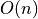

This manual describes the Pure programming language and how to invoke the Pure
interpreter program. To read the manual inside the interpreter, just type
help at the command prompt. See the Online Help section for details.
Pure is a fairly simple yet powerful language. Programs are basically
collections of term rewriting rules, which are used to reduce expressions to
normal form in a symbolic fashion. For convenience, Pure also offers some
extensions to the basic term rewriting calculus, like global variables and
constants, nested scopes of local function and variable definitions, anonymous
functions (lambdas), exception handling and a built-in macro facility. These
are all described below and in the following sections.
Most basic operations are defined in the standard prelude.
This includes the usual arithmetic and logical operations, as well as the
basic string, list and matrix functions. The prelude is always loaded by the
interpreter, so that you can start using the interpreter as a sophisticated
kind of desktop calculator right away. Other useful operations are provided
through separate library modules. Some of these, like the system interface and
the container data structures, are distributed with the interpreter, others
are available as separate add-on packages from the Pure website. A (very)
brief overview of some of the modules distributed with the Pure interpreter
can be found in the Standard Library section.
In this section we first give a brief overview of the most important elements
of the Pure language. After starting out with a discussion of the lexical
syntax, we proceed by explaining definitions and expressions, which are the
major ingredients of Pure programs. After studying this section you should be
able to write simple Pure programs. Subsequent sections then describe the
concepts and notions introduced here in much greater detail and also cover the
more advanced language elements which we only gloss over here.
Pure is a free-format language, i.e., whitespace is insignificant (unless it
is used to delimit other symbols). Thus, in contrast to “layout-based”
languages like Haskell, you must use the proper delimiters (;) and
keywords (end) to terminate definitions and block structures. In
particular, definitions and expressions at the toplevel have to be terminated
with a semicolon, even if you’re typing them interactively in the interpreter.
Comments use the same syntax as in C++: // for line-oriented, and
/* ... */ for multiline comments. The latter must not be nested. Lines
beginning with #! are treated as comments, too; as already discussed
above, on Unix-like systems this allows you to add a “shebang” to your main
script in order to turn it into an executable program.
A few ASCII symbols are reserved for special uses, namely the semicolon, the
“at” symbol @, the equals sign =, the backslash \, the Unix pipe
symbol |, parentheses (), brackets [] and curly braces {}.
(Among these, only the semicolon is a “hard delimiter” which is always a
lexeme by itself; the other symbols can be used inside operator symbols.)
Moreover, there are some keywords which cannot be used as identifiers:
case const def else end extern if
infix infixl infixr interface let namespace nonfix
of otherwise outfix postfix prefix private public
then type using when with
Pure fully supports the Unicode character set or, more precisely, UTF-8.
This is an ASCII extension capable of representing all Unicode characters,
which provides you with thousands of characters from most of the languages of
the world, as well as an abundance of special symbols for almost any purpose.
If your text editor supports the UTF-8 encoding (most editors do nowadays),
you can use all Unicode characters in your Pure programs, not only inside
strings, but also for denoting identifiers and special operator symbols.
The customary notations for identifiers, numbers and strings are all
provided. In addition, Pure also allows you to define your own operator
symbols. Identifiers and other symbols are described by the following grammar
rules in EBNF format:
symbol ::= identifier | special
identifier ::= letter (letter | digit)*
special ::= punct+
letter ::= "A"|...|"Z"|"a"|...|"z"|"_"|...
digit ::= "0"|...|"9"
punct ::= "!"|"#"|"$"|"%"|"&"|...
Pure uses the following rules to distinguish “punctuation” (which may only
occur in declared operator symbols) and “letters” (identifier
constituents). In addition to the punctuation symbols in the 7 bit ASCII
range, the following code points in the Unicode repertoire are considered as
punctuation: U+00A1 through U+00BF, U+00D7, U+00F7, and U+20D0 through
U+2BFF. This comprises the special symbols in the Latin-1 repertoire, as well
as the Combining Diacritical Marks for Symbols, Letterlike Symbols, Number
Forms, Arrows, Mathematical Symbols, Miscellaneous Technical Symbols, Control
Pictures, OCR, Enclosed Alphanumerics, Box Drawing, Blocks, Geometric Shapes,
Miscellaneous Symbols, Dingbats, Miscellaneous Mathematical Symbols A,
Supplemental Arrows A, Supplemental Arrows B, Miscellaneous Mathematical
Symbols B, Supplemental Mathematical Operators, and Miscellaneous Symbols and
Arrows. This should cover almost everything you’d ever want to use in an
operator symbol. All other extended Unicode characters are effectively treated
as “letters” which can be used as identifier constituents. (Charts of all
Unicode symbols can be found at the Code Charts page of the Unicode
Consortium.)
The following are examples of valid identifiers: foo, foo_bar,
FooBar, BAR, bar99. Case is significant in identifiers, so Bar
and bar are distinct identifiers, but otherwise the case of letters
carries no meaning. Special symbols consist entirely of punctuation, such as
::=. These may be used as operator symbols, but have to be declared before
they can be used (see Symbol Declarations).
Pure also has a notation for qualified symbols which carry a namespace prefix.
These take the following format (note that no whitespace is permitted between
the namespace prefix and the symbol):
qualified_symbol ::= [qualifier] symbol
qualified_identifier ::= [qualifier] identifier
qualifier ::= [identifier] "::" (identifier "::")*
Example: foo::bar.
Number literals come in three flavours: integers, bigints (denoted with an
L suffix) and floating point numbers (indicated by the presence of the
decimal point and/or a base 10 scaling factor). Integers and bigints may be
written in different bases (decimal, binary, octal and hexadecimal), while
floating point numbers are always denoted in decimal.
number ::= integer | integer "L" | float
integer ::= digit+
| "0" ("X"|"x") hex_digit+
| "0" ("B"|"b") bin_digit+
| "0" oct_digit+
oct_digit ::= "0"|...|"7"
hex_digit ::= "0"|...|"9"|"A"|...|"F"|"a"|...|"f"
bin_digit ::= "0"|"1"
float ::= digit+ ["." digit+] exponent
| digit* "." digit+ [exponent]
exponent ::= ("E"|"e") ["+"|"-"] digit+
Examples: 4711, 4711L, 1.2e-3. Numbers in different bases:
1000 (decimal), 0x3e8 (hexadecimal), 01750 (octal),
0b1111101000 (binary).
String literals are arbitrary sequences of characters enclosed in double
quotes, such as "Hello, world!".
string ::= '"' char* '"'
Special escape sequences may be used to denote double quotes and backslashes
(\", \\), control characters (\b, \f, \n, \r, \t,
these have the same meaning as in C), and arbitrary Unicode characters given
by their number or XML entity name (e.g., \169, \0xa9 and
\© all denote the Unicode copyright character, code point U+00A9). As
indicated, numeric escapes can be specified in any of the supported bases for
integer literals. For disambiguating purposes, these can also be enclosed in
parentheses. E.g., "\(123)4" is a string consisting of the character
\123 followed by the digit 4. Strings can also be continued across
line ends by escaping the line end with a backslash. The escaped line end is
ignored (use \n if you need to embed a newline in a string). For instance,
denotes the same string literal as
The real meat of a Pure program is in its definitions. In Pure these generally
take the form of equations which tell the interpreter how expressions are to
be evaluated. For instance, the following two equations together define a
function fact which computes, for each given integer n, the factorial
of n:
fact 0 = 1;
fact n::int = n*fact (n-1) if n>0;
The first equation covers the case that n is zero, in which case the
result is 1. The second equation handles the case of a positive
integer. Note the n::int construct on the left-hand side, which means that
the equation is restricted to (machine) integers n. This construct is also
called a “type tag” in Pure parlance. In addition, the n>0 in the
condition part of the second equation ensures that n is positive. If these
conditions are met, the equation becomes applicable and we recursively compute
fact (n-1) and multiply by n to obtain the result. The fact
function thus computes the product of all positive integers up to n, which
is indeed just how the factorial is defined in mathematics.
To give this definition a try, you can just enter it at the command prompt of
the interpreter as follows:
> fact 0 = 1;
> fact n::int = n*fact (n-1) if n>0;
> fact 10;
3628800
On the surface, Pure is quite similar to other modern functional languages
like Haskell and ML. But under the hood it is a much more dynamic language,
more akin to Lisp. In particular, Pure is dynamically typed, so functions can
process arguments of as many different types as you like. In fact, you can add
to the definition of an existing function at any time. For instance, we can
extend our example above to make the fact function work with floating
point numbers, too:
> fact 0.0 = 1.0;
> fact n::double = n*fact (n-1) if n>0;
> fact 10.0;
3628800.0
Here we employed the constant 0.0 and the double type tag to define
the factorial for the case of floating point numbers. Both int and
double are built-in types of the Pure language. Our earlier definition for
the int case still works as well:
In FP parlance, we say that a function like fact is polymorphic, because
it applies to different argument types. More precisely, the kind of
polymorphism at work here is ad-hoc polymorphism, because we have two
distinct definitions of the same function which behave differently for
different argument types.
Note that in this specific case, the two definitions are in fact very similar,
to the point that the right-hand sides of the definitions are almost the same.
Observing these similarities, we may also define fact in a completely
generic way:
> clear fact
> fact n = 1 if n==0;
> fact n = n*fact (n-1) if n>0;
(Note that before we can enter the new definition, we first need to scratch
our previous definition of fact, that’s what the clear fact command
does. This is necessary because, as we already saw, the interpreter would
otherwise just keep adding equations to the definition of fact that we
already have.)
Our new definition doesn’t have any type tags on the left-hand side and will
thus work with any type of numbers:
> fact 10; // int
3628800
> fact 30.0; // floating point
2.65252859812191e+32
> fact 50L; // bigint
30414093201713378043612608166064768844377641568960512000000000000L
Let’s now take a look at how the equations are actually applied in the
evaluation process. Conceptually, Pure employs term rewriting as its
underlying model of computation, so the equations are applied as rewriting
rules, reading them from left to right. An equation is applicable if its
left-hand side matches the target term to be evaluated, in which case we can
bind the variables in the left-hand side to the corresponding subterms in the
target term. Equations are tried in the order in which they are written; as
soon as the left-hand side of an equation matches (and the condition part of
the equation, if any, is satisfied), it can be applied to reduce the target
term to the corresponding right-hand side.
For instance, let’s take a look at the target term fact 3. This matches
both equations of our generic definition of fact from above, with n
bound to 3. But the condition 3==0 of the first equation fails, so we
come to consider the second equation, whose condition 3>0 holds. Thus we
can perform the reduction fact 3 ==> 3*fact (3-1) and then evaluate the
new target term 3*fact (3-1) recursively.
At this point, we have to decide which of the several subterms we should
reduce first. This is also called the reduction strategy and there are
different ways to go about it. For instance, we might follow the customary
“call-by-value” strategy where the arguments of a function application are
evaluated recursively before the function gets applied to it, and this is also
what Pure normally does. More precisely, expressions are evaluated using the
“leftmost-innermost” reduction strategy where the arguments are considered
from left to right.
So this means that on the right-hand side of the second equation, first
n-1 (being the argument of fact) is evaluated, then fact (n-1)
(which is an argument to the * operator), and finally fact (n-1) is
multiplied by n to give the value of fact n. Thus the evaluation of
fact 3 actually proceeds as follows (abbreviating reductions for the
built-in arithmetic operations):
fact 3 => 3*fact 2 => 3*2*fact 1 => 3*2*1*fact 0 => 3*2*1*1 => 6.
We mention in passing here that Pure also has a few built-in “special forms”
which take some or all of their arguments unevaluated, using “call by name”
argument passing. This is needed to handle some constructs such as logical
operations and conditionals in an efficient manner, and it also provides a way
to implement “lazy” data structures. We’ll learn about these later.
One of the convenient aspects of the rewriting model of computation is that it
enables you to define a function by pattern matching on structured argument
types. For instance, we might compute the sum of the elements of a list as
follows:
> sum [] = 0;
> sum (x:xs) = x+sum xs;
This discriminates over the different cases for the argument value which might
either be the empty list [] or a non-empty list of the from x:xs where
the variables x and xs refer to the head element and the rest of the
list, respectively. (The ‘:‘ infix operator is Pure’s way of writing
Lisp’s “cons”; this works the same as in other modern FPLs and is discussed in
much more detail later.)
Let’s give it a try:
Note that 1..10 denotes the list of all positive integers up to 10 here,
so we get the sum of the numbers 1 thru 10 as the result, which is indeed 55.
(The ‘..‘ operation is provided in Pure’s prelude, i.e., it is part of
the standard library.)
Due to its term rewriting semantics, Pure actually goes beyond most other
functional languages in that it can do symbolic evaluations just as well as
“normal” computations:
> square x = x*x;
> square 4;
16
> square (a+b);
(a+b)*(a+b)
In fact, leaving aside the built-in support for some common data structures
such as numbers and strings, all the Pure interpreter really does is evaluate
expressions in a symbolic fashion, rewriting expressions using the equations
supplied by the programmer, until no more equations are applicable. The result
of this process is called a normal form which represents the “value” of the
original expression. Moreover, there’s no distinction between “defined” and
“constructor” function symbols in Pure, so any function symbol or operator
can be used anywhere on the left-hand side of an equation, and may act as a
constructor symbol if it happens to occur in a normal form term. This enables
you to work with algebraic rules like associativity and distributivity in a
direct fashion:
> (x+y)*z = x*z+y*z; x*(y+z) = x*y+x*z;
> x*(y*z) = (x*y)*z; x+(y+z) = (x+y)+z;
> square (a+b);
a*a+a*b+b*a+b*b
The above isn’t possible in languages like Haskell and ML which always enforce
that only “pure” constructor symbols (without any defining equations) may
occur as a subterm on the left-hand side of a definition; this is also known
as the constructor discipline. Thus equational definitions like the above
are forbidden in these languages. Pure doesn’t enforce the constructor
discipline, so it doesn’t keep you from writing such symbolic rules if you
need them.
Another way of looking at this is that Pure allows you to have constructor
equations. For instance, the following equation makes lists automatically
stay sorted:
> x:y:xs = y:x:xs if x>y;
> [13,7,9,7,1]+[1,9,7,5];
[1,1,5,7,7,7,9,9,13]
This isn’t possible in Haskell and ML either because it violates the
constructor discipline; since ‘:‘ is a constructor it can’t simultaneously
be a defined function in these languages. Pure gives you much more freedom
there.
This symbolic mode of evaluation is rather unusual outside of the realm of
symbolic algebra systems, but it provides the programmer with a very flexible
model of computation and is one of Pure’s most distinguishing features. In
some cases, however, the unevaluated normal forms may also become a nuisance
since they may obscure possible programming errors. Therefore Pure provides
special --nosymbolic and --defined
pragmas (cf. Code Generation Options) which force functions to be treated
as defined functions, so that they become more like functions in traditional
untyped languages such as Lisp and Python which raise an exception under such
conditions. This is described in more detail under Defined Functions in the
Caveats and Notes section.
Taking another look at the examples above, you might wonder how the Pure
interpreter figures out what the parameters (a.k.a. “variables”) in an
equation are. This is quite obvious in rules involving just variables and
special operator symbols, such as (x+y)*z = x*z+y*z. However, what about
an equation like foo (foo bar) = bar? Since most of the time we don’t
declare any symbols in Pure, how does the interpreter know that foo is a
literal function symbol here, while bar is a variable?
The answer is that the interpreter considers the different positions in the
left-hand side expression of an equation. Basically, a Pure expression is just
a tree formed by applying expressions to other expressions, with the atomic
subexpressions like numbers and symbols at the leaves of the tree. (This is
true even for infix expressions like x+y, since in Pure these are always
equivalent to a function application of the form (+) x y which has the
atomic subterms (+), x and y at its leaves.)
Now the interpreter divides the leaves of the expression tree into “head” (or
“function”) and “parameter” (or “variable”) positions based on which leaves
are leftmost in a function application or not. Thus, in an expression like f
x y z, f is in the head or function position, while x, y and
z are in parameter or variable positions. (Note that in an infix
expression like x+y, (+) is the head symbol, not x, as the
expression is really parsed as (+) x y, see above.)
Identifiers in head positions are taken as literal function symbols by the
interpreter, while identifiers in variable positions denote, well,
variables. We also refer to this convention as the head = function rule. It
is quite intuitive and lets us get away without declaring the variables in
equations. (There are some corner cases not covered here, however. In
particular, Pure allows you to declare special “nonfix” symbols, if you need a
symbol to be recognized as a literal even if it occurs in a variable
position. This is done by means of a nonfix declaration, see
Symbol Declarations for details.)
Like in other functional languages, expressions are the central ingredient of
all Pure programs. All computation performed by a Pure program consists in the
evaluation of expressions, and expressions also form the building blocks of
the equational rules which are used to define the constants, variables,
functions and macros of a Pure program.
Typical examples of the different expression types are summarized in the
following table. Note that lambdas bind most weakly, followed by the special
case, when and with constructs, followed by
conditional expressions (if-then-else),
followed by the simple expressions. Operators are a part of the simple
expression syntax, and are parsed according to their declared precedences and
associativities (cf. Symbol Declarations). Function application binds
stronger than all operators. Parentheses can be used to group expressions and
override default precedences as usual.
| Type |
Example |
Description |
|---|
| Block |
\x y->2*x-y |
anonymous function (lambda) |
|
case f u of x,y = x+y end |
case expression |
|
x+y when x,y = f u end |
local variable definition |
|
f u with f (x,y) = x+y end |
local function definition |
| Conditional |
if x>0 then x else -x |
conditional expression |
| Simple |
x+y, -x, x mod y |
operator application |
|
sin x, max a b |
function application |
| Primary |
4711, 4711L, 1.2e-3 |
number |
|
"Hello, world!\n" |
string |
|
foo, x, (+) |
function or variable symbol |
|
[1,2,3], (1,2,3) |
list and tuple |
|
{1,2;3,4} |
matrix |
|
[x,-y | x=1..n; y=1..m; x<y] |
list comprehension |
|
{i==j | i=1..n; j=1..m} |
matrix comprehension |
The formal syntax of expressions is as follows. (Note that the rule
and simple_rule elements are part of the definition syntax, which is
explained in the Rule Syntax section.)
expr ::= "\" prim_expr+ "->" expr
| "case" expr "of" rules "end"
| expr "when" simple_rules "end"
| expr "with" rules "end"
| "if" expr "then" expr "else" expr
| simple_expr
simple_expr ::= simple_expr op simple_expr
| op simple_expr
| simple_expr op
| application
application ::= application prim_expr
| prim_expr
prim_expr ::= qualified_symbol
| number
| string
| "(" op ")"
| "(" left_op right_op ")"
| "(" simple_expr op ")"
| "(" op simple_expr ")"
| "(" expr ")"
| left_op expr right_op
| "[" exprs "]"
| "{" exprs (";" exprs)* [";"] "}"
| "[" expr "|" simple_rules "]"
| "{" expr "|" simple_rules "}"
exprs ::= expr ("," expr)*
op ::= qualified_symbol
left_op ::= qualified_symbol
right_op ::= qualified_symbol
rules ::= rule (";" rule)* [";"]
simple_rules ::= simple_rule (";" simple_rule)* [";"]
The Pure language provides built-in support for machine integers (32 bit),
bigints (implemented using GMP), floating point values (double precision IEEE
754) and character strings (UTF-8 encoded). These can all be denoted using the
corresponding literals described in Lexical Matters. Truth values are
encoded as machine integers; as you might expect, zero denotes false and any
non-zero value true, and the prelude also provides symbolic constants
false and true to denote these. Pure also supports generic C
pointers, but these don’t have a syntactic representation in Pure, except that
the predefined constant NULL may be used to denote a generic null
pointer; other pointer values need to be created with external C functions.
Together, these atomic types of expressions make up most of Pure’s primary
expression syntax. Pure also provides built-in support for some types of
“compound primaries” (lists, tuples and matrices). We also list these here
since they are typically denoted in some kind of bracketed form, even though
some related non-primary expression types such as x:y or x,y really
belong to the simple expressions.
-
Numbers: 4711, 4711L, 1.2e-3
The usual C notations for integers (decimal: 1000, hexadecimal:
0x3e8, octal: 01750) and floating point values are all provided.
Integers can also be denoted in base 2 by using the 0b or 0B
prefix: 0b1111101000. Integer constants that are too large to fit into
machine integers are promoted to bigints automatically. Moreover, integer
literals immediately followed by the uppercase letter L are always
interpreted as bigint constants, even if they fit into machine integers.
This notation is also used when printing bigint constants, to distinguish
them from machine integers.
-
Strings: "Hello, world!\n"
String constants are double-quoted and terminated with a null character,
like in C. In contrast to C, strings are always encoded in UTF-8, and
character escapes in Pure strings have a more flexible syntax (borrowed
from the author’s Q language) which provides notations to specify any
Unicode character. Please refer to Lexical Matters for details.
-
Function and variable symbols: foo, foo_bar, BAR, foo::bar
These consist of the usual sequence of letters (including the underscore)
and digits, starting with a letter. Case is significant, thus foo,
Foo and FOO are distinct identifiers. The ‘_‘ symbol, when
occurring on the left-hand side of an equation, is special; it denotes the
anonymous variable which matches any value without actually binding a
variable. Identifiers can also be prefixed with a namespace identifier,
like in foo::bar. (This requires that the given namespace has already
been created, as explained under Namespaces in the Declarations section.)
-
Operator symbols: +, ==, not
For convenience, Pure also provides you with a limited means to extend the
syntax of the language with special operator symbols by means of a
corresponding fixity declaration, as discussed in section Symbol
Declarations. Besides the usual infix, prefix and postfix operators,
Pure also provides outfix (bracket) and nonfix (nullary operator)
symbols. (Nonfix symbols actually work more or less like ordinary
identifiers, but the nonfix attribute tells the compiler that
when such a symbol occurs on the left-hand side of an equation, it is
always to be interpreted as a literal, cf. The “Head = Function” Rule.)
Operator (and nonfix) symbols may take the form of an identifier or a
sequence of punctuation characters, which may optionally be qualified with
a namespace prefix. These symbols must always be declared before use. Once
declared, they are always special, and can’t be used as ordinary
identifiers any more. However, like in Haskell, by enclosing an operator
in parentheses, such as (+) or (not), you can turn it into an
ordinary function symbol.
-
Lists: [x,y,z], x:xs
Pure’s basic list syntax is the same as in Haskell, thus [] is the
empty list and x:xs denotes a list with head element x and tail
list xs. The infix constructor symbol ‘:‘ is declared in
the prelude. It associates to the right, so that x:y:z is the same as
x:(y:z). The usual syntactic sugar for list values in brackets is also
provided, thus [x,y,z] is exactly the same as x:y:z:[]. (This kind
of list value is also called a “proper” list. Pure also permits “improper”
list values such as 1:2:3 with a non-list value in the tail. These
aren’t of much use as ordinary list values, but are frequently used in
patterns or symbolic expressions such as x:y where the tail usually is
a variable.)
Lists can be nested to an arbitrary depth. Also note that, in contrast to
Haskell, lists are not required to be homogeneous, so in general they may
contain an arbitary mix of element types. E.g., [1,2.0,[x,y]] is a
three-element list consisting of an integer, a floating point number and a
nested list containing two symbols.
Pure also provides a notation for arithmetic sequences such as 1..5,
which denotes the list [1,2,3,4,5]. Note the missing brackets; Pure
doesn’t use any special syntax for arithmetic sequences, the ‘..‘
symbol is just an ordinary infix operator declared and defined in the
prelude. Sequences with arbitrary stepsizes can be written by denoting the
first two sequence elements using the ‘:‘ operator, as in
1.0:1.2..3.0. To prevent unwanted artifacts due to rounding errors, the
upper bound in a floating point sequence is always rounded to the nearest
grid point. Thus, e.g., 0.0:0.1..0.29 actually yields
[0.0,0.1,0.2,0.3], as does 0.0:0.1..0.31.
-
Tuples: (x,y,z)
Pure’s tuples are a flat variant of lists which are often used as aggregate
function arguments and results when no elaborate hierarchical structure is
needed. They are constructed using the infix “pairing” operator
‘,‘, for which the empty tuple () acts as a neutral element
(i.e., (),x is just x, as is x,()). Pairs always associate to
the right, meaning that x,y,z = x,(y,z) = (x,y),z, where x,(y,z) is
the normalized representation. These rules imply that tuples can’t be
nested and that there are no “true” 1-tuples distinct from their single
members; if you need this then you should use lists instead (cf. Splicing
Tuples and Matrices).
Note that the parentheses are not really part of the tuple syntax in Pure,
they’re just used to group expressions. So (x,y,z) denotes just
x,y,z. But since the ‘,‘ operator has a low precedence, the
parentheses are often needed to include tuples in other contexts. In
particular, the parentheses are required to set off tuple elements in lists
and matrices. E.g., [(1,2),3,(4,5)] denotes a three element list
consisting of two tuples and an integer.
Mathematically, Pure’s notion of tuples corresponds to a monoid with an
associative binary operation ‘,‘ and neutral element ().
This is different from the usual definition of tuples in mathematical
logic, which are nestable and correspond to Pure’s notion of lists. So in
Pure you can take your pick and use either flat tuples or nestable lists,
whatever is most convenient for the problem at hand.
-
Matrices: {1.0,2.0,3.0}, {1,2;3,4}, {cos t,-sin t;sin t,cos t}
Pure also offers matrices, a kind of two-dimensional arrays, as a built-in
data structure which provides efficient storage and element access. These
work more or less like their Octave/MATLAB equivalents, but using curly
braces instead of brackets. Component values may either be individual
elements (“scalars”) or submatrices which are combined to form a larger
matrix, provided that all dimensions match up. Here, a scalar is any
expression which doesn’t yield a matrix; these are considered to be 1x1
submatrices for the purpose of matrix construction. (Note that this
“splicing” behaviour pertains to matrix construction only; nested matrix
patterns are always matched literally.)
The comma arranges submatrices and scalars in columns, while the semicolon
arranges them in rows. So, if both x and y are n x m
matrices, then {x,y} becomes an n x 2*m matrix consisting of
all the columns of x followed by all the columns of y. Likewise,
{x;y} becomes a 2*n x m matrix (all the rows of x above of
all rows of y). For instance, {{1;3},{2;4}} is another way to write
the 2x2 matrix {1,2;3,4}. Row vectors are denoted as 1 x n matrices
({1,2,3}), column vectors as n x 1 matrices ({1;2;3}). More
examples can be found in the Matrices and Vectors section.
Pure supports both numeric and symbolic matrices. The former are
homogeneous arrays of double, complex double or (machine) int matrices,
while the latter can contain any mixture of Pure expressions. Pure will
pick the appropriate type for the data at hand. If a matrix contains
values of different types, or Pure values which cannot be stored in a
numeric matrix, then a symbolic matrix is created instead (this also
includes the case of bigints, which are considered as symbolic values as
far as matrix construction is concerned). Numeric matrices use an internal
data layout that is fully compatible with the GNU Scientific Library
(GSL), and can readily be passed to GSL routines via the C interface. (The
Pure interpreter does not require GSL, however, so numeric matrices will
work even if GSL is not installed.)
-
Comprehensions: [x,y | x=1..n; y=1..m; x<y], {f x | x=1..n}
Pure provides both list and matrix comprehensions as a convenient means to
construct list and matrix values from a “template” expression and one or
more “generator” and “filter” clauses. The former bind a pattern to values
drawn from a list or matrix, the latter are just predicates determining
which generated elements should actually be added to the result.
Comprehensions are in fact just syntactic sugar for a combination of
lambdas, conditional expressions and certain list and matrix operations,
but they are often much easier to write.
Thus, for instance, [f x | x=1..n] is pretty much the same as map f
(1..n), while [x | x=xs; x>0] corresponds to filter (>0) xs.
However, comprehensions are considerably more general in that they allow
you to draw values from different kinds of aggregates including lists,
matrices and strings. Also, matrix comprehensions alternate between row and
column generation so that most common mathematical abbreviations carry over
quite easily. Patterns can be used on the left-hand side of generator
clauses as usual, and will be matched against the actual list or matrix
elements; any unmatched elements are filtered out automatically, like in
Haskell.
More details and examples can be found in the Examples section; in
particular, see List Comprehensions and Matrices and Vectors.
The rest of Pure’s expression syntax mostly revolves around the notion of
function applications. For convenience, Pure also allows you to declare pre-,
post-, out- and infix operator symbols, but these are in fact just syntactic
sugar for function applications; see Symbol Declarations for details.
Function and operator applications are used to combine primary expressions to
compound terms, also referred to as simple expressions; these are the data
elements which are manipulated by Pure programs.
As in other modern FPLs, function applications are written simply as
juxtaposition (i.e., in “curried” form) and associate to the left. This means
that in fact all functions only take a single argument. Multi-argument
functions are represented as chains of single-argument functions. For
instance, in f x y = (f x) y first the function f is applied to the
first argument x, yielding the function f x which in turn gets applied
to the second argument y. This makes it possible to derive new functions
from existing ones using partial applications which only specify some but
not all arguments of a function. For instance, taking the max function
from the prelude as an example, max 0 is the function which, for a given
x, returns x itself if it is nonnegative and zero otherwise. This
works because (max 0) x = max 0 x is the maximum of 0 and x.
One major advantage of having curried function applications is that, without
any further ado, functions become first-class objects. That is, they can be
passed around freely both as parameters and as function return values. Much of
the power of functional programming languages stems from this feature.
Operator applications are written using prefix, postfix, outfix or infix
notation, as the declaration of the operator demands, but are just ordinary
function applications in disguise. As already mentioned, enclosing an operator
in parentheses turns it into an ordinary function symbol, thus x+y is
exactly the same as (+) x y. For convenience, partial applications of
infix operators can also be written using so-called operator sections. A
left section takes the form (x+) which is equivalent to the partial
application (+) x. A right section takes the form (+x) and is
equivalent to the term flip (+) x. (This uses the flip combinator
from the prelude which is defined as flip f x y = f y x.) Thus (x+) y
is equivalent to x+y, while (+x) y reduces to y+x. For instance,
(1/) denotes the reciprocal and (+1) the successor function. (Note
that, in contrast, (-x) always denotes an application of unary minus; the
section (+-x) can be used to indicate a function which subtracts x
from its argument.)
The common operator symbols like +, -, *, / etc. are all
declared at the beginning of the prelude, see the Pure Library Manual for a list of
these. Arithmetic and relational operators mostly follow C conventions.
However, since !, & and | are used for other purposes in Pure, the
logical and bitwise operations, as well as the negated equality predicates are
named a bit differently: ~, && and || denote logical negation,
conjunction and disjunction, while the corresponding bitwise operations are
named not, and and or. Moreover, following these conventions,
inequality is denoted ~=. Also note that && and || are special
forms which are evaluated in short-circuit mode (see Special Forms below),
whereas the bitwise connectives receive their arguments using call-by-value,
just like the other arithmetic operations.
Some special notations are provided for conditional expressions as well as
anonymous functions (lambdas) and local function and variable definitions.
The latter are also called block expressions since they introduce local
bindings of variable and function symbols which may override other global or
local bindings of these symbols. This gives rise to a kind of block
structure similar to Algol-like programming languages. Please check Scoping
Rules below for more information about this.
The constructs described here are called “special” because, in contrast to the
other forms of expressions, they cannot occur in normal form terms as
first-class values (at least not literally; there is an alternative quoted
representation of special expressions, however, which can be manipulated
with macros and functions for meta programming purposes, cf. Built-in Macros
and Special Expressions).
-
Conditional expressions: if x then y else z
Evaluates to y or z depending on whether x is “true” (i.e., a
nonzero integer). A failed_cond exception is raised if the
condition is not an integer.
-
Lambdas: \x -> y
These denote anonymous functions and work pretty much like in Haskell. A
lambda matches its argument against the left-hand side pattern x and
then evaluates the right-hand side body y with the variables in x
bound to their corresponding values. Pure supports multiple-argument
lambdas (e.g, \x y -> x*y), as well as pattern-matching lambda
abstractions such as \(x,y) -> x*y. A failed_match exception
is raised if the actual arguments do not match the given patterns.
-
Case expressions: case x of u = v; ... end
Matches an expression, discriminating over a number of different cases,
similar to the Haskell case construct. The expression x is matched
in turn against each left-hand side pattern u in the rule list, and the
first pattern which matches x gives the value of the entire expression,
by evaluating the corresponding right-hand side v with the variables in
the pattern bound to their corresponding values. A failed_match
exception is raised if the target expression doesn’t match any of the
patterns.
-
When expressions: x when u = v; ... end
An alternative way to bind local variables by matching a collection of
subject terms against corresponding patterns, similar to Aardappel‘s
when construct. A single binding x when u = v end is equivalent to
the lambda expression (\u -> x) v or the case expression case v
of u = x end, so it matches v against the pattern u and evaluates
x with the variables in u bound to their corresponding values (or
raises a failed_match exception if v doesn’t match u).
However, a when clause may contain multiple definitions, which are
processed from left to right, so that later definitions may refer to the
variables in earlier ones. (This is exactly the same as several nested
single definitions, with the first binding being the “outermost” one.)
-
With expressions: x with u = v; ... end
Defines local functions. Like Haskell’s where construct, but it can be
used anywhere inside an expression (just like Aardappel’s where, but
Pure uses the keyword with which better lines up with case and
when). Several functions can be defined in a single with clause,
and the definitions can be mutually recursive and consist of as many
equations as you want. Local functions are applied in the same way as
global ones, i.e., the argument patterns of each rule are matched against
the actual function arguments and the first rule which matches has its
right-hand side evaluated with the variables in the argument patterns bound
to their corresponding values. If none of the rules match then the function
application remains unevaluated (it becomes a normal form), so no exception
is raised in this case. (This is in contrast to a lambda which otherwise is
pretty much like a nameless local function defined by a single rule.)
The block constructs are similar to those available in most modern functional
languages. In Pure these constructs are all implemented in terms of the basic
term rewriting machinery, using lambda lifting to eliminate local
functions, and the following equivalences which reduce lambdas as well as
case and when expressions to special kinds of local
functions or local function applications:
\x1 ... xn -> y
== f with f x1 ... xn = y; f _ ... _ = throw failed_match end
case x of y1 = z1; ...; yn = zn end
== f x with f y1 = z1; ...; f yn = zn; f _ = throw failed_match end
x when y = z end
== f z with f y = x; f _ = throw failed_match end
x when y1 = z1; ...; yn = zn end
== x when yn = zn end ... when y1 = z1 end
Note that by convention these constructs report a failed_match
exception in case of argument mismatch. So they’re treated like defined
functions, which is somewhat at odds with the term rewriting semantics. This
is done for convenience, however, so that the programmer doesn’t have to deal
with unevaluated applications of nameless block constructs in normal form
terms. The case of named local functions is considered different because it
effectively represents a local rewriting system which should be treated
accordingly, in order to allow for symbolic evaluation.
At the toplevel, a Pure program basically consists of rewriting rules (which
are used to define functions, macros and types), constant and variable
definitions, and expressions to be evaluated:
script ::= item*
item ::= "let" simple_rule ";"
| "const" simple_rule ";"
| "def" macro_rule ";"
| "type" type_rule ";"
| rule ";"
| expr ";"
These elements are discussed in more detail in the Rule Syntax section.
Also, a few additional toplevel elements are part of the declaration syntax,
see Declarations.
-
lhs = rhs;
Rewriting rules always combine a left-hand side pattern (which must be a
simple expression) and a right-hand side (which can be any kind of Pure
expression described above). The same format is also used in
with, when and case expressions. In
toplevel rules, with and case expressions, this basic
form can also be augmented with a condition if guard tacked on to the
end of the rule, where guard is an integer expression which determines
whether the rule is applicable. Moreover, the keyword otherwise
may be used to denote an empty guard which is always true (this is
syntactic sugar to point out the “default” case of a definition; the
interpreter just treats this as a comment). Pure also provides some
abbreviations for factoring out common left-hand or right-hand sides in
collections of rules; see the Rule Syntax section for details.
-
type lhs = rhs;
A rule starting with the keyword type defines a type predicate.
This works pretty much like an ordinary rewriting rule, except that only a
single right-hand side is permitted (which may also be omitted in some
cases) and the left-hand side may involve at most one argument expression;
see the Type Rules section for details. There’s also an alternative
syntax which lets you define types in a more abstract way and have the
compiler generate the type rules for you; this is described in the
Interface Types section.
-
def lhs = rhs;
A rule starting with the keyword def defines a macro
function. No guards or multiple right-hand sides are permitted here. Macro
rules are used to preprocess expressions on the right-hand side of other
definitions at compile time, and are typically employed to implement
user-defined special forms and simple kinds of optimization rules. See the
Macros section below for details and examples.
-
let lhs = rhs;
Binds every variable in the left-hand side pattern to the corresponding
subterm of the right-hand side (after evaluating it). This works like a
when clause, but serves to bind global variables occurring free
on the right-hand side of other function and variable definitions.
-
const lhs = rhs;
An alternative form of let which defines constants rather than
variables. (These are not to be confused with nonfix symbols which simply
stand for themselves!) Like let, this construct binds the
variable symbols on the left-hand side to the corresponding values on the
right-hand side (after evaluation). The difference is that const
symbols can only be defined once, and thus their values do not change
during program execution. This also allows the compiler to apply some
special optimizations such as constant folding.
-
expr;
A singleton expression at the toplevel, terminated with a semicolon, simply
causes the given value to be evaluated (and the result to be printed, when
running in interactive mode).
A few remarks about the scope of identifiers and other symbols are in order
here. Special expressions introduce local scopes of functions and
variables. Specifically, lambda expressions, as well as the left-hand sides of
rules in case, when and with expressions, bind the variables in
the patterns to their corresponding values. In addition, a with expression
also binds function names to the corresponding functions defined by the rules
given in the expression. In either case, these bindings are limited to the
scope of the corresponding construct. Inside that scope they override other
(global or local) definitions of the same symbols which may be present in the
surrounding program code. This gives rise to a hierarchical block structure
where each occurrence of a symbol refers to the innermost definition of that
symbol visible at that point of the program.
The precise scoping rules for the different constructs are as follows:
- \x -> y: The scope of the variables bound by the pattern x is the
lambda body y.
- case x of u = v; ... end: The scope of the variables bound by the
pattern u in each rule is the corresponding right-hand side v.
- x when u = v; ... end: The scope of the variables bound by the pattern
u in each rule extends over the right-hand sides of all subsequent rules
and the target expression x.
- x with u = v; ... end: The scope of the variables bound by the pattern
u in each rule is the corresponding right-hand side v. In addition,
the scope of the function names defined by the with clause (i.e., the
head symbols of the rules) extends over the right-hand sides of all rules
and the target expression x. Note that this allows local function
definitions to be mutually recursive, since the right-hand side of each rule
in the with clause may refer to any other function defined by the
with clause.
Like most modern functional languages, Pure uses lexical or static binding
for local functions and variables. What this means is that the binding of a
local name is completely determined at compile time by the surrounding program
text, and does not change as the program is being executed. In particular, if
a function returns another (anonymous or local) function, the returned
function captures the environment it was created in, i.e., it becomes a
(lexical) closure. For instance, the following function, when invoked with a
single argument x, returns another function which adds x to its
argument:
> foo x = bar with bar y = x+y end;
> let f = foo 99; f;
bar
> f 10, f 20;
109,119
This works the same no matter what other bindings of x may be in effect
when the closure is invoked:
> let x = 77; f 10, (f 20 when x = 88 end);
109,119
In contrast to local bindings, Pure’s toplevel environment binds global
symbols dynamically, so that the bindings can be changed easily at any time
during an interactive session. This is mainly a convenience for interactive
usage, but works the same no matter whether the source code is entered
interactively or being read from a script, in order to ensure consistent
behaviour between interactive and batch mode operation.
In particular, you can easily bind a global variable to a new value by just
entering a corresponding let command. For instance, contrast the
following with the local bar function from above which had the x value
bound in the surrounding context:
> clear x
> bar y = x+y;
> bar 10, bar 20;
x+10,x+20
> let x = 99;
> bar 10, bar 20;
109,119
> let x = 77;
> bar 10, bar 20;
87,97
Observe how changing the value of the global x variable immediately
affects the value computed by the global bar function. This works pretty
much like global variables in imperative languages, but note that in Pure the
value of a global variable can only be changed with a let command
at the toplevel. Thus referential transparency is unimpaired; while the value
of a global variable may change between different toplevel expressions, it
will always take the same value in a single evaluation.
Similarly, you can also add new equations to an existing function at any
time. The Pure interpreter will then automatically recompile the function as
needed. For instance:
> fact 0 = 1;
> fact n::int = n*fact (n-1) if n>0;
> fact 10;
3628800
> fact 10.0;
fact 10.0
> fact 1.0 = 1.0;
> fact n::double = n*fact (n-1) if n>1;
> fact 10.0;
3628800.0
> fact 10;
3628800
In interactive mode, it is even possible to completely erase a function
definition and redo it from scratch, see section Interactive Usage for
details.
So, while the meaning of a local symbol never changes once its definition has
been processed, toplevel definitions may well evolve while the program is
being processed, and the interpreter will always use the latest definitions at
a given point in the source when an expression is evaluated.
Note
As already mentioned, this behaviour makes Pure much more convenient
to use in an interactive setting. We should point out, however, that
dynamic environments are often frowned upon by functional programming
purists (for good reasons), and Pure’s dynamic toplevel certainly has its
pitfalls just like any other. Specifically, even in a script file you’ll
have to take care that all symbols needed in an evaluation are completely
defined before entering the expression to be evaluated. Nevertheless, it is
expected that most Pure programmers will use Pure interactively most of the
time, and so tailoring the design to interactive usage seems justifiable in
this case.
Basically, the same rule syntax is used in all kinds of global and local
definitions. However, some constructs (specifically, when,
let, const, type and def) use a
variation of the basic rule syntax which does away with guards and/or multiple
left-hand or right-hand sides. The syntax of these elements is captured by the
following grammar rules:
rule ::= pattern ("|" pattern)* "=" expr [guard]
(";" "=" expr [guard])*
type_rule ::= pattern ("|" pattern)* [ "=" expr [guard] ]
macro_rule ::= pattern ("|" pattern)* "=" expr
simple_rule ::= pattern "=" expr | expr
pattern ::= simple_expr
guard ::= "if" simple_expr
| "otherwise"
| guard "when" simple_rules "end"
| guard "with" rules "end"
When matching against a function or macro call, or the subject term in a
case expression, the rules are always considered in the order in
which they are written, and the first matching rule (whose guard evaluates to
a nonzero value, if applicable) is picked. (Again, the when
construct is treated differently, because each rule is actually a separate
definition.)
The left-hand side of a rule is a special kind of simple expression, called a
pattern. The variables in a pattern serve as placeholders which are bound to
corresponding values when the rule is applied to a target expression. To these
ends, the pattern is matched against the target expression, i.e., the
literal parts of the pattern are compared against the target expression and,
if everything matches up, the variables in the pattern are bound to (set to
the value of) the corresponding subterms of the target expression.
Patterns are pervasive in Pure; they are used on the left-hand side of
function and macro definitions, just as well as in global and local variable
definitions. For instance, the following variable definition matches the
result of evaluating the right-hand side list expression against the pattern
x:y:xs and binds the variables x and y to the first two elements
of the resulting list and xs to the list of remaining elements,
respectively. We can then place x and y at the end of the list,
thereby performing a kind of “rotation” of the first two list members:
> let x:y:xs = 1..10;
> xs+[x,y];
[3,4,5,6,7,8,9,10,1,2]
The same works with a local variable definition:
> xs+[x,y] when x:y:xs = 1..10 end;
[3,4,5,6,7,8,9,10,1,2]
Or with a case expression:
> case 1..10 of x:y:xs = xs+[x,y] end;
[3,4,5,6,7,8,9,10,1,2]
The arguments of functions (and macros) are handled in the same fashion, too:
> rot2 (x:y:xs) = xs+[x,y];
> rot2 (1..10);
[3,4,5,6,7,8,9,10,1,2]
However, there is a big difference here. For global and local variable
definitions, it is an error if the pattern does not match the target
expression:
> let x:y:xs = [1];
<stdin>, line 7: failed match while evaluating 'let x:y:xs = [1]'
The same holds if the target expression doesn’t match any of the left-hand
side patterns in a case expression:
> case [1] of x:y:xs = xs+[x,y] end;
<stdin>, line 8: unhandled exception 'failed_match' while evaluating
'case [1] of x:y:xs = xs+[x,y] end'
(The error message is slightly different in this case, but the reported kind
of exception is actually the same as with the let expression above.)
This doesn’t normally happen with functions and macros. Instead, a match
failure just means that the corresponding rule will be bypassed and other
rules will be tried instead. If there are no more rules, the target expression
becomes a normal form which is simply returned as is:
This may come as a surprise (other functional languages will give you an error
in such cases), but is a crucial feature of term rewriting languages, as it
opens the door to symbolic evaluation techniques, see Definitions and
Expression Evaluation.
There are two different ways to force a function definition to bail out with
an error if you prefer that behaviour. First, you can provide an explicit rule
which raises an exception (cf. Exception Handling). But this can make it
difficult or even impossible to add more rules to the function later, as
discussed below. Instead, you may want to use the --defined pragma as follows:
> #! --defined rot2
> rot2 [1];
<stdin>, line 13: unhandled exception 'failed_match' while evaluating 'rot2 [1]'
Note
This pragma tells the compiler that rot2 is supposed to be a
“defined” function, which means that it should be an error if no rule
applies to it; please see Defined Functions in the Caveats and Notes
section for details. Also note that exceptions will always interfere with
symbolic evaluation and thus the use of this facility isn’t really
recommended. However, there are situations in which it can make your life a
lot easier.
One of Pure’s key features is that you can usually just keep on adding new
rules to existing function definitions in order to handle different kinds of
arguments. As already mentioned, the rules will then be considered in the
order in which they are written, and the first rule which matches the given
arguments will be used to reduce the function application. For instance,
adding the following rule we can make the rot2 function also work with
tuples:
> rot2 (x,y,xs) = xs,x,y;
> rot2 (1,2,3,4,5);
3,4,5,1,2
This is also known as ad-hoc polymorphism. By these means, you can make a
function apply to as many different kinds of arguments as you want, and the
pattern matching handles the necessary “dispatching” so that the right rule
gets invoked for the provided arguments.
Pattern matching is not limited to the predefined aggregates such as lists,
tuples and matrices. In principle, any legal Pure expression can occur as a
pattern on the left-hand side of a rule or definition, so you can also write
something like:
> rot2 (point x y z) = point z x y;
> rot2 (point 1 2 3);
point 3 1 2
Or even:
> foo (foo x) = foo x;
> bar (foo x) = foo (bar x);
> foo (bar (foo 99));
foo (bar 99)
Note that symbolic rules like in the latter example (which in this case
express the idempotence of foo and a kind of commutativity with respect to
bar) often involve symbols which play the role of both a function and a
constructor symbol.
Syntactically, patterns are simple expressions, thus special expressions
need to be parenthesized if you want to include them in a pattern. (In fact,
special expressions are given special treatment if they occur in patterns, see
the Macros section for details.) A few other special elements in patterns are
discussed below.
A central ingredient of all patterns are of course the variables which get
bound in the pattern matching process. Pure is a rather terse language and
thus it has no explicit way to declare which identifiers are the variables.
Instead, the compiler figures them out on its own, using a rather intuitive
rule already explained in Variables in Equations.
Recall that the variables in a pattern are the identifiers in “variable
positions”. The head = function rule tells us that a variable position is
any leaf (atomic subexpression) of the expression tree which is not the head
symbol of a function application. Thus a pattern like f (g x) y contains
the variables x and y, whereas f and g are interpreted as
literal function symbols. This rule also applies to the case of infix, prefix
or postfix operator symbols, if we write the corresponding application in its
unsugared form. E.g., x+y*z is equivalent to (+) x ((*) y z) which
contains the variables x, y and z and the literal function symbols
(+) and (*).
There are some exceptions to the “head = function” rule. Specifically, it is
possible to declare an identifier as a nonfix symbol so that it
will be interpreted as a literal function symbol even if it occurs in a
variable position, see Symbol Declarations for details. For instance:
Note that since nil is declared as a nonfix symbol here, the
symbol is interpreted as a literal rather than a variable in the left-hand
side foo nil, and thus foo will return 0 for a literal nil
value only.
Another case which needs special consideration are patterns consisting of a
single identifier, such as x. Here the meaning depends on the kind of
construct. All variable-binding constructs (let, const,
when and case) treat a singleton identifier as a
variable (unless it is declared nonfix). Thus all of the following
constructs will have the expected result of binding the variable x to the
given list value [1,2,3]. In either case the result is [0,1,2,3]:
let x = [1,2,3]; 0:x;
0:x when x = [1,2,3] end;
case [1,2,3] of x = 0:x end;
In contrast, a single identifier is always interpreted as a literal if it
occurs on the left-hand side of a function or macro definition, so that the
following rule defines a parameterless function y:
(While they yield the same values here, there are some notable differences
between the parameterless function y and the global variable x defined
above; see Defining Functions for details.)
Please also check “Head = Function” Pitfalls in the Caveats and Notes
section which has some some further interesting details and workarounds
concerning the “head = function” rule.
Constants in patterns must be matched literally. For instance:
This will only match an application of foo to the machine integer 0,
not 0.0 or 0L (even though these compare equal to 0 using the
‘==‘ operator).
The ‘_‘ symbol is special in patterns; it denotes the anonymous variable
which matches an arbitrary value (independently for all occurrences) without
actually binding a variable. This is useful if you don’t care about an
argument or one of its components, in which case you can just use the
anonymous variable as a placeholder for the value and don’t have to invent a
variable name for it. For instance:
This will match the application of foo to any combination of two
arguments (and just ignore the values of these arguments).
In contrast to Haskell, patterns may contain repeated variables (other than
the anonymous variable), i.e., they may be non-linear. Thus rules like the
following are legal in Pure, and will only be matched if all occurrences of
the same variable in the left-hand side pattern are matched to the same
value:
> foo x x = x;
> foo 1 1;
1
> foo 1 2;
foo 1 2
Non-linear patterns are particularly useful for computer algebra where you
will frequently encounter rules such as the following:
> x*y+x*z = x*(y+z);
> a*(3*4)+a*5;
a*17
The notion of “sameness” employed here is that of syntactical identity, which
means that the matched subterms must be identical in structure and content.
The prelude provides syntactic equality as a function same and a
comparison predicate ‘===‘. Thus the above definition of foo
is roughly equivalent to the following:
It is important to note the differences between syntactic equality embodied by
same and ‘===‘, and the “semantic” equality operator
‘==‘. The former are always defined on all terms, whereas
‘==‘ is only available on data where it has been defined
explicitly, either in the prelude or by the programmer. Also note that
‘==‘ may assert that two terms are equal even if they are
syntactically different. Consider, e.g.:
This distinction is actually quite useful. It gives the programmer the
flexibility to define ‘==‘ in any way that he sees fit, which is
consistent with the way the other comparison operators like ‘<‘
and ‘>‘ are handled in Pure.
Syntactic equality is also used in pattern matching in order to decide whether
a constant in a pattern matches the corresponding subterm in the target
expression. This explains why the pattern foo 0, as already mentioned,
only matches an application of foo to the machine integer 0, not
0.0 or 0L which aren’t syntactically equal to 0.
However, there is one caveat here. Due to its term rewriting heritage, Pure
distinguishes between literal function symbols in patterns and named
functions. The latter are runtime objects which are only considered
syntactically equal if they not only have the same name but actually refer to
the same (global or local) closure. In contrast, a function symbol in a
pattern is just a literal symbol without reference to any particular closure
that the symbol may be bound to in some context. Thus a function symbol in a
pattern matches any instance of the symbol in the target expression, no
matter whether it happens to be a pure constructor, quoted symbol or any named
closure bound to that symbol.
This leads to some discrepancies between pattern matching and syntactic
equality which may be surprising at first sight. For instance, consider:
> foo x = case x of bar y = x===bar y end;
> bar x y = x+y;
> foo (bar 99);
1
> foo ('bar 99);
0
> foo (bar 99) with bar x y = x*y end;
0
Note that the argument term bar 99 matches the pattern bar y in the
case expression in either case, even though in the last two
expressions bar is not considered syntactically equal to the global
bar function because it is quoted (cf. The Quote) or bound to a local
closure of the same name, respectively.
Last but not least, patterns may also contain the following special elements
which are not permitted in right-hand side expressions:
- A Haskell-style “as” pattern of the form variable @ pattern
binds the given variable to the expression matched by the subpattern
pattern (in addition to the variables bound by pattern itself). This
is convenient if the value matched by the subpattern is to be used on the
right-hand side of an equation.
- A left-hand side variable (including the anonymous variable) may be followed
by a type tag of the form :: name, where name is either one of the
built-in type symbols int, bigint, double, string,
matrix, pointer, or an identifier denoting a user-defined data
type. The variable can then match only values of the designated type. Thus,
for instance, ‘x::int‘ only matches machine integers. See the Type
Tags section below for details.
To these ends, the expression syntax is augmented with the following grammar
rule (but note that this form of expression is in fact only allowed on the
left-hand side of a rule):
prim_expr ::= qualified_identifier
("::" qualified_identifier | "@" prim_expr)
As shown, both “as” patterns and type tags are primary expressions, and the
subpattern of an “as” pattern is a primary expression, too. Thus, if a
compound expression is to be used as the subpattern, it must be
parenthesized. For instance, the following function duplicates the head
element of a list:
Note that if you accidentally forget the parentheses around the subpattern
x:_, you still get a syntactically correct definition:
But this gets parsed as (foo xs@x):_ = x:xs, which is most certainly not
what you want. It is thus a good idea to just always enclose the subpattern
with parentheses in order to prevent such glitches.
Note
Another pitfall is that the notation foo::bar is also used to
denote “qualified symbols” in Pure, cf. Namespaces. Usually this will be
resolved correctly, but if foo happens to also be a valid namespace
then most likely you’ll get an error message about an undeclared symbol.
You can always work around this by adding spaces around the ‘::‘
symbol, as in foo :: bar. Spaces are never permitted in qualified
symbols, so this makes it clear that the construct denotes a type tag. The
same applies if the variable or the tag is a qualified identifier; in this
case they should always be separated by whitespace.
Like Lisp, Pure is essentially a typeless language and doesn’t really have a
built-in notion of “data types”. Rather, all data belongs to the same universe
of terms. However, for convenience it is possible to describe data domains by
means of (unary) type predicates which may denote arbitrary sets of
terms. The names of these type predicates can then be used as type tags on
variables, so that they can only be matched by values of the given type.
We have to emphasize here that Pure’s notion of types has nothing to do with
static typing. Type tags are merely used at runtime to restrict the kind of
data that can be matched by a rule (and by the compiler to generate better
code in some cases). But they will never cause the compiler to impose a static
typing discipline and spit out corresponding “type errors”. (This wouldn’t
make any sense in Pure anyway, as failure to match any of the rules given in
the definition of a function simply means that a function application is in
normal form.)
Some basic types are built into the language. The corresponding tags enable
you to match the built-in types of terms for which there is no way to spell
out all “constructors”, as there are infinitely many (or none, as in the case
of pointer values which are constructed and inspected using
special primitives, but are otherwise “opaque” at the Pure level).
Specifically, the following data types are built-in (in fact, the pattern
matcher has special knowledge about these so that they can be matched very
efficiently):
-
type int
The type of machine integers.
-
type bigint
The type of arbitrary precision integers (GMP bigints).
-
type double
The type of double precision floating point numbers.
-
type string
The type of character strings.
-
type matrix
The type of all numeric and symbolic matrix values.
-
type pointer
The type of C pointer values.
Pure’s standard library provides additional data types along with the
corresponding operations, such as rational and complex numbers, lists, tuples
and the container data types (sets, dictionaries, etc.). These are all
described in the Pure Library Manual.
You can define your own data types using a special kind of rule syntax which
is explained in Type Rules below. For instance, we might represent points
in the plane using a constructor symbol Point which gets applied to pairs
of coordinates. We can then define the point data type as follows:
This introduces the type symbol point and specifies that this type
consists of terms of the form Point x y. We can now equip this data type
with an operation point to construct a point from its coordinates, two
operations xcoord and ycoord to retrieve the coordinates, and an
operation move to change the coordinates to the given values:
point x y = Point x y;
xcoord (Point x y) = x;
ycoord (Point x y) = y;
move (Point _ _) x y = Point x y;
Next we might define a function translate which shifts the coordinates of
a point by a given amount in the x and y directions as follows:
translate x y p::point = move p (xcoord p+x) (ycoord p+y);
Note the use of point as a type tag on the p variable. By these means,
we can ensure that the argument is actually an instance of the point data type
we just defined. The type tag acts just like an extra guard of the equation
defining translate, but all the necessary type checking is done
automatically during pattern matching. This is often more convenient (and,
depending on the implementation, the compiler may generate more efficient code
for a type tag than for an ordinary guard).
The translate function can be invoked as follows:
> let p::point = point 3 3;
> p; translate 1 2 p;
Point 3 3
Point 4 5
One important point to note here is that translate can be defined without
knowing or assuming anything about the internal representation of the
point data type. We have defined point as a concrete data type in
this example, making its constructor and internal structure visible in the
rest of the program. This is often convenient, but the Point constructor
might just as well be hidden by making it a private member of some namespace
(cf. Namespaces), so that all accesses to the data structure would have to be
done through the provided operations. Such a data type is also known as an
abstract data type (ADT).
Note
As we’ve already seen, Pure has some powerful capabilities which
enable you to write functions to inspect and manipulate terms in a
completely generic fashion. Thus the internal structure of term data is
never truly opaque in Pure and it is always possible to break the
“abstraction barrier” provided by an ADT. But if the user of an ADT plays
such dirty tricks to wreak havoc on the internal representation of an ADT,
he gets what he deserves.
Pure provides some additional facilities to ease the handling of abstract data
types. Specifically, instead of defining point as a concrete data type
using a type rule, we might also specify it as an interface type
which merely lists the supported operations as follows:
interface point with
xcoord p::point;
ycoord p::point;
move p::point x y;
end;
We can implement this type the same way as before:
point x y = Point x y;
xcoord (Point x y) = x;
ycoord (Point x y) = y;
move (Point _ _) x y = Point x y;
The definition of the translate function is also unchanged:
translate x y p::point = move p (xcoord p+x) (ycoord p+y);
The difference is that now the structure of members of the type is not made
explicit anywhere in the definition of the type. Instead, the compiler
figures out which data matches the point tag on its own. We can check the
actual term patterns making up the point type with the show interface
command:
> show interface point
type point (Point x y);
As you can see, the compiler derived our previous definition of the type. But
in fact translate will now work with any data type which implements the
point interface (i.e., provides the xcoord, ycoord and move
operations), so we may swap out the underlying data structure on a whim. For
instance, if we’d like to use vectors instead of constructor terms, all we
have to do is to provide a corresponding construction function and implement
the interface operations:
vpoint x y = {x,y};
xcoord {x,y} = x;
ycoord {x,y} = y;
move {_,_} x y = {x,y};
After these definitions the new data representation works just fine with
existing point operations such as translate:
> show interface point
type point (Point x y);
type point {x,y};
> let p::point = vpoint 3 3;
> p; translate (1,2) p;
{3,3}
{4,5}
This separation of interface and implementation of a data structure is an
important ingredient of software engineering techniques. More examples and
detailed explanations of Pure’s notions of type predicates and interface types
can be found in the Type Rules and Interface Types sections.
The most general type of rule, used in function definitions and
case expressions, consists of a left-hand side pattern, a
right-hand side expression and an optional guard. The left-hand side of a rule
can be omitted if it is the same as for the previous rule. This provides a
convenient means to write out a collection of equations for the same left-hand
side which discriminates over different conditions:
lhs = rhs if guard;
= rhs if guard;
...
= rhs otherwise;
For instance:
fact n = n*fact (n-1) if n>0;
= 1 otherwise;
This expands to:
fact n = n*fact (n-1) if n>0;
fact n = 1 otherwise;
Pure also allows a collection of rules with different left-hand sides but the
same right-hand side(s) to be abbreviated as follows:
This is useful, e.g., if you specialize a rule to different type tags on the
left-hand side variables. For instance:
fact n::int |
fact n::double = n*fact(n-1) if n>0;
= 1 otherwise;
This expands to:
fact n::int = n*fact(n-1) if n>0;
= 1 otherwise;
fact n::double = n*fact(n-1) if n>0;
= 1 otherwise;
In fact, the left-hand sides don’t have to be related at all, so you can also
write something like:
Which expands to:
foo x = x*y;
bar y = x*y;
But more often you’ll have an “as” pattern which binds a common variable to a
parameter value after checking that it matches one of several possible
argument patterns (which is slightly more efficient than using an equivalent
type-checking guard). E.g., the following definition binds the xs variable
to the parameter of foo, which may be either the empty list or a list
starting with an integer:
foo xs@[] | foo xs@(_::int:_) = bar xs;
The | notation also works in case expressions, which is
convenient if different cases should be mapped to the same value, e.g.:
case ans of "y" | "Y" = 1; _ = 0; end;
Sometimes it is useful if local definitions (when and
with) can be shared by the right-hand side and the guard of a
rule. This can be done by placing the local definitions behind the guard, as
follows (we only show the case of a single when clause here, but of
course there may be any number of when and with clauses
behind the guard):
lhs = rhs if guard when defns end;
Note that this is different from the following, which indicates that the
definitions only apply to the guard but not the right-hand side of the rule:
lhs = rhs if (guard when defns end);
Conversely, definitions placed before the guard only apply to the right-hand
side but not the guard (no parentheses are required in this case):
lhs = rhs when defns end if guard;
An example showing the use of a local variable binding spanning both the
right-hand side and the guard of a rule is the following quadratic equation
solver, which returns the (real) solutions of the equation x^2+p*x+q = 0
if the discriminant d = p^2/4-q is nonnegative:
> using math;
> solve p q = -p/2+sqrt d,-p/2-sqrt d if d>=0 when d = p^2/4-q end;
> solve 4 2; solve 2 4;
-0.585786437626905,-3.41421356237309
solve 2 4
Note that the above definition leaves the case of a negative discriminant
undefined.
As already mentioned, when, let and const use
a simplified kind of rule syntax which just consists of a left-hand and a
right-hand side separated by the equals sign. In this case the meaning of the
rule is to bind the variables in the left-hand side of the rule to the
corresponding subterms of the value of the right-hand side. This is also
called a pattern binding.
Guards or multiple left-hand or right-hand sides are not permitted in these
rules. However, it is possible to omit the left-hand side if it is just the
anonymous variable ‘_‘ by itself, indicating that you don’t care about the
result. The right-hand side is still evaluated, if only for its side-effects,
which is handy, e.g., for adding debugging statements to your code. For
instance, here is a variation of the quadratic equation solver which also
prints the discriminant after it has been computed:
> using math, system;
> solve p q = -p/2+sqrt d,-p/2-sqrt d if d>=0
> when d = p^2/4-q; printf "The discriminant is: %g\n" d; end;
> solve 4 2;
The discriminant is: 2
-0.585786437626905,-3.41421356237309
> solve 2 4;
The discriminant is: -3
solve 2 4
Note that simple rules of the same form lhs = rhs are also used in macro
definitions (def), to be discussed in the Macros section. In
this case, however, the rule denotes a real rewriting rule, not a pattern
binding, hence the left-hand side is mandatory in these rules.
In Pure the definition of a type takes a somewhat unusual form, since it is
not a static declaration of the structure of the type’s members, but rather an
arbitrary predicate which determines through a runtime check which terms
belong to the type. Thus the definition of a type looks more like an ordinary
function definition (and that’s essentially what it is, although types live in
their own space where they can’t be confused with functions of the same name).
The definition of a type thus consists of one or more type rules which
basically have the same format as the general rules, but with the keyword
type in front of each rule. Also, each left-hand side must have at
most one argument pattern and exactly one right-hand side. Hence, if the
definition of a type requires several right-hand sides, you normally have to
write a separate type rule for each of them. Multiple left-hand
sides work the same as in the general rule format, though.
As already mentioned, there is an alternative way for defining types in an
indirect way through so-called interface types from which the corresponding
type rules are derived automatically. These are part of Pure’s declaration
syntax and thus will be discussed later in the Declarations section. In this
section we focus on how you can write your own type rules in order to define
types in a direct fashion.
The identifier in the head of the left-hand side of a type rule is the name of
the type which can then be used as a type tag in other equations, cf. Type
Tags. This is just a normal, possibly qualified identifier subject to the
same namespace mechanisms as other symbols; see Namespaces for details.
However, as the type symbol only gets used as a type tag, it can never collide
with function and variable symbols and hence the same symbol can be used both
as a type and as a function or variable name.
A collection of type rules specifies a predicate, i.e. a unary, truth-valued
function which denotes a set of terms. The type consists precisely of those
terms for which the type predicate yields a nonzero result. For instance, the
following type defines the type triple as the set of all tuples with
exactly three elements:
type triple (x,y,z) = ~tuplep z;
Note that the type check consists of two parts here: The left-hand side
pattern (x,y,z) restricts the set to all tuples with at least three
elements. The right-hand side ~tuplep z then verifies that the last
component z is not a tuple itself, and thus the entire tuple consists of
exactly three elements.
Another important point here is that the definition of the triple
predicate is partial, as the given rule only applies to tuples with at least
three elements. A value will only match the triple type tag if the
predicate explicitly returns true; otherwise the match will fail, no
matter what the result is (and even if the predicates just fails, i.e.,
returns an unevaluated normal form). Thus there is no need to make the
predicate work on all terms (and in fact there are good reasons to not do
so, see below).
In general, you should try to make your type definitions as specific as
possible. This makes it possible to extend the predicate later, just like Pure
allows you to extend the definition of a function to new types of arguments.
For instance, if you later decide that lists with three elements should be
considered as triples, too, then you may add the following type rule:
type triple [x,y,z] = true;
This makes it possible to define a type in a piecemeal fashion. Each
subsequent rule enlarges the term set of the type. Conversely, consider a
definition like:
type pair x = tuplep x && #x==2;
In this case the type rule applies to all values x and thus the type
definition is complete; there is no way to extend it later. Whether to prefer
the former or latter kind of definition depends on the situation. If you want
to keep a type extensible, so that you can later make existing definitions of
operations on the type work with new data representations, then you should use
the former approach, otherwise the latter.
As an example for an extensible type definition, consider the following type
nat which denotes the type of positive (machine) integers:
This definition is complete for the case of machine integers, but allows the
type to be extended for other base types, and we’ll do that in a moment. But
first let’s define the factorial on nat values as follows:
fact n::nat = if n==1 then 1 else n * fact (n-1);
Note that this definition would loop on zero or negative values if we
permitted arbitrary int arguments. But since we restricted the argument
type to nat, this case cannot occur and so the definition is safe:
> fact 0;
fact 0
> map fact (1..10);
[1,2,6,24,120,720,5040,40320,362880,3628800]
The way we defined fact, it works on positive machine integers, but
nothing else:
If we later decide that positive bigints should be considered as members of
nat as well, we can simply add another rule for the nat type:
type nat x::bigint = x>0;
Et voila, our fact routine now magically works with bigints, too:
> map fact (0L..10L);
[fact 0L,1,2L,6L,24L,120L,720L,5040L,40320L,362880L,3628800L]
Note that we did all this without ever touching our original definition of
fact. This works because the bigint data type already provides all the
operations which we expect to use with the nat type. Pulling off this
trick with other, more exotic kinds of data requires more preparation, since
we’ll first have to provide the required operations. In this case, we need at
least multiplication, as well as comparisons with 1 and subtraction by 1. For
instance, and just for the fun of it, let’s implement our own variation of the
nat type using Peano arithmetic:
type nat (s x) = true;
// addition
x + 0 = x;
x + 1 = s x;
x + s y = s (x+y);
// multiplication
x * 0 = 0;
x * 1 = x;
x * s y = x + x*y;
// subtract 1
s x - 1 = x;
// comparison with 0 and 1
s x == 0 = false;
s x == 1 = x == 0;
This implements just the bare bones, but that should be enough to make
fact work. Let’s give it a try:
> fact (s (s (s 0)));
s (s (s (s (s (s 0)))))
So, counting the s‘s, the factorial of 3 is 6. Works! (It goes without
saying, though, that this implementation of nat is not very practical;
you’ll get mountains of s‘s for larger values of n.)
As you can see, a type definition may in general consist of many type rules
which may be scattered out over different parts of a program. This works
in exactly the same way as with ordinary functions.
There’s an additional convenience provided for type rules, namely that the
right-hand side may be omitted if it’s just true. For instance, the
rule
from above can also be written simply as:
This kind of notation is particularly convenient for “algebraic types” which
are usually given by a collection of constructors with different arities. For
instance, a binary tree data type might be defined as follows (here we employ
the | symbol to separate the different left-hand sides so that we can give
all the constructor patterns in one go):
nonfix nil;
type bintree nil | bintree (bin x left right);
This method is also useful if you define your own abstract data types. In this
case you’re free to choose any suitable representation, so you might just wrap
up all data objects of the type with a special constructor symbol, which makes
checking the type simple and efficient. This is also the approach taken in the
point example in Type Tags above, as well as by the container data
types in the standard library.
The same notation can also be used to quickly make one type a “subtype” of
another, or to create a type which is the union of several existing types. The
following example can be found in the standard library:
type integer x::int | integer x::bigint;
A type rule can also take the form of a function definition without arguments.
The corresponding right-hand side may either be another type symbol, or any
kind of closure denoting a (curried) type predicate. In this case the defined
type is simply an alias for the type denoted on the right-hand side. This is
often done, e.g., for numeric types, to document that they actually stand for
special kinds of quantities:
type speed = double;
type size = int;
Note that the definition of a type alias is always complete; there’s no way to
extend the corresponding type later. Therefore type aliases are normally
resolved at compile time, so that they incur no additional runtime cost. For
instance:
> half x::speed = x/2;
> show half
half x::double = x/2;
(If necessary, this “type folding” can also be disabled with the
--nofold pragma.)
Finally, it’s also possible to just specify the type name, without giving the
right-hand side:
This doesn’t have any effect other than just declaring the type symbol, so
that it can be used as a type tag in subsequent definitions. You then still
have to give a proper definition of the type later (either as an explicit
predicate or an alias).
Type aliases can also be used to quickly turn an existing predicate into a
“convenience” type which can be used as a tag on the left-hand side of
equations. The prelude defines a number of these, see Prelude Types.
For instance:
Conversely, you can turn any type tag into an ordinary predicate which can be
used on the right-hand side of other definitions. To these ends, the prelude
provides the typep predicate which takes a type symbol and the value
to be checked as arguments. For instance:
type odd x::int = x mod 2;
type even x::int = ~odd x;
odd x = typep odd x;
even x = typep even x;
With those definitions you get:
> map odd (0..10);
[0,1,0,1,0,1,0,1,0,1,0]
> map even (0..10);
[1,0,1,0,1,0,1,0,1,0,1]
There’s one caveat here. As the type symbol passed to typep gets
evaluated in normal code you have to be careful if the symbol is also defined
as a parameterless function or a variable; in such a case you’ll have to quote
the symbol, as described in section The Quote. For instance, we might
rewrite the above definitions as follows, giving “pointless” definitions of
the odd and even predicates in terms of typep:
type odd x::int = x mod 2;
type even x::int = ~odd x;
odd = typep ('odd);
even = typep ('even);
Note that the quotes on odd and even are really needed here to prevent
the predicate definitions from looping. If you need this a lot then you might
define a little helper macro (cf. Macros) which quotes the type symbol in an
automatic fashion:
def typep ty::symbol = typep ('ty);
(However, this gets in the way if you want to check for computed type symbols,
that’s why this macro isn’t defined in the prelude.)
Pure places no a priori restrictions on the rules defining a data type (other
than that they must either define a unary predicate or an alias for an
existing data type). As far as Pure is concerned, types are just subsets of
the universe of terms. Thus any type of relation between two data types is
possible; they might be unrelated (disjoint) term sets, one may be a subset of
another, or they might be related in some other way (some terms may be members
of both types, while others aren’t).
For instance, consider the types nat and odd from above. Both are
subtypes of the int type (assuming our original definition of nat as
the positive int values), but neither is a subtype of the other. It’s
sometimes useful to define the “intersection type” of two such types, which
can be done in a straightforward way using the logical conjunction of the two
type predicates:
type nat x::int = x>0;
type odd x::int = x mod 2;
type odd_nat x = typep nat x && typep odd x;
Similarly, a variation of the integer union type from above could be
defined using logical disjunction (this employs the intp and
bigintp predicates from the prelude):
type myinteger x = intp x || bigintp x;
(Note that this isn’t quite the same as the previous definition, which uses
explicit patterns in order to make the definition extensible.)
Since the right-hand side of a type definition may in general be any
predicate, it is up to the programmer to ensure that the definition of a type
is actually computable. In fact, you should strive for the best possible
efficiency in type predicates. A type definition which has worse than
complexity may well be a serious performance hog depending on the
way in which it is used, see Recursive Types in the Caveats and Notes
section for more information about this.
Finally, note that in general it may be hard or even impossible to predict
exactly when the code of a type definition will be executed at runtime. Thus,
as a general rule, a type definition should not rely on side effects such as
doing I/O (except maybe for debugging purposes), modifying references or
external data structures via C pointers, etc.
This section assumes that you’ve read the Pure Overview and Rule Syntax
sections, so that you are familiar with the basic elements of the Pure
language. We now bring the pieces together and show you how simple but typical
problems can be solved using Pure. You might use this section as a
mini-tutorial on the Pure language. As we haven’t discussed the more advanced
elements of the Pure language yet, the scope of this section is necessarily
limited. But it should give you a pretty good idea of how Pure programs looks
like. After working through these examples you should be able to write useful
Pure programs and understand the more advanced features discussed in
subsequent sections.
The notorious “hello world” program can be written in Pure as follows:
using system;
puts "Hello, world!";
This employs the puts function from Pure’s system module (which is in
fact just the puts function from the C library). If you put these lines
into a script file, say, hello.pure, you can run the program from the command
line as follows:
$ pure hello.pure
Hello, world!
You may notice a slight delay when executing the script, before the “Hello,
world!” message appears. That’s because the interpreter first has to compile
the definitions in your script as well as the prelude and other imported
modules before the puts "Hello, world!" expression can be evaluated. The
startup times can be reduced (sometimes considerably) by compiling scripts to
native executables, see Compiled Scripts below.
Sometimes you may want to pass parameters to a script from the command line.
To these ends, just follow the script name with the required parameters. The
interpreter makes the command line parameters (including the script name)
available as a list of strings in the argv variable. For instance, here
is a version of the “hello world” program which uses printf to print
the line Hello, foo! where foo is whatever was specified as the first
command line parameter:
using system;
printf "Hello, %s!\n" (argv!1);
This script is invoked as:
$ pure hello.pure foo
Hello, foo!
Of course, many real-world programs will require more elaborate processing of
command line parameters, such as recognizing program options. We won’t discuss
this here, but you can have a look at the getopt module which provides
that kind of functionality in a convenient package.
It is often convenient if you can turn a script into a standalone executable
which can be invoked by just typing its name on the command line. There are
several ways to do this.
First, on most systems you can invoke the Pure script through some kind of
shell script or command file which contains the command to invoke the
interpreter. The details of this depend on the operating system and type of
shell that you use, however, so we won’t go into this here.
Second, on Unix-like systems it is possible to make any script file executable
like this:
However, we also have to tell the shell about the command interpreter which
should be invoked to run the script. (Otherwise the shell itself may try to
execute the script, which won’t work because it’s not a shell script.) As
already mentioned in Overview of Operation, this is done by adding a
special kind of comment, a “shebang”, to the beginning of the script, so that
it looks like:
#!/usr/local/bin/pure
using system;
puts "Hello, world!";
Note that you must give the full path to the Pure interpreter in the shebang
line. This path of course depends on where you installed Pure. The above
shebang will work with an installation from source, unless you changed the
installation prefix when configuring the source package. If you installed the
interpreter from a binary package, the proper path will often be
/usr/bin/pure instead. In any case, you can find out where the interpreter
lives by typing the following command in the shell:
$ which pure
/usr/local/bin/pure
If you get anything else on your system then you’ll have to fix the shebang
accordingly. You should then be able to run the script as follows:
$ ./hello.pure
Hello, world!
Note
Many modern Unix-like systems provide the /usr/bin/env utility
which can perform a search for the interpreter executable, so that you can
also use a shebang like:
This has the advantage that you don’t have to hardcode the path to the Pure
interpreter into the shebang; the /usr/bin/env utility will locate the
interpreter for you, provided that it is installed somewhere on the system
PATH.
Last but not least, you can also turn a Pure script into an executable by
“batch-compiling” it. This works on all supported systems (provided that you
have the necessary LLVM tools and 3rd party compilers installed, see the
installation instructions for details). The result is a real
native executable which can then be run directly just like any other binary
program on your system. To these ends, the interpreter is run with the
-c option which tells it to run in batch compilation mode, and the
-o option which specifies the desired name of the executable. For
instance:
$ pure -c hello.pure -o hello
$ ./hello
Hello, world!
We should mention here that batch-compiled scripts have some limitations. In
particular, some of the advanced compile time features are only available when
running a script with the interpreter. However, this won’t affect
run-of-the-mill scripts like the one above. More information can be found in
the Batch Compilation section.
While Pure scripts can be run as standalone programs directly from the shell,
most of the time you’ll probably use the Pure interpreter in an interactive
way. You then simply run it like this:
$ pure
__ \ | | __| _ \ Pure 0.68 (x86_64-unknown-linux-gnu)
| | | | | __/ Copyright (c) 2008-2018 by Albert Graef
.__/ \__,_|_| \___| (Type 'help' for help, 'help copying'
_| for license information.)
Loaded prelude from /usr/lib/pure/prelude.pure.
>
The interpreter prints its sign-on message and leaves you at its command
prompt. (You can also try pure --plain for a less fancy sign-on, or pure
-q to completely suppress the message.)
At this point you can just start typing definitions and expressions to be
evaluated. For instance:
> fact n = if n<=0 then 1 else n*fact (n-1);
> map fact (1..10);
[1,2,6,24,120,720,5040,40320,362880,3628800]
Note that Pure is a free-format language, and thus definitions and expressions
must be terminated with a semicolon, so that the interpreter knows when
you’re done entering each item. This probably needs getting used to, but it’s
convenient because you can easily type more than one expression on a single
line, or split longer constructs across multiple lines:
> 6*7; 16.3805*5.0;
42
81.9025
> 16753418726345
> * 991726534256718265234;
16614809890429729930396098173389730L
If the interpreter appears to just eat away expressions without printing any
results, then most likely you forgot to enter the terminating semicolon. In
such a case you can just type the semicolon on a line by itself:
(This won’t do any harm even if it’s not needed, because an empty item is
always valid input at Pure’s toplevel.)
The interpreter also reports syntax errors if you mistype an expression:
> 16.3805*(5;
<stdin>, line 8: syntax error, unexpected ';', expecting when or with or ')'
In such a case, just correct the error and resubmit the offending input. The
interpreter’s readline facility makes this pretty convenient, because you can
use the cursor keys to recall previous input lines and edit them as needed.
Other kinds of errors may happen at runtime, when evaluating a syntactically
correct expression. These give rise to so-called exceptions. For instance:
> 1 div 0;
<stdin>, line 9: unhandled exception 'signal 8' while evaluating '1 div 0'
Besides integer division by zero (flagged as ‘signal 8‘ here), common
sources of exceptions are failed matches and conditionals, interrupts (e.g.,
if the user aborts an evaluation with Ctrl-c) and stack overflows
(cf. Stack Size and Tail Recursion). Normally these are fatal and require
you to fix the program or the expression that you entered, but programs can
also catch these errors and handle them in any desired way, cf. Exception
Handling.
Note that in contrast to most other programming languages, undefined
identifiers are generally not an error in Pure. Instead, you’ll simply get
an unevaluated normal form:
Therefore, we recommend invoking the interpreter with the -w option
so that it at least warns you about unknown symbols. You can also enter this
option interactively or in a script using the --warn pragma:
> #! --warn
> bar 5;
<stdin>, line 12: warning: implicit declaration of 'bar'
bar 5
The interpreter has a global variable environment in which you can store
intermediate results:
> let x = 16.3805*5;
> x; x/2; 1/x;
81.9025
40.95125
0.0122096395103935
> let y = 2*x; y;
163.805
Another handy feature is the special built-in function ans which
yields the most recent result printed by the interpreter:
> 16.3805*5;
81.9025
> ans*2;
163.805
The interpreter recognizes a few other special commands which, like
ans, are only available when it is run interactively. For instance,
you can purge the value of a variable like this (this also works with any
other defined item, such as constants, functions and macros):
Another useful command is show which prints the definition of anything
that you can define in a Pure script, such as variables and functions. For
instance:
> show fact
fact n = if n<=0 then 1 else n*fact (n-1);
You can also just type show to print all definitions done interactively at
the command prompt, which lets us review our accomplishments so far:
> show
fact n = if n<=0 then 1 else n*fact (n-1);
let y = 163.805;
The dump command saves these definitions in a file for later use:
This command doesn’t print anything, but you can have a look at the written
file in a text editor and maybe edit it as needed. By default, dump saves
interactive definitions in a hidden file named .pure in the current
directory, which gets reloaded automatically if we later rerun the interpreter
in the same directory. We can also print this file, e.g., with the Unix
cat command (note that ‘!‘ executes a shell command):
> !cat .pure
// dump written Wed Sep 5 10:00:15 2012
fact n = if n<=0 then 1 else n*fact (n-1);
let y = 163.805;
If we mess up badly, it’s often convenient to just rerun the interpreter from
scratch so that we can try again in a clean environment:
As we’ve saved our scribblings with dump previously, those definitions
will be reloaded automatically:
> show
fact n = if n<=0 then 1 else n*fact (n-1);
let y = 163.805;
If you don’t want this then you can just remove the .pure file or rename
it before invoking run.
Another helpful command is help which brings up the online documentation
(this requires that you’ve configured the interpreter for the web browser that
you use; see Online Help):
Last but not least, you can use the following command to exit the interpreter
and return to the command shell:
Typing just an end-of-file character (usually Ctrl-d on Unix-like
systems) at the beginning of the command line does the same.
There are a few other built-in commands that you may find useful when working
with the interpreter, and you can even define your own. These interactive
commands are special; they have their own syntax and need to be typed on a
separate line. Please refer to Interactive Usage for a detailed explanation
of the command syntax and the available commands.
Pure has a few built-in data types, namely numbers (machine integers, bigints
and double precision floating point numbers), strings, matrices, symbols,
functions and pointer values. Compound expressions are formed from these using
function application. In the syntax of the Pure language, these are also known
as simple expressions. For want of a catchier name, we also simply call
them terms. Pure is a programming language based on term rewriting, so all
computations performed in Pure consist of the rewriting of terms. Some terms
may reduce to other terms, others simply stand for themselves; the latter are
also called normal forms and are what constitutes a “value” in the Pure
language.
When the Pure interpreter starts up, it normally loads a collection of Pure
scripts collectively called the prelude. The prelude defines many of the
usual operations on numbers, strings, lists and other basic data structures
that you may need, so you can start using the interpreter as a sophisticated
kind of desktop calculator right away. Let’s begin with some simple
calculations involving integer and floating point numbers:
> 6*7;
42
> 16.3805*5.0;
81.9025
> 16753418726345 * 991726534256718265234;
16614809890429729930396098173389730L
Note that the integer constants in the last example exceeded the 32 bit range
of machine integers, so they were promoted to bigints. The result is again a
bigint (indicated by the L suffix). You can also turn any integer
constant into a bigint by explicitly adding the L suffix:
Arithmetic with mixed operands will generally return the most general type
capable of holding the result:
> 6*7L;
42L
> 16.3805*5;
81.9025
> 16.3805*5L;
81.9025
But note that most operations involving only machine integers will produce
another machine integer; the result is never promoted to a bigint
automatically, even in case of “overflow” (i.e., wrap-around). So the
following will yield the same kind of signed 32 bit result as you’d get in C:
> 2147483647 + 1;
-2147483648
This has the advantage that you always know the type of the result of each
operation beforehand by just looking at the types of the operands. It also
makes it possible to compile machine integer operations to efficient native
code. Therefore, if you suspect that a machine integer operation may wrap
around and you’d thus prefer to do the calculation with bigints instead,
you’ll have to convert at least one of the operands to a bigint beforehand:
> 2147483647L + 1;
2147483648L
Also note that, in contrast to C or Fortran, the result of the /
(division) and ^ (exponentiation) operators is always a floating
point value in Pure, even if both operands are integers:
> 14/12;
1.16666666666667
> 2L^60L;
1.15292150460685e+18
Integer division and modulo are done with the div and mod
operators, and exact powers of machine integers and bigints can be computed
with the pow function:
> 14 div 12; 14 mod 12;
1
2
> pow 2 60;
1152921504606846976L
Also note that many of the standard math functions are available in a separate
math module, so we need to import that module if we want to use one of
these (see Modules and Imports for a detailed explanation of Pure’s module
system). For instance:
> using math;
> sqrt (16.3805*5)/.05;
181.0
The math module also provides you with complex and rational number
types for doing more advanced calculations, but we won’t go into that here.
Before we proceed, a few remarks about the syntax of function applications are
in order. Function application is an explicit operation in Pure, so that
functions become first class values which can be passed around as function
arguments and results. Like in most modern functional languages, function
application is simply denoted by juxtaposition:
> sqrt 2;
1.4142135623731
In this case, you may also write sqrt(2) instead, but multiple arguments
are normally specified as f x y z rather than f(x,y,z). The former
notation is known as currying (named after the American mathematician and
logician Haskell B. Curry), and is ubiquitous in modern functional programming
languages. The latter notation can be used in Pure as well, but it actually
indicates that f is called on a single, structured argument (in this
case a tuple). However, most predefined functions use the curried notation in
Pure. For instance, the max function defined in the prelude takes two
separate arguments, so it is invoked as follows:
Function application associates to the left, so the above is parsed as (max
4) 7, where max 4 is called a partial application of the max
function. A partial application is a function in its own right; e.g., max
4 denotes the function which computes max 4 y for each given y.
Parentheses are used for grouping expressions as usual. In particular, since
function application associates to the left, a nested function application in
a function argument must be parenthesized as follows:
> sqrt (sqrt 2);
1.18920711500272
The same is true for any kind of expression involving operators, since
function application binds stronger than any of these:
> sqrt (2*3);
2.44948974278318
The map function lets us apply a function to each member of a given
list, which gives us a quick way of tabulating function values:
> map sqrt (0..2);
[0.0,1.0,1.4142135623731]
Here, the list argument is specified as an arithmetic sequence 0..2
which evaluates to the list [0,1,2]. This is fairly convenient when
tabulating values of numeric functions. Here is another example which employs
a partial application of the max function as the function argument:
> map (max 0) (-3..3);
[0,0,0,0,1,2,3]
Note that when the max 0 function gets applied, say, to the first list
member -3, we obtain the application max 0 (-3) which now has all the
arguments that it needs; we also say that max 0 (-3) is a saturated
application, which means that it’s “ready to go”. Evaluating max 0 (-3)
gives 0 which becomes the first member of the result list returned by
map. The other list members are calculated in an analogous fashion. It is
easy to see that max 0 thus computes what mathematicians call the
“positive part” of its argument x, which is x itself if it is greater
than 0 and 0 otherwise.
Operators aren’t special either, they are just functions in disguise. You can
turn any operator into an ordinary function by enclosing it in parentheses.
Thus (+) denotes the function which adds its two arguments, and x+1
can also be written as (+) x 1; in fact, the former expression is nothing
but syntactic sugar for the latter. You can easily verify this in the
interpreter:
You can also have partial applications of operators like (*) 2 which
denotes a function which doubles its argument:
> map ((*) 2) [1,2,3,4,5];
[2,4,6,8,10]
Moreover, Pure offers some convenient syntactic sugar to denote so-called
operator sections which specify a binary operator with only either its left
or right operand. So the doubling function above may also be denoted as
(2*) or (*2). Similarly, (+1) denotes the “increment by 1” and
(1/) the reciprocal function:
> map (+1) (1..5);
[2,3,4,5,6]
> map (1/) (1..5);
[1.0,0.5,0.333333333333333,0.25,0.2]
Note that the latter kind of section (also called a left section) is just a
convenient shorthand for a partial application:
The former kind (a right section) can’t be handled this way, because it’s
the first operand which is missing, and partial applications only allow you
to omit trailing arguments. Instead, right sections expand to a partial
application of the flip function,
which is defined in the prelude as follows:
Note that flip (+) 1 thus denotes a function which, when the missing
operand is supplied, reduces to an application of the first (function)
argument while also flipping around the operands. For another example, here’s
how you can compute third powers 3^x of some numbers x with a right
section of the ‘^‘ operator:
> map (^3) (1..5);
[1.0,8.0,27.0,64.0,125.0]
Note that this is exactly the same as:
> map (flip (^) 3) (1..5);
[1.0,8.0,27.0,64.0,125.0]
Such explicit applications of flip also work with ordinary functions
like pow, so if we want to compute the cubes as exact bigint numbers,
we can also write:
> map (flip pow 3) (1..5);
[1L,8L,27L,64L,125L]
Note the difference between flip pow 3 which computes third powers, and
pow 3 which is a partial application that computes powers of 3.
Sometimes it is convenient to have function application as an explicit
operation which can be passed as a function value to other functions. The
$ operator is provided for this purpose. f $ x is just f x, so
you can write, e.g.:
> map ($1) [(+2),(*2),(/2)];
[3,2,0.5]
Recall that ($1) is a right section which, when applied to an argument
f, evaluates to f $ 1 = f 1. E.g., we have that ($1) (+2) = (+2) $ 1
= (+2) 1 = 1+2 = 3. Hence the above expression actually applies a list of
functions to the given argument 1.
The $ operator has a low precedence and is right-associative, so that
it is sometimes used to eliminate the parentheses in cascading function
calls. For instance, sqrt $ sqrt $ 2*3 is the same as sqrt (sqrt
(2*3)).
Another convenient operation for combining functions is the function
composition operator, denoted ‘.‘. It applies two functions in
sequence, so that (f.g) x evaluates to f (g x). For instance:
> g x = 2*x-1;
> map g (-3..3);
[-7,-5,-3,-1,1,3,5]
> map (max 0 . g) (-3..3);
[0,0,0,0,1,3,5]
Operations like ‘.‘, which take functions as arguments and return
other functions as results, are also called higher-order functions. We’ll
have a closer look at these later.
As already mentioned, the interpreter also has a global variable environment
in which you can store arbitrary expression values. This provides a means to
define abbreviations for frequently-used expressions and for storing
intermediate results. Global variable definitions are done with let.
For instance:
> let x = 16.3805*5;
> x;
81.9025
As we’ve explained above, functions are first-class citizens and can thus be
assigned to variables as well:
> let f = sqrt;
> f x/0.05;
181.0
The value of a global variable can be changed at any time. So we can type:
> let f = sin;
> f x/0.05;
4.38588407225469
You can also bind several variables at once by using an expression pattern
as the left-hand side of a variable definition. This is useful if we need to
extract elements from an aggregate value such as a list:
> let x1:x2:xs = map (^3) (1..5);
> x1,x2,xs;
1.0,8.0,[27.0,64.0,125.0]
Pure also provides a kind of “read-only” variables a.k.a. constants. They
are defined pretty much like global variables (using the const
keyword in lieu of let), but work more like a parameterless
function whose value is precomputed at compile time:
> const π = 4*atan 1.0;
> show π
const π = 3.14159265358979;
> h x = sin (2*π*x);
> show h
h x = sin (6.28318530717959*x);
> map h [-1/4,-1/8,0,1/8,1/4];
[-1.0,-0.707106781186547,0.0,0.707106781186547,1.0]
Note that the compiler normally computes constant subexpressions at compile
time, such as 2*π in the function h. This works with all simple
scalars (machine ints and doubles), see Constant Definitions for details.
As an aside, the last example also shows that Pure has no problems with
Unicode. π is a Greek letter and thus an identifier as good as any other,
although you will have a hard time finding that letter on an English keyboard.
Fortunately, most operating systems nowadays provide you with an applet that
lets you enter foreign language characters and other special symbols with
ease.
Now that we’ve learned how to run the interpreter and evaluate some
expressions, it’s time to embark on some real programming. Like in other
functional programming languages, we do this by defining functions which
perform the desired computation. The form these definitions take in Pure is a
collection of rewriting rules which specify how an application of the
function reduces to another expression which then gets evaluated recursively
to give the value of the function application.
In the simplest case, the left-hand side of a rewriting rule may just specify
the function name along with some argument names. For instance:
Now, if we evaluate an expression like square 7, it reduces to 7*7
which in turn reduces to 49 by the built-in rules for integer arithmetic.
You can verify this by entering the definition in the interpreter:
> square x = x*x;
> square 7;
49
In fact, the above definition is completely generic; since x is an
unqualified variable, we can apply square to any value x and have it
evaluate to x*x:
> square 7.0;
49.0
> square 7L;
49L
> square (a+b);
(a+b)*(a+b)
As the last example shows, this will even work if the supplied argument is no
number at all, which is useful, e.g., if we want to do symbolic evaluations.
Functions can have as many arguments as you like, subject to the constraint
that each equation defining the function has the same number of arguments on
the left-hand side. For instance, suppose that we want to calculate the sum of
two squares. We can do this using the square function from above as
follows:
> sumsquares x y = square x + square y;
> sumsquares 3 4;
25
The interpreter keeps track of the number of arguments of each defined
function, so if we accidentally try to define sumsquares with three
arguments later then we’ll get an error message:
> sumsquares x y z = square x + square y + square z;
<stdin>, line 8: function 'sumsquares' was previously defined with 2 args
This actually makes perfect sense if you think about the way curried function
applications work. If the above was permitted, then an expression like
sumsquares x y would become ambiguous (would it denote an invocation of
the binary sumsquares or a partial application of the ternary one?).
Thus Pure doesn’t really have variadic functions which take a variable
number of arguments. There are ways to emulate this behaviour in some cases,
but usually it’s easier to just pass the arguments as a single structured
value instead. It is customary to employ tuples for this purpose, so that the
call uses the familiar notation f (x,y,z). A typical example are optional
arguments. For instance, suppose that we’d like to define a function incr
which increments a numeric value, where the amount to be added can be
specified as an optional second value which defaults to 1. This can be done in
Pure as follows:
incr (x,y) = x+y;
incr x = x+1 otherwise;
These equations must be in the indicated order. Pure considers different
equations for the same function in the order in which they are written.
Therefore “special case” rules, like the one for incr (x,y) in this
example, must be listed first. (Note that if the second equation came first,
incr (5,2) would reduce to (5,2)+1 rather than 5+2, because x
also matches, in particular, any tuple x,y.)
Functions taking a single tuple argument are also (somewhat misleadingly)
called uncurried functions, because their arguments have to be given all in
one go, which precludes partial applications of the function. While curried
functions are often preferred, uncurried functions can be more convenient at
times, e.g., if you have to map a function to a list containing given
combinations of arguments. For instance, given the above definition of
incr we may write:
> map incr [(5,1),(5,2),(6,3),(7,5)];
[6,7,9,12]
To make this work with curried functions, the prelude provides a function
uncurry which turns a curried function of two arguments into an
uncurried one which takes a single tuple argument:
> map (uncurry (+)) [(5,1),(5,2),(6,3),(7,5)];
[6,7,9,12]
On the other hand, some generic list processing functions such as
foldl expect curried functions, so the reverse transformation
curry is also provided:
> foldl (curry incr) 0 (1..10);
55
In fact, the definitions of curry and uncurry don’t involve any
special magic, they just translate curried calls to uncurried ones and vice
versa. From the horse’s mouth:
> show curry uncurry
curry f x y = f (x,y);
uncurry f (x,y) = f x y;
A function can also have zero arguments, i.e., you can define parameterless
functions such as:
The function is then simply invoked without any arguments:
It is worth noting the difference between this and the variable definition:
While bar and foo yield the same result [1,2,3], they do so in
different ways. bar is a global variable whose value is computed once and
then stored under its name, so that the value can be simply recalled when
bar is later invoked in an expression. Also, the value of bar can be
changed at any time with an appropriate let statement. (If the
value is not supposed to change later then you can also define it as a
const instead.)
In contrast, foo is a function which recomputes the list value on each
invocation. To avoid the overhead of recalculating the same value each time it
is needed, a variable or constant is usually preferred over a parameterless
function in Pure. However, a parameterless function will be needed if the
computation involves some hidden side effects which cause a new value to be
produced for each invocation. For instance, the math module provides a
parameterless function random which computes a new pseudo random
number each time it is called:
> using math;
> random, random, random;
-795755684,581869302,-404620562
Many functions also involve conditionals which let them take different
computation paths depending on the outcome of a condition. One way to do this
is to employ a conditional expression. For instance, we may compute the sign
of a number as follows:
> sign x = if x>0 then 1 else if x<0 then -1 else 0;
> map sign (-3..3);
[-1,-1,-1,0,1,1,1]
Alternatively, you can also use a collection of conditional rules instead:
sign x = 1 if x>0;
= -1 if x<0;
= 0 otherwise;
Note that here we omitted the left-hand side in the second and third
equations, in which case the compiler assumes that it’s the same as for the
first equation; cf. Rule Syntax for details. Also note that the
otherwise keyword is only syntactic sugar in Pure, you can always
omit it. However, it tends to improve readability by marking the default case
of a definition.
Both styles are frequently used in Pure programs; it depends on the situation
which one is more appropriate. Conditional rules make the conditions stick out
more clearly and hence tend to improve readability. On the other hand,
conditional expressions can be nested more easily and thus facilitate the
programming of complicated decision trees.
Function definitions may also be recursive, i.e., a function may invoke itself
either directly or indirectly in its definition. For instance, here is a
definition of the Ackerman function using conditional rules:
ack x y = y+1 if x == 0;
= ack (x-1) 1 if y == 0;
= ack (x-1) (ack x (y-1)) otherwise;
We will have more to say about recursive functions later; see Recursion
below.
So far we have only seen function definitions involving just unqualified
variables as parameters. In general it is possible to specify arbitrary
patterns for the parameters, in which case the actual arguments are checked
against the patterns and, if everything matches up, the right-hand side of the
rule is invoked with the variables in the patterns bound to their
corresponding values.
The simplest nontrivial patterns are type tags which can be placed on a
variable to restrict the type of value an argument can match. For instance:
> square x::int = x*x;
> square 7;
49
Note that in contrast to our previous generic definition of the square
function we gave in Defining Functions, this definition now only applies to
the case of an int argument:
Polymorphic definitions can be made by giving separate equations for the
different argument types. For instance, we can easily add an equation for the
double case:
> square x::double = x*x;
> show square
square x::int = x*x;
square x::double = x*x;
> square 7; square 7.0;
49
49.0
Here the right-hand sides of both rules are the same. Pure has a convenient
shorthand notation for this case which lets you factor out the common
right-hand side using the ‘|‘ delimiter as follows:
square x::int | square x::double = x*x;
The compiler expands this to the same two rules as above:
square x::int = x*x;
square x::double = x*x;
Let’s compare this to our earlier generic definition of square:
There are two different kinds of polymorphism at work here. The latter,
generic definition is an example of parametric polymorphism; it applies to
any type of argument x whatsoever (at least if it makes sense to
multiply a member of the type with itself). Also note that this definition is
“closed”; because equations are considered in the order in which they are
written, there’s no way you could add another “special case” rule to this
definition later.
In contrast, the former definition leaves any application of square to a
value other than int or double undefined. This gives us the
opportunity to define square on as many types of arguments as we like, and
(this is the crucial point) define the function in different ways for
different argument types. This is also known as ad-hoc polymorphism or
function overloading. For instance, if we later need to square 2x2 matrices,
we might add a rule like:
square {a,b;c,d} = {a*a+b*c,a*b+b*d;c*a+d*c,c*b+d*d};
Pure places no restriction on the number of equations used to define a
function, and the different equations may in fact be scattered out over many
different places. So as long as the left-hand side patterns properly
discriminate between the different cases, you can overload any operation in
Pure to handle as many argument types as you want. However, it is important to
note that in contrast to overloaded functions in statically typed languages
such as C++, there’s really only one square function here which handles
all the different argument types. The necessary “dispatching” to select the
proper rewriting rule for the argument values at hand is done at runtime by
pattern matching.
Parametric polymorphism has the advantage that it lets you define polymorphic
functions in a very concise way. On the other hand, ad-hoc polymorphism lets
you deal with disparate cases of an operation which cannot easily be
reconciled. It also allows you to tailor the definition to the specific case
at hand, which might be more efficient than using a generic rule. You can also
combine both approaches, but in this case you have to list the special case
rules before the generic ones. For instance:
square x::int | square x::double |
square x = x*x;
(Note that the first two rules are just specialization of the last rule to
int and double arguments, so we could in fact eliminate the special
case rules here and still get the same results. But the type tags tell the
compiler that the argument in these rules is always an int or double,
respectively, so it may generate more efficient code for these cases.)
Patterns may also involve constant values, in which case the constant must be
matched literally in the argument. For instance, here is another definition of
the Ackerman function from Defining Functions which uses constant argument
patterns instead of conditional rules:
ack 0 y = y+1;
ack x 0 = ack (x-1) 1;
ack x y = ack (x-1) (ack x (y-1)) otherwise;
The first two rules take care of the “base cases” x==0 and y==0. Note
that these rules must be given in the indicated order to make them work.
Specifically, the left-hand side ack x y of the last equation also
matches, in particular, terms like ack 0 y and ack x 0, so placing the
last equation before the first two will “shadow” those rules and cause
non-termination, resulting in a stack overflow. Similarly, placing the second
equation before the first one will cause the definition to loop on ack 0 0.
Another point that deserves mentioning here is that constants on the left-hand
side of a rule must be matched literally, cf. Constant Patterns. E.g.,
ack 0 y only matches if the first argument is really 0, not 0.0 or
0L (although these compare equal to 0). So the above definition of
ack isn’t quite the same as our previous definition from Defining
Functions. If you wanted the definition above to also work with double and
bigint values, you’d have to add corresponding rules for the 0.0 and
0L cases.
Last but not least, patterns are also used to “deconstruct” structured values
like lists, tuples and matrices, binding variables to the component
values. For instance, to compute the sum of a list of values, you may write:
> sum [] = 0;
> sum (x:xs) = x+sum xs;
> sum (1..100);
5050
This definition works in a straightforward recursive manner. The first rule
involves the constant pattern [] and thus handles the base case of an
empty list, in which case the sum is zero. The second rule has a structured
argument pattern x:xs which denotes a list with head element x and
tail xs; in this case the result is x added to the sum of the
remaining list elements xs. (In fact, this computational pattern is so
common that the prelude provides a family of functions such as foldl
and foldr to do this kind of operation in a generic way. Our sum
function above is actually equivalent to foldr (+) 0, see List
Processing below for details.)
Instead of placing the patterns directly into the left-hand sides of the
function definition, you might also do the necessary pattern-matching in the
right hand side, by employing a case expression:
sum xs = case xs of [] = 0; x:xs = x+sum xs end;
This works a bit different, though, since a case expression raises
an exception if the target expression is not matched (cf. Patterns):
> sum (1:2:xs);
<stdin>, line 2: unhandled exception 'failed_match' while evaluating 'sum (1:2:xs)'
To avoid that, you may want to add a type tag, which ensures that the argument
of sum is of the proper type:
sum xs::list = case xs of [] = 0; x:xs = x+sum xs end;
Now the case of an improper list is handled a bit more gracefully, yielding
the same normal form expression you’d get with the first definition of sum
above:
> sum (1:2:xs);
1+(2+sum xs)
Pure also allows to define sum in a more traditional way which will be
familiar to Lisp programmers (note that head and tail
correspond to Lisp’s “car” and “cdr”):
sum xs::list = if null xs then 0 else head xs + sum (tail xs);
Choosing one or the other is again a question of style. However, if you’re
dealing with concrete data structures such as lists, pattern-matching
definitions are often more convenient and easier to understand.
Pattern matching also works with user-defined constructors (cf. Data
Types). For instance, here’s how to implement an insertion operation which
can be used to construct a binary tree data structure useful for sorting and
searching:
nonfix nil;
insert nil y = bin y nil nil;
insert (bin x L R) y = bin x (insert L y) R if y<x;
= bin x L (insert R y) otherwise;
Note that nil needs to be declared as a nonfix symbol here, so
that the compiler doesn’t mistake it for a variable; see The “Head =
Function” Rule for details. The following example illustrates how the above
definition may be used to obtain a binary tree data structure from a list:
> tree [] = nil;
> tree (x:xs) = insert (tree xs) x;
> tree [7,12,9,5];
bin 5 nil (bin 9 (bin 7 nil nil) (bin 12 nil nil))
Conversely, it’s also easy to convert such a tree structure back to a list. We
can then combine these operations to sort a list in ascending order:
> list nil = [];
> list (bin x L R) = list L + (x:list R);
> list (tree [7,12,9,5]);
[5,7,9,12]
Up to this point our examples only involved global functions and variables.
When the problems to be solved become more difficult, it will be necessary to
structure the solution in some way, so that you’ll often end up with many
small functions which need to work in concert to solve the problem at hand.
Typically only a few of these functions will serve as actual entry points,
while other functions are only to be used internally. Pure supports this
through local functions and variables whose scope is limited either to the
right-hand side of a rule or one of its subexpression. This offers two main
advantages:
- Local functions and variables are hidden from the main scope so that they
can only be used in the context where they are needed and don’t clutter up
the global environment. This provides a way to define functions in a modular
fashion while hiding internal details from the rest of the program.
- The right-hand sides of local definitions have full access to other local
functions and variables in their parent environments, which eliminates the
“plumbing” which would otherwise be needed to pass these values around. For
instance, a local function nested in another function can freely access the
parent function’s arguments and other local variables in its scope.
Local functions are defined using the with construct, while local
variables can be introduced with a when or case
expression, see Special Expressions for details. These constructs can be
tacked on to any expression, and they can also be nested. For instance:
> f 5 with f x = y+y when y = x*x end end;
50
Note that the local function f there computes twice the square of its
argument x. To these ends, first x*x is assigned to the local variable
y whose value is then doubled by computing y+y which becomes the
result of f.
Local functions can also be created without actually naming them, by employing
a so-called lambda abstraction. For instance, a function which squares its
argument might be denoted as \x -> x*x. This is pretty much the same as a
local function f with f x = x*x end except that the function remains
nameless. This notation is pretty convenient for making up little “one-off”
functions which are to be applied on the spot or passed as function arguments
or results to other functions. For instance, here’s how you can compute the
first ten squares, first with an ordinary (named) local function, and then
with an equivalent lambda:
> map f (1..10) with f x = x*x end;
[1,4,9,16,25,36,49,64,81,100]
> map (\x -> x*x) (1..10);
[1,4,9,16,25,36,49,64,81,100]
For obvious reasons lambdas work best for non-recursive functions. While there
are techniques to create recursive functions out of lambdas using so-called
fixed point combinators (cf. fix), named functions are much more
convenient for that purpose.
Pattern matching works in local definitions as usual. For instance, here
are several ways to swap two values represented as a tuple, using either a
local function or a when or case expression:
> swap (1,2) with swap (x,y) = y,x end;
2,1
> (\(x,y) -> y,x) (1,2);
2,1
> y,x when x,y = 1,2 end;
2,1
> case 1,2 of x,y = y,x end;
2,1
You’ll also frequently find code like the following, where a global “wrapper”
function just sets up some initial parameter values and then invokes a local
“worker” function which does all the real work. The following function
calculates the sum of the positive integers up to n (the “accumulating
parameters” technique used in this example will be explained later,
cf. Recursion).
sum n = sum 0 n with
sum s n = s if n < 0;
= sum (s+n) (n-1) otherwise;
end;
Note that there are actually two separate functions named sum here. This
works because according to the scoping rules the right-hand side of the
global definition is under the scope of the with clause, and thus
the call sum 0 n on the right-hand refers to the local sum function,
not the global one. (While it is perfectly correct and even makes sense in
this example, this style may be somewhat confusing, so we often prefer to give
wrapper and worker different names for clarity.)
As discussed in Scoping Rules, a local function can refer to other local
functions and variables in its parent environments. It can also be returned as
a function value, which is where things get really interesting. The local
function value then becomes a lexical closure which carries around with it
the local variable environment it was created in. For instance:
> adder x = add with add y = x+y end;
> let g = adder 5; g; map g (1..5);
add
[6,7,8,9,10]
Note that here the local function add refers to the argument value x
of its parent function adder. The invocation adder 5 thus returns an
instance of add which has x bound to the value 5, so that add
y reduces to 5+y for each y. This works as if this instance of the
add closure had an invisible x argument of 5 attached to it. (And
this is in fact how closures are implemented internally, using a
transformation called lambda lifting which effectively turns local
functions into global ones.) You should study this example carefully until you
fully understand how it works; we’ll see a bunch of other, more complicated
examples of this kind later.
Lexical closures also provide a means to encapsulate data in a way reminiscent
of object-oriented programming. For instance:
nonfix coords;
point (x,y) = \msg -> case msg of
coords = x,y;
move (dx,dy) = point (x+dx,y+dy);
end;
The anonymous function returned by point in fact works like an “object”
which can be queried for its coordinates and moved by a given offset through
corresponding “messages” passed as arguments to the object:
> let p = point (1,2); p;
#<closure 0x7f420660e658>
> p coords; p (move (2,3)) coords;
1,2
3,5
Note that this still lacks some typical features of object-oriented
programming such as mutability and inheritance. It isn’t really hard to add
these, but this requires the use of some of Pure’s more advanced machinery
which we didn’t discuss yet. For instance, mutability can be implemented in
Pure by using so-called expression references, a
kind of mutable storage cells which can hold arbitrary expression values:
> let x = ref 99; get x;
99
> put x 2;
2
> get x;
2
Using these we can rewrite our definition of the point object as follows:
nonfix coords;
point (x,y) = (\msg -> case msg of
coords = get x, get y;
move (dx,dy) = put x (get x+dx), put y (get y+dy);
end) when
x,y = ref x,ref y;
end;
Note that the coordinates are kept in corresponding expression references
assigned to the local x and y variables, which now shadow the x
and y arguments of point. This makes it possible to have move
actually modify the point object in-place:
> let p = point (1,2); p coords;
1,2
> p (move (2,3)); p coords;
3,5
3,5
It goes without saying that this style isn’t preferred in functional programs,
but it certainly has its uses, especially when interfacing to imperative code
written in other languages such as C.
Before we consider the more advanced uses of functions in Pure, a few remarks
about data types are in order. Like Lisp, Pure is basically a “typeless”
language. That doesn’t mean that there are no data types; in fact, they’re a
dime a dozen in Pure. But Pure lets you make up your own data structures as
you go, without even formally defining a data type. Data types can be
defined and associated with a name pretty much in the same way as functions,
but that’s just a convenience and completely optional. This sets Pure apart
from statically typed languages like ML and Haskell, where explicit data type
definitions are mandatory if you want to introduce new data structures.
As we’ve seen, Pure knows about a few built-in types such as numbers, strings,
symbols and functions; everything else is a function application. If a symbol
is defined as a function, which merely means that there are some rewriting
rules for it, then an application of that function to some arguments may
evaluate to something else. But if it doesn’t, then Pure is perfectly happy
with that; it just means that the function application is in normal form and
thus becomes a “value”. For instance:
> cons 3 (cons 5 nil);
cons 3 (cons 5 nil)
There’s nothing mysterious about this; the cons and nil symbols being
used here aren’t defined anywhere, and thus any terms constructed with these
symbols are just “data”, no questions asked. We also call such symbols
constructors. (Note that these are different from constructors in
object-oriented programming; constructor applications in term rewriting and
functional programming normally don’t execute any code, they’re just literal
data objects.)
We can now go ahead and define some operations on this kind of data. (To these
ends, it’s necessary to declare nil as a nonfix symbol so that we can use
it as a literal in patterns; cf. Pattern Matching.)
nonfix nil;
#nil = 0;
#cons x xs = #xs+1;
head (cons x xs) = x;
tail (cons x xs) = xs;
nil + ys = ys;
cons x xs + ys = cons x (xs + ys);
Et voilà, we’ve just created our own list data structure! It’s admittedly
still a bit paltry, but if we keep at it and define all the other functions
that we need then we could turn it into a full-blown replacement for Pure’s
list data structure. In fact Pure’s lists work in a very similar fashion,
using the infix ‘:‘ constructor and the empty list [] in lieu of
cons and nil, respectively.
If we want, we can define a new data type for the data structure we just
invented. This works by giving a number of type rules similar to those used
in function definitions. In general, these may denote arbitrary unary
predicates, but in our case it’s sufficient to just list the patterns of terms
which are supposed to be members of the type (see Type Rules for an
explanation of the definition syntax):
type mylist nil | mylist (cons x xs);
This definition lets us use the mylist type as a tag on the left-hand side
of an equation, cf. Pattern Matching. But if we’re content with using the
patterns directly then we might just as well do without that.
Types consisting solely of constructor term patterns are sometimes also called
algebraic types. In fact, most user-defined data structures are algebraic
types in Pure, and there are plenty of examples of these in the standard
library as well. In particular, lists and tuples are algebraic types, as are
complex and rational numbers, and most of Pure’s container data types such as
dictionaries and sets are also implemented as algebraic types.
Pure differs from most functional languages in that symbols may act as both
constructors and defined functions, depending on the arguments. Thus Pure
allows you to have “constructors with equations”. For instance:
cons nil ys = ys;
cons (cons x xs) ys = cons x (cons xs ys);
Now cons has become a (partially) defined function. Note that these rules
make cons associative and turn nil into a left-neutral element for
cons. This in fact makes cons behave like concatenation, so that our
lists are always flat now:
> cons (cons 1 (cons 2 nil)) (cons 3 nil);
cons 1 (cons 2 (cons 3 nil))
Examples of such constructor equations can be found in the standard library as
well, such as the rules used to flatten tuples, keep rational numbers in
lowest terms, or confine the angles of complex numbers in polar notation.
Another possible use of constructor equations is to check the well-formedness
of constructor terms. For instance, in our example we might want to preclude
terms like cons 1 2 which don’t have a mylist in the second argument
to cons. This can be done with a constructor equation which raises an
exception in such cases (cf. Exception Handling):
> cons x y = throw (bad_mylist y) if ~typep mylist y;
> cons 1 2;
<stdin>, line 18: unhandled exception 'bad_mylist 2' while evaluating 'cons 1 2'
A specific kind of algebraic data types which are useful in many applications
are the enumerated types. In this case the type consists of symbolic
constants (nonfix symbols) only, which are the elements of the type. For
instance:
nonfix sun mon tue wed thu fri sat;
type day sun | day mon | day tue | day wed | day thu | day fri | day sat;
However, to make this type actually work as an enumerated type, we may want to
provide definitions for basic arithmetic, ord, succ, etc. This
is rather straightforward, but tedious. So as of Pure 0.56, the standard
library provides a little utility module, enum, which generates the
necessary definitions in an automatic fashion. All we have to do is to import
the module and then invoke the enum function on the type and we’re
set:
It’s also possible to define the type and make it enumerable in one go using
the defenum function:
defenum day [sun,mon,tue,wed,thu,fri,sat];
In either case, we can now perform calculations with the members of the type
just like with other predefined enumerated types such as numbers and
characters:
> ord sun;
0
> day (ans+3);
wed
> pred sat;
fri
> sun+3;
wed
> fri-2;
wed
> fri-tue;
3
> mon..fri;
[mon,tue,wed,thu,fri]
> sun:tue..sat;
[sun,tue,thu,sat]
> sat:fri..mon;
[sat,fri,thu,wed,tue,mon]
A more abstract way to define algebraic types are the interface types. For
instance, if we take another look at the operations defined on our list type,
we may observe that the data structure is quite apparent from the patterns in
the rules of operations such as ‘#‘ and ‘+‘. Pure lets us leverage
that information by creating an algebraic type from a collection of operation
patterns it supports. For instance, we may write:
interface list_alike with
#x::list_alike;
x::list_alike + y;
end;
This defines a generic type consisting of all terms which may be passed as an
argument to both ‘#‘ and ‘+‘. We can ask the interpreter about the
patterns actually matched by the type as follows:
> show interface list_alike
type list_alike s::string;
type list_alike [];
type list_alike (x:xs);
type list_alike nil;
type list_alike (cons x xs);
Note that the list_alike type not only includes our own list type, but
also any other data structure providing the ‘#‘ and ‘+‘ operations.
This also comprises the standard list and string types for which there are
definitions of the ‘#‘ and ‘+‘ operations in the prelude.
Pure’s interface types are a first attempt at formalizing the notion of Duck
typing in Pure. They are thus still a bit experimental and require some
diligence in defining the interface operations in a suitable way. Please check
Interface Types in the Declarations section for more information and
examples.
Recursion means that a function calls itself, either directly or indirectly.
It is one of the most fundamental techniques in functional programming, and
you won’t find many useful Pure programs which don’t use it in one form or
another. That’s because most interesting programs execute pieces of code
repeatedly. Pure doesn’t have any special looping constructs, so recursion is
the only way to do this in Pure. We’ve already seen various examples of this
throughout the manual, so let’s take a closer look at it now and learn a few
related tricks along the way.
For a simple example, consider the factorial. In order to compute the
factorial of an integer n, we need to multiply the positive integers up to
n. There’s a straightforward recursive definition which does this:
fact n = if n>0 then n*fact (n-1) else 1;
If you prefer conditional rules instead, you can also write:
fact n = n*fact (n-1) if n>0;
= 1 otherwise;
It’s not hard to see how this definition operates. The first rule only applies
if n>0, otherwise the second rule kicks in so that fact n becomes
1 if n is zero or negative (which is consistent with our informal
description because in this case the product of all positive integers up to
n is the empty product which is 1 by mathematical convention). The
first rule is the interesting one where the recursion happens. If n>0 then
we may compute fact n by computing fact (n-1) recursively and
multiplying that with n, giving n*(n-1)*...*1. Let’s check that this
works:
> map fact (1..10);
[1,2,6,24,120,720,5040,40320,362880,3628800]
Note that these numbers grow fairly quickly; they outgrow the 32 bit range and
start wrapping around already at n==13. To avoid that, you’ll have to do
the computation with bigints, or you could use floating point values if you
don’t mind the limited precision.
> fact 13;
1932053504
> fact 13L;
6227020800L
> fact 30L;
265252859812191058636308480000000L
> fact 30.0;
2.65252859812191e+32
However, you’ll run into another, more serious obstacle if you want to compute
factorials for some really big values of n. For instance:
> fact 200000L;
<stdin>, line 7: unhandled exception 'stack_fault' while evaluating 'fact 200000L'
Oops. What happened there? Well, each recursive invocation of fact needs
some small amount of memory on the execution stack, a so-called “stack
frame”. Thus, when n becomes big enough then our definition is in danger
of running out of stack space. (This is also why you keep hearing in most CS
101 courses that you should try to avoid recursion. If you’ve forgotten how
subroutine calls are executed by keeping the execution context on a stack then
it’s time to revisit those CS 101 lecture notes now.)
So how can we avoid using all that stack space? In a language like C
we’d be using a specialized loop construct instead of recursion, e.g.:
int fact(int n)
{
int p = 1;
while (n>0) { p = n*p; n = n-1; }
return p;
}
Pure doesn’t have a while loop, but we can rewrite the definition so that
it becomes tail-recursive. This means that the recursive call becomes the
final operation on the right-hand side of the recursive rule. The Pure
compiler treats this pretty much like a loop in traditional programming
languages.
The trick of the trade to turn a recursive function into a tail-recursive one
is the accumulating parameter technique. The idea here is to have a separate
“worker” function which carries around an extra argument representing the
intermediate result for the current iteration. The final value of that
parameter is then returned as the result. In the case of the factorial this
can be done as follows:
fact n = loop n 1 with
loop n p = loop (n-1) (n*p) if n>0;
= p otherwise;
end;
Note that fact has now become a simple “wrapper” which supplies the
initial value of the accumulating parameter (p in this case) for the
“worker” function loop which does all the hard work. This kind of design
is fairly common in functional programs.
Our worker function is tail-recursive since the recursive call to loop is
indeed the final call on the right-hand side of the first equation defining
loop. The Pure compiler generates code which optimizes such “tail calls”
so that they reuse the stack frame of the calling function. Thus a
tail-recursive function like loop will execute in constant stack space; in
fact it will be just as efficient as the while loop in our little C
snippet above (up to constant factors, of course). After entering our new
definition of fact we can now compute fact 200000L just fine (this may
take a little while, though, depending on how fast your computer is; the
result has 973351 digits):
> fact 200000L;
14202253454703144049669463336823059760899... // lots of digits follow
The accumulating parameter technique isn’t fully general, but it covers all
the kinds of simple iterative algorithms which you’d do using loop constructs
in traditional programming languages. Some algorithms may require additional
techniques such as tabulation (keeping track of some or all intermediate
results), however, so that they can be written in an iterative form. To see
how this can be done in Pure, let’s consider the Fibonacci numbers. These can
be computed with the following naive recursive definition:
fib n = if n<=1 then n else fib (n-2) + fib (n-1);
Here are some members of this famous sequence:
> map fib (0..20);
[0,1,1,2,3,5,8,13,21,34,55,89,144,233,377,610,987,1597,2584,4181,6765]
Note that the right-hand side of the definition above involves two recursive
invocations of fib in the else branch. This is bad because it
means our definition will need exponential running time. (More precisely,
you’ll find that the ratio between the running times of successive invocations
quickly starts approaching the golden ratio φ = 1.618..., which is no accident
because the times are proportional to the Fibonacci function itself!)
Using a simple iterative algorithm, it is possible to calculate the Fibonacci
numbers in linear time instead. Observe that each member of the sequence is
simply the sum of the two preceding members. If we keep track of the last two
members of the sequence then we can compute the next member with a single
addition. This yields the following tail-recursive implementation which uses
the same kind of “wrapper-worker” design:
fib n = loop n 0L 1L with
loop n a b = loop (n-1) b (a+b) if n>0;
= a otherwise;
end;
Note that as a matter of prudence we primed the iteration with the bigints
0L and 1L so that we can compute large Fibonacci numbers without
suffering wrap-around. For instance, try the following:
> fib 1000000;
1953282128707757731632014947596256332443... // lots of digits follow
Recursion also naturally occurs when traversing recursive data structures.
We’ve already seen various examples of these, such as the binary tree data
structure:
nonfix nil;
insert nil y = bin y nil nil;
insert (bin x L R) y = bin x (insert L y) R if y<x;
= bin x L (insert R y) otherwise;
The insert function implements a binary tree insertion algorithm which
keeps the tree (represented with the bin and nil constructor symbols)
sorted. To these ends, it recurses into the left or right subtree, depending
on whether the element y to be inserted is less than the current element
x or not. The final result is a new tree which has a nil subtree
replaced with a new bin y nil nil subtree at the right location.
If we do an inorder traversal of such a binary tree (at each non-nil
subtree, first visit the left subtree, then note the element at the top of the
current subtree, and finally visit the right subtree), we obtain the elements
of the tree in ascending order. This traversal is also implemented
recursively, e.g., as follows:
list nil = [];
list (bin x L R) = list L + (x:list R);
Note that these functions can’t be made tail-recursive using the accumulating
parameter technique, because traversing a tree structure requires more general
forms of recursion. There is in fact a more general continuation passing
technique to do this, which we will look at in The Same-Fringe Problem
below; alas, it’s not as easy as accumulating parameters. Fortunately, some
important recursive structures such as lists only involve simple recursion and
can thus be traversed and manipulated in a tail-recursive fashion more easily.
For instance, consider our earlier definition of the sum function:
sum [] = 0;
sum (x:xs) = x+sum xs;
This definition isn’t tail-recursive, but we can easily massage it into this
form using the accumulating parameter technique:
sum xs::list = loop 0 xs with
loop s [] = s;
loop s (x:xs) = loop (s+x) xs;
end;
Functions can also be mutually recursive, in which case two or more
functions are defined in terms of each other. For instance, suppose that we’d
like to skip every other element of a list (i.e., return a list with only the
elements having either even or odd indices, respectively). One way to do this
involves two functions (named pick and skip here) which recursively
call each other:
> pick [] = []; pick (x:xs) = x:skip xs;
> skip [] = []; skip (x:xs) = pick xs;
> pick (1..10);
[1,3,5,7,9]
> skip (1..10);
[2,4,6,8,10]
Let’s now see how we can apply the techniques explained above in the context
of a somewhat more practical example: a numeric root finder. That is, we’re
going to write a function which takes another function f and determines a
(double) value x such that f x becomes (close to) zero.
We’ll develop this in a bottom-up fashion. The method we employ here is known
as the Newton-Raphson algorithm, whose basic building block is the following
routine improve which improves a given candidate solution x by
computing a first-order approximation of the root. This involves computing (a
numeric approximation of) the first derivative at the given point, which we do
using a second function derive:
improve f x = x - f x / derive f x;
derive f x = (f (x+dx) - f x) / dx;
If you still remember your calculus then these should look familiar. Note that
in both functions, f is our target function to be solved and x the
current candidate solution. The second equation is nothing but the difference
quotient of the function at the point x, using dx as the increment
along the x axis. The improve function computes the intersection of
the corresponding secant of f with the x axis.
To illustrate how the method works, let’s perform a few improvement steps
manually, using the target function f x = x*x-2 which becomes zero at the
square root of 2. Here we choose a dx value of 1e-8 and start from the
initial guess 2:
> let dx = 1e-8;
> improve f x = x - f x / derive f x;
> derive f x = (f (x+dx) - f x) / dx;
> f x = x*x-2;
> improve f 2;
1.49999999696126
> improve f ans;
1.41666666616021
> improve f ans;
1.41421568628522
> improve f ans;
1.41421356237468
It should be apparent by now that this converges to the square root of 2
rather quickly. To automate this process, we need another little helper
function which iterates improve until the current candidate solution is
“good enough”. A suitable termination criterion is that the improvement drops
below a certain threshold (i.e., abs (x-f x) <= dy for some reasonably
small dy). For extra safety, we’ll also bail out of the loop if a
prescribed number n of iterations has been performed. This function can be
implemented in a tail-recursive fashion as follows:
loop n f x = x if n <= 0;
= if abs (x-y) < dy then y else loop (n-1) f y when y = f x end;
Let’s give it a try:
> let dy = 1e-12;
> loop n f x = x if n <= 0;
> = if abs (x-y) < dy then y else loop (n-1) f y when y = f x end;
> loop 20 (improve dx f) 2;
1.4142135623731
> ans*ans;
2.0
Looks good. So let’s finally wrap this up in a main entry point solve
which takes the function to be solved and an initial guess as parameters. Our
little helper functions improve, derive and loop are only used
internally, so we can turn them into local functions of solve. The
additional parameters of the algorithm are implemented as global variables so
that we can easily modify their values if needed. The end result looks as
follows. Note that the initial guess x is an implicit parameter of the
solve function, so the function actually gets invoked as solve f x.
let dx = 1e-8; // delta value for the approximation of the derivative
let dy = 1e-12; // delta value for testing convergence
let nmax = 20; // maximum number of iterations
solve f = loop nmax (improve f) with
loop n f x = x if n <= 0;
= if abs (x-y) < dy then y else loop (n-1) f y when y = f x end;
improve f x = x - f x / derive f x;
derive f x = (f (x+dx) - f x) / dx;
end;
Here are some examples showing how the solve function is used. Note that
we specify the target functions to be solved as lambdas here. E.g., \t ->
t^3-x denotes a function mapping t to t^3-x, which becomes zero if
t equals the cube root of x.
> sqrt x = solve (\t -> t*t-x) x;
> sqrt 2; sqrt 5;
1.4142135623731
2.23606797749979
> cubrt x = solve (\t -> t^3-x) x;
> cubrt 8;
2.0
Our little root finder isn’t perfect. It needs a fairly well-behaved target
function and/or a good initial guess to work properly. For instance,
consider:
> solve (\t -> 1/t-2) 1;
0.00205230175365927
Here solve didn’t find the real root at 0.5 at all. In fact, if you print
the solution candidates then you will find that solve converges rather
slowly in this case and thus bails out after 20 iterations before a good
solution is found. Increasing the nmax value fixes this:
> let nmax = 50;
> solve (\t -> 1/t-2) 1;
0.5
There are other pathological cases where the algorithm performs even more
poorly. Further improvements of the method presented here can be found in
textbooks on numeric algorithms; the interested reader may want to cut his
teeth on these algorithms by translating them to Pure in the way we’ve shown
here.
This is one of the classical problems in functional programming which has a
straightforward recursive solution, but needs some thought if we want to solve
it in an efficient way. Consider a (rooted, directed) tree consisting of
branches and leaves. To keep things simple, we may represent these structures
as nested lists, e.g.:
let t1 = [[a,b],c,[[d]],e,[f,[[g,h]]]];
let t2 = [a,b,c,[[d],[],e],[f,[g,[h]]]];
let t3 = [[a,b],d,[[c]],e,[f,[[g,h]]]];
Thus each inner node of the tree is represented as a list containing its (zero
or more) subtrees, and the leaves are the “atomic” (non-list) elements. The
fringe of such a structure is the list of all leaves in left-to-right order,
which can be computed as follows:
fringe t = if listp t then catmap fringe t else [t];
Note that listp is a predicate which decides whether its argument is a
(proper or improper) list and the catmap function applies the given
function to a list, like map, and concatenates all the resulting
lists, like cat. Thus, if the argument t is an “atom” (leaf) then
fringe simply returns [t], otherwise it recursively applies itself to
all the subtrees and concatenates the results:
> fringe t1;
[a,b,c,d,e,f,g,h]
> fringe t2;
[a,b,c,d,e,f,g,h]
> fringe t3;
[a,b,d,c,e,f,g,h]
Note that t1 and t2 differ in structure but have the same fringe,
while t1 and t3 have the same structure but different fringes. The
problem now is to decide, given any two trees, whether they have the same
fringe. Of course, we can easily solve this by just computing the fringes and
comparing them with ‘===‘ (note that we employ syntactic equality
here which also allows us to compare symbols, for which ‘==‘ isn’t
normally defined):
> fringe t1 === fringe t2;
1
> fringe t3 === fringe t2;
0
However, this is rather inefficient since we always have to fully construct
the fringes which may need considerable extra time and space if the trees are
large. Most of this effort may be completely wasted if we only need to inspect
a tiny fraction of the fringes to find out that they’re different, as in the
case of t2 and t3. Also note that our version of the fringe
function isn’t tail-recursive and we may thus run into stack overflows for
large trees.
This problem, while posed in an abstract way here, is not only of academic
interest. For instance, trees may be used as an alternative string data
structure which implements concatenation in constant time by just delaying
it. In this case we certainly don’t want to explicitly carry out all those
concatenations in order to decide whether two such objects are the same.
Therefore, this problem has been studied extensively and more efficient
approaches have been developed. One way to solve the problem involves the
technique of continuation passing which is a generalization of the
accumulating parameter technique we already discussed. It never constructs any
part of the fringes explicitly and also works in constant stack space. The
algorithm can be implemented in Pure as follows. (This is a slightly modified
transliteration of a Lisp program given in Henry Baker’s article “Iterators:
Signs of Weakness in Object-Oriented Languages”, ACM OOPS Messenger 4(3),
1993, pp. 18-25, which is also available from Henry Baker’s Archive of
Research Papers.)
samefringe t1 t2 =
samefringe (\c -> genfringe t1 c done) (\c -> genfringe t2 c done) with
done c = c [] done;
samefringe g1 g2 =
g1 (\x1 g1 -> g2 (\x2 g2 -> x1===x2 && (x1===[] || samefringe g1 g2)));
genfringe [] c g = g c;
genfringe (x:t) c g = genfringe x c (\c -> genfringe t c g);
genfringe x c g = c x g;
end;
As Baker admits himself, this style of programming isn’t “particularly
perspicuous”, so we’ll explain the algorithm in a moment. But first let us
verify that the program indeed works as advertized. It’s helpful to print out
the actual comparisons performed in the innermost lambda in the definition of
the local samefringe function, which can be done by adding a little
debugging statement as follows (this also needs an import clause “using
system;” to make the printf function available):
samefringe g1 g2 =
g1 (\x1 g1 -> g2 (\x2 g2 -> printf "%s === %s?\n" (str x1,str x2) $$
x1===x2 && (x1===[] || samefringe g1 g2)));
With this we get:
> samefringe t1 t2;
a === a?
b === b?
c === c?
d === d?
e === e?
f === f?
g === g?
h === h?
[] === []?
1
So in this case we do a complete traversal of both trees which is the best
that we can hope for if the fringes are the same. Note that the final
comparison [] === [] ensures that we also hit the end of the two fringes
at the same time. This test deals with the corner case that one fringe is a
prefix of the other. For instance:
> let t4 = [[a,b],c,[[d]],e,[f,[[g,h,i]]]];
> samefringe t4 t2;
a === a?
b === b?
c === c?
d === d?
e === e?
f === f?
g === g?
h === h?
i === []?
0
Things go a bit differently, however, when comparing t3 and t2; as
soon as we hit the first discrepany between the two fringes, the algorithm
bails out and correctly asserts that the fringes are different:
> samefringe t3 t2;
a === a?
b === b?
d === c?
0
Let’s take a closer look at the various parts of the algorithm now. First, the
genfringe function:
genfringe [] c g = g c;
genfringe (x:t) c g = genfringe x c (\c -> genfringe t c g);
genfringe x c g = c x g;
This routine generates the fringe of a tree, given as the first argument, on
the fly. The second argument c (the “consumer”) is a function which gets
invoked on the current leaf, to do any required processing. (As we’ll see
later, it may also get invoked with the special “sentinel” value [] to
indicate the end of the fringe.)
The third argument g (the “generator”) is a continuation, a kind of
“callback function” to be invoked after the current subtree has been
traversed, in order to process the remainder of the tree. It takes the
consumer function c as its sole argument. Consequently, genfringe
simply invokes the continuation g on the consumer c when applied to an
empty subtree [], i.e., if there aren’t any leaves to be processed. This
case is handled in the first equation for genfringe.
The second equation for genfringe is the interesting one where the
recursion happens. It deals with a nonempty tree x:t by invoking itself
recursively on x, setting up a new continuation \c -> genfringe t c g,
which will take care of processing the rest of the subtree t, after which
it chains to the previous continuation g which will handle the rest of the
tree.
The third equation for genfringe handles the case of a non-list argument,
i.e., a leaf. In this case we just pass the leaf x to the consumer
function c along with the continuation g. The consumer processes x
as needed and may then decide to call the continuation g on itself in
order to continue processing the rest of the tree, or simply bail out,
returning any value. Note that this entire process is tail-recursive, as long
as c chains to g as the last call. It thus only needs constant stack
space in addition to what c itself uses.
Note that we need an initial continuation g to get the process started.
This is provided by the done function:
As we’ve defined it, done invokes the consumer c on an empty list to
signal the end of the fringe. For good measure, it also passes itself as the
continuation argument; however, normally the consumer will never use this
argument and just bail out when invoked on the [] value.
To see how this works, we can just enter done and genfringe as global
functions and invoke them on a suitable consumer function, e.g.:
> done c = c [] done;
> genfringe [] c g = g c;
> genfringe (x:t) c g = genfringe x c (\c -> genfringe t c g);
> genfringe x c g = c x g;
> c x g = if x===[] then g else printf "%s... " (str x) $$ g c;
> genfringe t1 c done;
a... b... c... d... e... f... g... h... done
In the case of samefringe, we use the local samefringe function as our
consumer instead. This works pretty much the same, except that samefringe
employs two continuations g1 and g2 to traverse both trees at the
same time:
samefringe g1 g2 =
g1 (\x1 g1 -> g2 (\x2 g2 -> x1===x2 && (x1===[] || samefringe g1 g2)));
Note that the outer lambda (\x1 g1 -> ...) becomes the consumer for the
first generator g1 which traverses t1. When called, it then invokes
the second generator g2, which traverses t2, on the consumer (inner
lambda) (\x2 g2 -> ...). This in turn does the necessary tests to verify
that the current leaf elements are the same, or to bail out from the recursion
if they aren’t or if we reached the end of the fringes. Also note that this is
still tail-recursive because the short-circuit logical operations &&
and || are both tail-recursive in their second operand (cf. Stack
Size and Tail Recursion).
As we have seen, functions are first-class citizens in Pure which can be
created on the fly (using partial applications as well as lambdas and local
functions), assigned to variables and passed around freely as function
arguments and results. Thus it becomes possible to define higher-order
functions which take other functions as arguments and/or return them as
results. This is generally considered a hallmark feature of functional
programming, and much of the power of functional programming stems from it. In
fact, higher-order functions are so deeply ingrained in the modern functional
programming style that you’ll hardly find a nontrivial program that doesn’t
use them in some way, and we have already seen many examples of them
throughout the manual. While most imperative programming languages today let
you treat functions as values, too, they’re typically much more limited in the
ways that new functions can be created dynamically. Only recently have partial
application and anonymous closures arrived in some mainstream imperative
languages, and they are often still rather awkward to use.
The simplest case of a higher-order function is a function which takes another
function as an argument. For instance, we have seen the function map
which applies a function to each member of a list. If it wasn’t in the
prelude, it could be defined as follows:
map f [] = [];
map f (x:xs) = f x : map f xs;
(Note that this isn’t the actual definition from the prelude, which goes to
some lengths to make the operation tail-recursive and properly handle lazy
lists. But we won’t dive into these technicalities here since we’re only
interested in the higher-order aspect right now.)
This definition is rather straightforward: To map a function f to a list,
just apply it to the head element x and recurse into the tail xs. The
recursion stops at the empty list which is returned as is. For instance:
> map (*2) (0..10);
[0,2,4,6,8,10,12,14,16,18,20]
The prelude includes an entire collection of such generic list functions which
have proven their utility as basic building blocks for many list processing
tasks. We’ll have a closer look at these later, see List Processing.
Another numerical example is the function derive which we used in our root
finder example to calculate the difference quotient of a function f at a
given point x:
derive f x = (f (x+dx) - f x) / dx;
This example is also interesting because we can turn derive into a
function mapping functions to other functions, by partially applying it to the
target function. So we may write:
> let dx = 1e-8;
> map (derive square) (1..4) with square x = x*x end;
[1.99999998784506,3.99999997569012,5.99999996353517,7.99999995138023]
This illustrates an easy way to create new functions from existing ones:
partial application. (In fact we also did that when we applied the operator
section (*2) using map above. Note that (*2) is a function which
doubles its single argument.) This simple recipe is surprisingly powerful.
For instance, the prelude defines the function composition operator
‘.‘ as:
The partial application f.g thus applies two given functions f and
g in sequence (first g, then f). Functions of this kind, which
create new functions by combining existing ones, are also known as
combinators. For instance, using ‘.‘ we can easily create a function
which “clamps” its argument between given bounds by just combining the
min and max functions from the prelude as follows:
> clamp a b = max a . min b;
> map (clamp (-3) 3) (-5..5);
[-3,-3,-3,-2,-1,0,1,2,3,3,3]
Note that partial application works with constructor symbols, too:
> map (0:) [1..3,4..6,7..9];
[[0,1,2,3],[0,4,5,6],[0,7,8,9]]
Another more direct way to define combinators is to make them return a local
or anonymous function. For instance, the following equations lift the
‘+‘ and ‘-‘ operators to pointwise operations:
f + g = \x -> f x + g x if nargs f > 0 && nargs g > 0;
f - g = \x -> f x - g x if nargs f > 0 && nargs g > 0;
This employs the nargs function from the standard library which
returns the argument count of a global or local function. We use this here to
check that the operands are defined functions taking at least one argument.
The result is a function which applies the function operands to the given
argument and computes their sum and difference, respectively. For instance:
> map (f+g-h) (1..10) with f x = 2*x+1; g x = x*x; h x = 3 end;
[1,6,13,22,33,46,61,78,97,118]
These rules also handle functions taking multiple arguments, so that you can
write, e.g.:
Constructors can be extended in exactly the same way:
> f,g = \x -> f x, g x if nargs f > 0 && nargs g > 0;
> (max,min,max-min) 2 5;
5,2,3
Pure’s list data structure provides you with a convenient way to represent
sequences of arbitrary values. This is one of the few compound data structures
which has built-in support by the compiler, so that some syntactic sugar is
available which allows you to express certain list operations in a convenient
way. But for the most part, lists are implemented in the prelude just like any
other data structure.
The empty list is denoted [], and compound lists can be put together
in a right-recursive fashion using the ‘:‘ operator. The customary
bracketed notation is provided as well, and this is also the syntax the
interpreter normally uses to print list values:
Note that the bracketed notation is just syntactic sugar; internally all list
values are represented as right-recursive applications of the ‘:‘
operator. Thus it is possible to match the head and tail of a list using a
pattern like x:xs:
> case [1,2,3] of x:xs = x,xs end;
1,[2,3]
Lists can contain any combination of elements (also from different types) and
they may also be nested:
> [1,2.0,[x,y],"a string"];
[1,2.0,[x,y],"a string"]
List concatenation is denoted +, and the #, !
and !! operators can be used to compute the length of a list and
extract elements and slices of a list using zero-based indexing:
> [a,b,c]+[x,y,z];
[a,b,c,x,y,z]
> #ans, ans!5, ans!![2,3];
6,z,[c,x]
Note that lists are immutable in Pure (just like most of Pure’s built-in and
predefined data structures), so there are no operations which modify lists
in-place. E.g., concatenation works as if it was defined recursively by the
following rules:
[]+ys = ys;
(x:xs) + ys = x : (xs+ys);
So a new list is created which replaces the empty list in the last component
of the left operand with the right operand. This even works if the second
operand is no list at all, in which case an improper list value is produced:
These can be useful, e.g., to represent symbolic list values. Note that a
proper list value contains the empty list [] in its rightmost component;
an improper list value is one which doesn’t. There are some list functions
like reverse which really need proper lists to work and will throw an
exception otherwise, but many predefined operations will deal with improper
lists just fine:
> map f (x:y:z);
f x:f y:map f z
Lists can also be compared using the == and ~=
operators:
Arithmetic sequences are denoted with the .. operator:
> 1..10; 10:9..1; 0.0:0.1..1.0;
[1,2,3,4,5,6,7,8,9,10]
[10,9,8,7,6,5,4,3,2,1]
[0.0,0.1,0.2,0.3,0.4,0.5,0.6,0.7,0.8,0.9,1.0]
List comprehensions provide another way to construct (proper) list values
using a convenient math-like notation:
> [2^x | x = 1..10];
[2.0,4.0,8.0,16.0,32.0,64.0,128.0,256.0,512.0,1024.0]
We’ll discuss this construct in more detail later, see List Comprehensions.
The prelude provides a fairly comprehensive collection of useful list
functions, including some powerful generic operations which let you do most
common list manipulations with ease. For instance, we have already seen the
map function:
> map (\x->2*x-1) (1..10);
[1,3,5,7,9,11,13,15,17,19]
There’s also a function do which works in the same fashion but throws
away all the results and simply returns (). Of course this makes sense
only if the applied function has some interesting side-effect. E.g., here’s a
quick way to print all members of a list, one per line. This combines the
str function (which converts any Pure expression to its printable
representation, cf. String Processing below) with the puts function
from the system module (which is just the corresponding C function, so
it prints a string on the terminal, followed by a newline).
> using system;
> do (puts.str) (1..3);
1
2
3
()
Another useful list function is filter which applies a predicate to
each member of a list and collects all list elements which satisfy the
predicate:
> odd x = x mod 2; even x = ~odd x;
> filter odd (1..20);
[1,3,5,7,9,11,13,15,17,19]
> filter even (1..20);
[2,4,6,8,10,12,14,16,18,20]
In addition, the all and any functions can be used to check
whether all or any list elements satisfy a given predicate:
> any even (1:3..20);
0
> all odd (1:3..20);
1
There’s also a family of functions such as foldl which generalize the
notion of aggregate functions such as list sums and products. Starting from a
given initial value a, foldl iterates a binary function f over a
list xs and returns the accumulated result. It’s defined as follows:
foldl f a [] = a;
foldl f a (x:xs) = foldl f (f a x) xs;
For instance, we can use foldl to compute list sums and products:
> foldl (+) 0 (1..10);
55
> foldl (*) 1 (1..10);
3628800
Note that foldl (“fold-left”) accumulates results from left to right,
so the result accumulated so far is passed as the left argument to the
function f. There’s a foldr (“fold-right”) function which works
analogously but collects results from right to left, and accordingly passes
the accumulated result in the right argument. Usually this won’t make a
difference if the iterated function is associative, but foldl and
foldr have lots of applications beyond these simple use cases. For
instance, we may use foldl to reverse a list as follows:
> foldl (flip (:)) [] (1..10);
[10,9,8,7,6,5,4,3,2,1]
Note that we have to flip the arguments of the ‘:‘ constructor here, since
foldl passes the accumulated list in the left argument, but ‘:‘ wants
it on the right. Conversely, we have that:
> foldr (:) [] (1..10);
[1,2,3,4,5,6,7,8,9,10]
This just returns the list unchanged. So the order in which we accumulate
results does matter here.
In a similar fashion, we might use foldl (or foldr) to build any kind
of compound data structure from a list of its members. For instance, recall
our binary tree example:
nonfix nil;
insert nil y = bin y nil nil;
insert (bin x L R) y = bin x (insert L y) R if y<x;
= bin x L (insert R y) otherwise;
We can then use foldl insert to construct a binary tree from its member
list as follows:
> foldl insert nil [7,12,9,5];
bin 7 (bin 5 nil nil) (bin 12 (bin 9 nil nil) nil)
Sometimes we’d like to know not just the final result of an aggregate
function, but all the intermediate results as well. The scanl function
does this. For instance:
> scanl (+) 0 (1..10);
[0,1,3,6,10,15,21,28,36,45,55]
Note that this computes the same list of partial sums as:
> [foldl (+) 0 (1..n) | n = 0..10];
[0,1,3,6,10,15,21,28,36,45,55]
However, the former is more efficient since it does all the partial sums in
one go.
Like foldl, scanl also has a sibling called scanr which
collects results from right to left, starting at the end of the list:
> scanr (+) 0 (1..10);
[55,54,52,49,45,40,34,27,19,10,0]
Another useful list generation function is iterwhile which keeps
applying a function starting at a given initial value, as long as the current
value satisfies the given predicate. So another way to generate the odd
numbers up to 20 is:
> iterwhile (<=20) (+2) 1;
[1,3,5,7,9,11,13,15,17,19]
Or we might collect all powers of 2 which fall into the 16 bit range:
> iterwhile (<0x10000) (*2) 1;
[1,2,4,8,16,32,64,128,256,512,1024,2048,4096,8192,16384,32768]
There are also various functions to partition a list into different parts
according to various criteria. The simplest of these are the head
and tail functions:
> let xs = 1..10;
> head xs; tail xs;
1
[2,3,4,5,6,7,8,9,10]
Conversely, the last and init functions give you the last
element of a list, and all but the last element, respectively:
> last xs; init xs;
10
[1,2,3,4,5,6,7,8,9]
The take and drop functions take or remove a given number of
initial elements, while takewhile and dropwhile take or remove
initial elements while a given predicate is satisfied:
> take 4 xs; drop 4 xs;
[1,2,3,4]
[5,6,7,8,9,10]
> takewhile (<=4) xs; dropwhile (<=4) xs;
[1,2,3,4]
[5,6,7,8,9,10]
Lists can be reversed with reverse and sorted using sort:
> reverse xs;
[10,9,8,7,6,5,4,3,2,1]
> sort (<) (xs + ans);
[1,1,2,2,3,3,4,4,5,5,6,6,7,7,8,8,9,9,10,10]
You can also concatenate a list of lists with the cat function:
> cat [1..n | n = 1..5];
[1,1,2,1,2,3,1,2,3,4,1,2,3,4,5]
Last but not least, there is the zip family of functions which let you
combine members of two or more lists in different ways. The zip
function itself collects pairs of corresponding elements in two input lists:
> zip (1..5) ("a".."e");
[(1,"a"),(2,"b"),(3,"c"),(4,"d"),(5,"e")]
The effect of zip can be undone with unzip which returns a
pair of lists:
> unzip ans;
[1,2,3,4,5],["a","b","c","d","e"]
The zipwith function is a generic version of zip which
combines corresponding members from two lists using a given binary function
f:
> zipwith (*) (1..10) (1..10);
[1,4,9,16,25,36,49,64,81,100]
You might also consider zipwith a variant of map working with two
lists at the same time (in fact this operation is also known as map2 in
some functional programming languages). There are also variations of these
functions which work with three lists (zip3, unzip3,
zipwith3).
Note that zip itself is equivalent to zipwith (,):
> zipwith (,) (1..5) ("a".."e");
[(1,"a"),(2,"b"),(3,"c"),(4,"d"),(5,"e")]
Also note that since tuples are formed by just applying the ‘,‘ operator
repeatedly, you can use multiple calls of zip to piece together tuples of
any length:
> zip (1..3) (zip ("a".."c") [a,b,c]);
[(1,"a",a),(2,"b",b),(3,"c",c)]
This can be achieved even more easily by folding zip over a list of lists;
here we employ a variation foldr1 of foldr which takes the
initial value from the beginning of the list.
> foldr1 zip [1..3,"a".."c",[a,b,c]];
[(1,"a",a),(2,"b",b),(3,"c",c)]
Note that this method easily scales up to as many element lists as you want.
Recovering the original element lists is a bit trickier, though, but it can be
done using this little helper function:
unzipn n xs = xs if n<=1;
= xs,unzipn (n-1) ys when xs,ys = unzip xs end otherwise;
For instance:
> foldr1 zip [1..3,"a".."c",[a,b,c]];
[(1,"a",a),(2,"b",b),(3,"c",c)]
> unzipn 3 ans;
[1,2,3],["a","b","c"],[a,b,c]
Also, the elements to be zipped don’t have to be singletons, they can
themselves be tuples of any size:
> foldr1 zip [[1,2,3],[a,(),c],[x,y,(z,t)]];
[(1,a,x),(2,y),(3,c,z,t)]
But note that in this case you loose the information which elements came from
which sublists, so unzip won’t be able to recover the original lists any
more. If you need to avoid that then it’s best to use other aggregates such as
lists or vectors for the sublist elements.
There are other interesting list functions in the prelude, but we’ll leave it
at that for now. Please check the Pure Library Manual for a full account of the
available operations.
Let’s take a short break from lists and look at strings. We postponed that
until now since strings are in many ways just like lists of characters. In
fact the similarities run so deep that in some languages, most notably
Haskell, strings are in fact just lists. Pure doesn’t go quite that far; it
still represents strings as null-terminated arrays of characters in the UTF-8
encoding, which is a much more compact representation and eases
interoperability with C. However, most common list operations also work on
strings in an analogous fashion. Thus you can concatenate strings, compute
their length, and index, slice and compare them as usual:
> "abc"+"xyz";
"abcxyz"
> #ans, ans!5, ans!![2,3];
6,"z","cx"
> "abc"=="abd";
0
In addition, strings can also be ordered lexicographically:
> "abd"<"abcd";
0
> "abd">"abcd";
1
> sort (<) ["the","little","brown","fox"];
["brown","fox","little","the"]
Where it makes sense, list operations on strings return again a string result:
> head "abc"; tail "abc";
"a"
"bc"
> take 4 "abcdefg"; drop 4 "abcdefg";
"abcd"
"efg"
A slight complication arises with the map function, because in this
case the result is not guaranteed to be a string in all cases. For instance:
> map ord "HAL";
[72,65,76]
To have map work consistently, it will thus yield a list even in cases
where the result could again be represented as a string. If you want a
string result instead, you’ll have to do the conversion explicitly, using the
string function:
> map (+1) "HAL";
["I","B","M"]
> string ans;
"IBM"
Conversely, you can also convert a string to a list of its characters using
either chars or the generic list conversion function:
> list ans;
["I","B","M"]
As in the case of map, this conversion is usually done automatically
if a list operation from the prelude is applied to a string. This also
happens if a list comprehension draws values from a string:
> [x-1 | x = "IBM"];
["H","A","L"]
Talking about characters, these are simply single character strings, so Pure
has no separate data type for them. However, there is a type tag
char for the single character strings which can be used in
pattern matching:
> isupper x::char = "A"<=x && x<= "Z";
> filter isupper "The Little Brown Fox";
"TLBF"
> any isupper "The Little Brown Fox";
1
Maybe you wondered how that "HAL" => "IBM" transformation above came
about? Well, the prelude also defines basic arithmetic on characters:
> "a"+1, "a"+2, "z"-1;
"b","c","y"
> "z"-"a";
25
This considers characters as an enumerated data type where each character
corresponds to a numeric code point in Unicode. Hence, e.g., "a"+1 gives
"b" because "b" is the code point following "a" in Unicode, and
"b"-"a" gives 1 for the same reason.
So here’s the rot13 encoding in Pure:
rot13 x::string = string (map rot13 x) with
rot13 c = c+13 if "a" <= lower c && lower c <= "m";
= c-13 if "n" <= lower c && lower c <= "z";
= c otherwise;
lower c = "a"+(c-"A") if "A"<=c && c<="Z";
= c otherwise;
end;
For instance:
> rot13 "The quick brown fox";
"Gur dhvpx oebja sbk"
> rot13 ans;
"The quick brown fox"
Character arithmetic also makes arithmetic sequences of characters work as
expected:
> "a".."k"; "k":"j".."a";
["a","b","c","d","e","f","g","h","i","j","k"]
["k","j","i","h","g","f","e","d","c","b","a"]
> string ("a":"c".."z");
"acegikmoqsuwy"
You can also convert between characters and their ordinal numbers using the
ord and chr functions:
> ord "a";
97
> chr (ans+1);
"b"
Thus using Horner’s rule we might convert a string of decimal digits to its
numeric representation as follows:
> foldl (\x c -> 10*x+ord c-ord "0") 0 "123456";
123456
However, there are much easier and more general ways to convert between
strings and Pure expressions. Specifically, val and str can be
used to convert between any Pure value and its string representation:
> val "2*(3+4)"; str ans;
2*(3+4)
"2*(3+4)"
If you also want to evaluate the string representation of a Pure expression
then eval is your friend:
Two other convenient functions are split which breaks apart a string
at a given delimiter string, and join which concatenates a list of
strings, interpolating the delimiter string between successive list elements:
> split " " "The quick brown fox";
["The","quick","brown","fox"]
> join ":" ans;
"The:quick:brown:fox"
If you don’t need the intervening delimiters then you can also concatenate
string lists simply with strcat:
> strcat ["The","quick","brown","fox"];
"Thequickbrownfox"
These operations are all implemented in an efficient way so that they run in
linear time. (Note that the string conversion function we mentioned
above is in fact just strcat on lists of strings, but it also works
with other aggregates such as vectors of strings.)
For more elaborate needs there’s also a suite of functions for doing regular
expression matching in the regex module, and the system module
provides the usual facilities for reading and writing strings from/to text
files and the terminal, as well as the printf and scanf family
of functions which are used to print and parse strings according to a given
format string. These are all explained in detail in the Pure Library Manual.
List comprehensions are Pure’s main workhorse for generating and processing
all kinds of list values. You can think of them as a combination of
map and filter using a prettier syntax reminiscent of the way
in which sets are commonly specified in mathematics. List comprehensions are
in fact just syntactic sugar, so anything that can be done with them can also
be accomplished with Pure’s generic list functions; but often they are much
easier to write and understand.
In the simplest case, list comprehensions are just a shorthand for map
with lambdas:
> [2*x-1 | x = 1..10];
[1,3,5,7,9,11,13,15,17,19]
This can be read aloud as “the list of all 2*x-1 for which x runs
through the list 1..10”. The part x = 1..10 is called a generator
clause. The comprehension binds x to each member of the list 1..10 in
turn and evaluates the target expression 2*x+1 in the context of this
binding. This is equivalent to the following map expression:
> map (\x->2*x-1) (1..10);
[1,3,5,7,9,11,13,15,17,19]
List comprehensions may also involve filter clauses: predicates which
determine the elements that are to be included in the result list.
> [2*x-1 | x = 1..10; x mod 3];
[1,3,7,9,13,15,19]
This can be read as “the list of all 2*x-1 for which x runs through
1..10 and for which x mod 3 is non-zero” (which means that x is
not a multiple of 3). It is roughly equivalent to:
> map (\x->2*x-1) (filter (\x->x mod 3) (1..10));
[1,3,7,9,13,15,19]
List comprehensions can also draw values from other kinds of aggregates such
as strings and matrices, but the result is always a list:
> [x-1 | x = "IBM"];
["H","A","L"]
> [1/x | x = {1,2,3;4,5,6}; ~x mod 2];
[0.5,0.25,0.166666666666667]
List comprehensions can have as many generator and filter clauses as you want.
The clauses are considered in left-to-right order so that later clauses may
refer to any variables introduced in earlier generator clauses. E.g., here’s
how you can generate the list of all pairs (i,j) with 1<=i<=j<=5 such
that i+j is even:
> [i,j | i = 1..5; j = i..5; ~(i+j) mod 2];
[(1,1),(1,3),(1,5),(2,2),(2,4),(3,3),(3,5),(4,4),(5,5)]
The left-hand side of a generator clause can be an arbitary pattern, which is
useful if you need to peek at the list elements to see what’s inside. For
instance, let’s take the previous result and check that the sums of the number
pairs are in fact all even:
> [i+j | i,j = ans];
[2,4,6,4,6,6,8,8,10]
Generator clauses involving patterns also act as filters; unmatched elements
are filtered out automatically:
> [i+j | i,j = ["to be ignored",(1,1),(2,2),3]];
[2,4]
List comprehensions can also be nested to an arbitrary depth. For instance, we
may rewrite the “even sums” comprehension from above as follows, in order to
group the pairs into sublists for each value of i:
> [[i,j | j = i..5; ~(i+j) mod 2] | i = 1..5];
[[(1,1),(1,3),(1,5)],[(2,2),(2,4)],[(3,3),(3,5)],[(4,4)],[(5,5)]]
A notorious example is the following recursive algorithm which implements a
variation of Erathosthenes’ classical prime sieve. (This method is actually
rather slow and thus not suitable for computing large primes, but we’re not
concerned with that here.)
primes n = sieve (2..n) with
sieve [] = [];
sieve (p:qs) = p : sieve [q | q = qs; q mod p];
end;
Note that the sieve recursively filters out the multiples of the current front
element p of the list, which, by virtue of the construction, is always a
prime number. The result is the list of all primes up to n:
> primes 100;
[2,3,5,7,11,13,17,19,23,29,31,37,41,43,47,53,59,61,67,71,73,79,83,89,97]
List comprehensions are also a useful device to organize backtracking
searches. For instance, here’s an algorithm for the n queens problem, which
returns the list of all placements of n queens on an n x n board
(encoded as lists of n pairs (i,j) with i = 1..n), so that no two
queens hold each other in check:
queens n = search n 1 [] with
search n i p = [reverse p] if i>n;
= cat [search n (i+1) ((i,j):p) | j = 1..n; safe (i,j) p];
safe (i,j) p = ~any (check (i,j)) p;
check (i1,j1) (i2,j2)
= i1==i2 || j1==j2 || i1+j1==i2+j2 || i1-j1==i2-j2;
end;
As already mentioned, lists can also be evaluated in a “lazy” fashion, by just
turning the tail of a list into a future. This special kind of list is also
called a stream. Streams enable you to work with infinite lists (or finite
lists which are so huge that you would never want to keep them in memory in
their entirety). E.g., here’s one way to define the infinite stream of all
Fibonacci numbers:
> let fibs = fibs 0L 1L with fibs a b = a : fibs b (a+b) & end;
> fibs;
0L:#<thunk 0xb5d54320>
Note the & on the tail of the list in the definition of the local
fibs function. This turns the result of fibs into a stream, which is
required to prevent the function from recursing into samadhi. Also note that
we work with bigints in this example because the Fibonacci numbers grow quite
rapidly, so with machine integers the values would soon start wrapping around
to negative integers.
Streams like these can be worked with in pretty much the same way as with
lists. Of course, care must be taken not to invoke “eager” operations such as
# (which computes the size of a list) on infinite streams, to prevent
infinite recursion. However, many list operations work with infinite streams
just fine, and return the appropriate stream results. E.g., the take
function (which retrieves a given number of elements from the front of a list)
works with streams just as well as with “eager” lists:
> take 10 fibs;
0L:#<thunk 0xb5d54350>
Hmm, not much progress there, but that’s just how streams work (or rather they
don’t, they’re lazy bums indeed!). Nevertheless, the stream computed with
take is in fact finite and we can readily convert it to an ordinary
list, forcing its evaluation:
> list (take 10 fibs);
[0L,1L,1L,2L,3L,5L,8L,13L,21L,34L]
An alternative way to achieve this is to cut a “slice” from the stream:
> fibs!!(0..10);
[0L,1L,1L,2L,3L,5L,8L,13L,21L,34L,55L]
Note that since we bound the stream to a variable, the already computed prefix
of the stream has been memoized, so that this portion of the stream is now
readily available in case we need to have another look at it later. By these
means, possibly costly reevaluations are avoided, trading memory for execution
speed:
> fibs;
0L:1L:1L:2L:3L:5L:8L:13L:21L:34L:55L:#<thunk 0xb5d54590>
The prelude also provides some convenience operations for generating stream
values. Infinite arithmetic sequences are specified using inf or -inf
to denote an upper (or lower) infinite bound for the sequence, e.g.:
> let u = 1..inf; let v = -1.0:-1.2..-inf;
> u!!(0..10); v!!(0..10);
[1,2,3,4,5,6,7,8,9,10,11]
[-1.0,-1.2,-1.4,-1.6,-1.8,-2.0,-2.2,-2.4,-2.6,-2.8,-3.0]
Other useful stream generator functions are iterate, which keeps
applying the same function over and over again, repeat, which just
repeats its argument forever, and cycle, which cycles through the
elements of the given list:
> iterate (*2) 1!!(0..10);
[1,2,4,8,16,32,64,128,256,512,1024]
> repeat 1!!(0..10);
[1,1,1,1,1,1,1,1,1,1,1]
> cycle [0,1]!!(0..10);
[0,1,0,1,0,1,0,1,0,1,0]
Moreover, list comprehensions can draw values from streams and return the
appropriate stream result:
> let rats = [m,n-m | n=2..inf; m=1..n-1; gcd m (n-m) == 1]; rats;
(1,1):#<thunk 0xb5d54950>
> rats!!(0..10);
[(1,1),(1,2),(2,1),(1,3),(3,1),(1,4),(2,3),(3,2),(4,1),(1,5),(5,1)]
We can also rewrite our prime sieve so that it generates the infinite stream
of all prime numbers:
all_primes = sieve (2..inf) with
sieve (p:qs) = p : sieve [q | q = qs; q mod p] &;
end;
Note that we can omit the empty list case of sieve here, since the sieve
now never becomes empty. Example:
> let P = all_primes;
> P!!(0..20);
[2,3,5,7,11,13,17,19,23,29,31,37,41,43,47,53,59,61,67,71,73]
> P!299;
1987
You can also just print the entire stream. Note that this sieve algorithm
isn’t tail-recursive, so the following will eventually result in a stack
overflow. But this will take a while, so you may want to hit Ctrl-c
when you get bored:
> using system;
> do (printf "%d\n") all_primes;
2
3
5
...
It’s also possible to convert an ordinary list to a stream:
> stream (1..10);
1:#<thunk 0x7f2692a0f138>
This may seem like a silly thing to do, because the original list is already
fully known beforehand. But this transformation allows us to traverse the list
in a lazy fashion, which can be useful if the list is employed in a list
comprehension or processed by functions such as cat and map.
For instance, we can use this to rewrite the fringe function from The
Same-Fringe Problem so that it calculates the fringe in a lazy fashion:
lazyfringe t = if listp t then catmap lazyfringe (stream t) else [t];
Recall that the fringe of a tree is the list of its leaves in left-to-right
order. The tree itself is represented as a nested list, to which
lazyfringe applies stream recursively so that the fringe becomes a
stream whose elements are only produced on demand:
> lazyfringe [[a,b],c,[[d]],e,[f,[[g,h]]]];
a:#<thunk 0x7f127fc1f090>
> list ans;
[a,b,c,d,e,f,g,h]
Hence a simple syntactic equality check now suffices to solve the same-fringe
problem in an efficient way. For instance, consider the following sample trees
from The Same-Fringe Problem:
let t1 = [[a,b],c,[[d]],e,[f,[[g,h]]]];
let t2 = [a,b,c,[[d],[],e],[f,[g,[h]]]];
let t3 = [[a,b],d,[[c]],e,[f,[[g,h]]]];
Let’s also bind the fringes to some variables so that we can check which parts
actually get evaluated:
let l1 = lazyfringe t1;
let l2 = lazyfringe t2;
let l3 = lazyfringe t3;
Now comparing l3 and l2 we get:
> l3 === l2; l3; l2;
0
a:b:d:#<thunk 0x7fd308116178>
a:b:c:#<thunk 0x7fd308116060>
As you can see, the two fringes were only constructed as far as needed to
decide that they differ. Of course, if we compare l1 and l2 then the
fringes will still be fully constructed before we find that they’re equal:
> l1 === l2; l1; l2;
1
[a,b,c,d,e,f,g,h]
[a,b,c,d,e,f,g,h]
But this doesn’t really matter if we construct the fringes as temporary
values, as in:
> fringe t1 === fringe t2;
Now only the parts of the fringes are in memory which are currently under
scrutiny as the ‘===‘ operator passes over them; the prefixes which
have already been found to be equal can be garbage-collected immediately.
Moreover, the ‘===‘ operator is tail-recursive so that the entire
equality test can be executed in constant stack space. This gives us an easier
way to solve the same-fringe problem which has pretty much the same benefits
as our earlier solution using continuations. The latter might still be
considered more elegant, because it works without actually constructing the
fringes at all. But the solution using lazy evaluation is certainly much
simpler.
Pure has a versatile matrix data structure offering compact storage and
efficient random access to its members. Pure matrices work pretty much like in
MATLAB or Octave, except that indexes are zero-based and elements are stored
in C’s row-major rather than Fortran’s column-major format. They are also
binary-compatible with the GNU Scientific Library (GSL) so that they can
readily be passed to GSL functions for doing numeric calculations.
Pure offers a number of basic matrix operations, such as matrix construction,
pattern matching, indexing, slicing, as well as getting the size and
dimensions of a matrix. It does not supply built-in support for matrix
arithmetic and other linear algebra algorithms, but it’s easy to roll your own
if desired, as we’ll see below. (Usually this won’t offer the same performance
as the GSL and other carefully optimized C and Fortran routines, however. So
if you need to do some heavy-duty number crunching then you might want to take
a look at the pure-gsl module available at the Pure website, which is an
ongoing project to make the GSL functions available in Pure.)
Matrices are denoted using curly braces in Pure:
> let x = {1,2,3;4,5,6}; x;
{1,2,3;4,5,6}
Note that the semicolon is used to separate different rows, while the elements
inside each row are separated with commas. Thus the above denotes a 2x3 matrix
(2 rows, 3 columns). The dim function lets you check the dimensions,
while the ‘#‘ operator gives the total number of elements:
There’s no separate data type for vectors; row and column vectors are simply
represented as 1 x n and n x 1 matrices, respectively:
> dim {1,2,3}; dim {1;2;3};
1,3
3,1
Singleton and empty matrices can be denoted as follows:
> dim {1}; dim {};
1,1
0,0
The transpose function turns columns into rows and vice versa; in
particular, you can also use this to convert between row and column vectors:
> transpose x;
{1,4;2,5;3,6}
> transpose {1,2,3}; transpose {1;2;3};
{1;2;3}
{1,2,3}
Note that matrices are immutable in Pure, so matrix functions like
transpose always return a new matrix, leaving the original matrix
unchanged. (If you need to modify matrices in-place for efficiency, then you
can use the GSL or other C or Fortran functions.)
You can change the dimensions of a matrix with the redim function,
provided that the size stays the same. So, for instance, we can turn the
matrix x into a row vector as follows:
> redim (1,6) x;
{1,2,3,4,5,6}
Again, this doesn’t change the original matrix, but returns a new matrix with
the same contents and the requested dimensions. This operation also allows you
to change the dimensions of an empty matrix which, as we’ve seen above, has
dimensions 0,0 by default. Of course, this requires that either the number
of rows or columns is still zero. For instance:
> redim (3,0) {};
{}
> dim ans;
3,0
Another way to do this is to just construct a zero matrix with zero rows or
columns directly, see below. (Note that these different kinds of empty
matrices are needed to represent the corner cases. E.g., a linear mapping from
3-dimensional vectors to the zero vector space corresponds to a 0x3 matrix
which yields a 3x0 matrix when transposed.)
A number of other specific conversion operations are available, such as
rowvector and colvector which convert a matrix to a row or
column vector, respectively, or diag which extracts the main diagonal
of a matrix:
> rowvector x;
{1,2,3,4,5,6}
> colvector x;
{1;2;3;4;5;6}
> diag x;
{1,5}
You can also extract the rows and columns of a matrix, which yields a list of
the corresponding row and column vectors, respectively:
> rows x; cols x;
[{1,2,3},{4,5,6}]
[{1;4},{2;5},{3;6}]
There are a number of other operations which convert between matrices and
different kinds of aggregates; please check the Matrix Functions
section in the Pure Library Manual for details.
Element access uses the index operator ‘!‘. You can either
specify a pair (i,j) of row and column indices, or a single index i
which treats the entire matrix as a single vector in row-major order:
Slicing is done with the ‘!!‘ operator. The index range can
be specified in different ways. First, a pair of lists of row and column
indices cuts a rectangular slice from the matrix:
> x!!(0..1,1..2);
{2,3;5,6}
Second, a pair of a list and a row or column index cuts slices from individual
rows or columns:
> x!!(0,1..2); x!!(0..1,2);
{2,3}
{3;6}
Third, a list of pairs of row and column indices, or a list of element indices
gives a row vector with all the corresponding elements:
> x!![(0,2),(1,2)];
{3,6}
> x!!(2..3);
{3,4}
While most of the slices above are contiguous (a case which the prelude
optimizes for), you can also specify indices in any order, possibly with
duplicates. So we may not only cut submatrix slices, but also permute and/or
copy rows and columns of a matrix along the way:
> x!!([1,0,1],0..2);
{4,5,6;1,2,3;4,5,6}
Matrices can also be constructed from submatrices by arranging the submatrices
in rows or columns. In fact, the curly braces accept any combination of
submatrices and scalars, provided that all dimensions match up:
> {1,{2,3};{4,5},6};
{1,2,3;4,5,6}
> {{1;4},{2,3;5,6}};
{1,2,3;4,5,6}
> {{1;2;3},{4;5;6}};
{1,4;2,5;3,6}
The end result must be a rectangular matrix, however, otherwise you’ll get
an exception indicating a submatrix whose dimensions don’t match:
> {1,{2,3};{4,5}};
<stdin>, line 24: unhandled exception 'bad_matrix_value {4,5}'
while evaluating '{1,{2,3};{4,5}}'
This “splicing” of submatrices is especially useful when doing linear algebra,
where matrices are often composed from smaller “block matrices” or vectors;
we’ll see an example of this later. (Sometimes this behaviour also gets in the
way, and thus there are ways to disable it; see Symbolic Matrices below.)
Pure actually provides several different types of numeric matrices, which
correspond to the different GSL matrix types for integer, floating point and
complex numbers. (Note that complex numbers aren’t a built-in data type in
Pure, but there are ways to specify this kind of numbers and perform
calculations with them; see the math module for details.) Which type of
matrix is created by the curly braces depends on the element types.
Homogeneous matrices which contain only int, double
or complex values yield the corresponding type of GSL matrix.
Matrices can also hold any other type of Pure value or an arbitrary mix of
values, in which case they become symbolic matrices; we’ll discuss these
later.
The functions imatrix, dmatrix and cmatrix can be used
to convert between the different kinds of numeric matrices. For instance:
> dmatrix {1,2,3;4,5,6};
{1.0,2.0,3.0;4.0,5.0,6.0}
> imatrix ans;
{1,2,3;4,5,6}
> cmatrix ans;
{1.0+:0.0,2.0+:0.0,3.0+:0.0;4.0+:0.0,5.0+:0.0,6.0+:0.0}
> dmatrix ans;
{1.0,0.0,2.0,0.0,3.0,0.0;4.0,0.0,5.0,0.0,6.0,0.0}
(Note that the latter conversion turns a complex into a double matrix,
interleaving the real and imaginary parts of the original matrix.)
The same functions can also be used to construct zero matrices with given
dimensions:
> imatrix (2,3);
{0,0,0;0,0,0}
> dmatrix (2,2);
{0.0,0.0;0.0,0.0}
> cmatrix (1,1);
{0.0+:0.0}
As already mentioned, this also gives you a direct way to create empty
matrices with different dimensions. For instance:
> imatrix (0,3); dim ans;
{}
0,3
The prelude offers matrix versions of the common list operations like
map, foldl, zip etc., which provide a way to implement
common matrix operations. E.g., multiplying a matrix x with a scalar a
amounts to mapping the function (a*) to x, which can be done as follows:
> type scalar x = ~matrixp x;
> a::scalar * x::matrix = map (a*) x;
> 2*{1,2,3;4,5,6};
{2,4,6;8,10,12}
Note that the matrix type tag or the matrixp predicate
can be used to restrict a variable to matrix values. (The prelude provides a
few other types and corresponding predicates for various specific kinds of
matrices, see the Pure Library Manual for details.) In addition, we also introduced
a convenience type scalar for non-matrix values here, so that we can
distinguish scalar from matrix multiplication which will be discussed below.
Matrix addition and other element-wise operations can be realized using
zipwith, which combines corresponding elements of two matrices using a
given binary function:
> x::matrix + y::matrix = zipwith (+) x y if dim x == dim y;
> {1,2,3;4,5,6}+{1,2,1;3,2,3};
{2,4,4;7,7,9}
Another way to define matrix functions in Pure is to employ a matrix
pattern. The Pure language has built-in support for these, so that they work
like the other kinds of patterns we’ve already encountered. For instance, to
compute the dot product of two 2D vectors, you may write something like:
> {x1,y1}*{x2,y2} = x1*x2+y1*y2;
> {2,3}*{1,4};
14
Or, to compute the determinant of a 2x2 matrix:
> det {a,b;c,d} = a*d-b*c;
> det {1,2;3,4};
-2
These patterns are convenient if the dimensions of the involved matrices are
small and known beforehand. If this isn’t the case then it’s better to use
matrix comprehensions instead, which work with arbitrary dimensions and make
it easy to express many simple kinds of algorithms which would typically be
done using for loops in conventional programming languages.
Matrix comprehensions work pretty much like list comprehensions, but with a
special twist: if values are drawn from lists then the generator clauses
alternate between row and column generation. (More precisely, the last
generator, which varies most quickly, yields a row, the next-to-last one a
column of these row vectors, and so on.) This makes matrix comprehensions
resemble customary mathematical notation very closely. For instance, here is
how we can define an operation to create a square identity matrix of a given
dimension (note that the i==j term is just a Pure idiom for the Kronecker
symbol):
> eye n = {i==j | i = 1..n; j = 1..n};
> eye 3;
{1,0,0;0,1,0;0,0,1}
Of course, matrix comprehensions can also draw values from other matrices
instead of lists. In this case the block layout of the component matrices is
preserved. For instance:
> {x,y | x = {1,2}; y = {a,b;c,d}};
{(1,a),(1,b),(2,a),(2,b);(1,c),(1,d),(2,c),(2,d)}
Note that a matrix comprehension involving filters may fail because the
filtered result isn’t a rectangular matrix any more. E.g.,
{2*x|x={1,2,3,-4};x>0} works, as does {2*x|x={-1,2;3,-4};x>0}, but
{2*x|x={1,2;3,-4};x>0} doesn’t because the rows of the result matrix have
different lengths.
As a slightly more comprehensive example (no pun intended!), here is a
definition of matrix multiplication in Pure:
x::matrix * y::matrix = {dot u v | u = rows x; v = cols y} with
dot u v = foldl (+) 0 $ zipwith (*) u (rowvector v);
end if m==n when _,m = dim x; n,_ = dim y end;
The basic building block in this example is the dot product of two vectors,
which is defined as a local function. The matrix product is obtained by simply
calculating the dot product of all the rows of x with all the columns of
y. To make this work, the rows of x should be the same length as the
columns of y, we check this condition in the guard of the rule. Let’s give
it a try:
> {1,0;0,1}*{1,2;3,4};
{1,2;3,4}
> {0,1;1,0}*{1,2;3,4};
{3,4;1,2}
> {0,1;1,0;1,1}*{1,2,3;4,5,6};
{4,5,6;1,2,3;5,7,9}
> {1,2;3,4}*{1;1};
{3;7}
Well, that was easy. So let’s take a look at a more challenging example,
Gaussian elimination, which can be used to solve systems of linear equations.
The algorithm brings a matrix into “row echelon” form, a generalization of
triangular matrices. The resulting system can then be solved quite easily
using back substitution.
Here is a Pure implementation of the algorithm. Note that the real meat is in
the pivoting and elimination step (step function) which is iterated over
all columns of the input matrix. In each step, x is the current matrix,
i the current row index, j the current column index, and p keeps
track of the current permutation of the row indices performed during
pivoting. The algorithm returns the updated matrix x, row index i and
row permutation p.
gauss_elimination x::matrix = p,x
when n,m = dim x; p,_,x = foldl step (0..n-1,0,x) (0..m-1) end;
// One pivoting and elimination step in column j of the matrix:
step (p,i,x) j
= if max_x==0 then p,i,x
else
// updated row permutation and index:
transp i max_i p, i+1,
{// the top rows of the matrix remain unchanged:
x!!(0..i-1,0..m-1);
// the pivot row, divided by the pivot element:
{x!(i,l)/x!(i,j) | l=0..m-1};
// subtract suitable multiples of the pivot row:
{x!(k,l)-x!(k,j)*x!(i,l)/x!(i,j) | k=i+1..n-1; l=0..m-1}}
when
n,m = dim x; max_i, max_x = pivot i (col x j);
x = if max_x>0 then swap x i max_i else x;
end with
pivot i x = foldl max (0,0) [j,abs (x!j)|j=i..#x-1];
max (i,x) (j,y) = if x<y then j,y else i,x;
end;
Please refer to any good textbook on numerical mathematics for a closer
description of the algorithm. But here is a brief rundown of what happens in
each elimination step: First we find the pivot element in column j of the
matrix. (We’re doing partial pivoting here, i.e., we only look for the element
with the largest absolute value in column j, starting at row i. That’s
usually good enough to achieve numerical stability.) If the pivot is zero then
we’re done (the rest of the pivot column is already zeroed out). Otherwise, we
bring it into the pivot position (swapping row i and the pivot row),
divide the pivot row by the pivot, and subtract suitable multiples of the
pivot row to eliminate the elements of the pivot column in all subsequent
rows. Finally we update i and p accordingly and return the result.
In order to complete the implementation, we still need the following little
helper functions to swap two rows of a matrix (this is used in the pivoting
step) and to apply a transposition to a permutation (represented as a list):
swap x i j = x!!(transp i j (0..n-1),0..m-1) when n,m = dim x end;
transp i j p = [p!tr k | k=0..#p-1]
with tr k = if k==i then j else if k==j then i else k end;
Finally, let us define a convenient print representation of double matrices a
la Octave (the meaning of the __show__ function is explained in
Pretty-Printing):
using system;
__show__ x::matrix
= strcat [printd j (x!(i,j))|i=0..n-1; j=0..m-1] + "\n"
with printd 0 = sprintf "\n%10.5f"; printd _ = sprintf "%10.5f" end
when n,m = dim x end if dmatrixp x;
Example:
> let x = dmatrix {2,1,-1,8; -3,-1,2,-11; -2,1,2,-3};
> x; gauss_elimination x;
2.00000 1.00000 -1.00000 8.00000
-3.00000 -1.00000 2.00000 -11.00000
-2.00000 1.00000 2.00000 -3.00000
[1,2,0],
1.00000 0.33333 -0.66667 3.66667
0.00000 1.00000 0.40000 2.60000
0.00000 0.00000 1.00000 -1.00000
As already mentioned, matrices may contain not just numbers but any kind of
Pure values, in which case they become symbolic matrices. For instance:
> {1,2.0,3L;a,b,c};
{1,2.0,3L;a,b,c}
The smatrixp predicate gives you a quick way to check whether a matrix
is a symbolic one:
Note that this may not always be obvious. For instance, you can use the
smatrix function to explicitly convert a numeric matrix:
> smatrix {1,2;3,4};
{1,2;3,4}
This still looks the same as the original matrix, but smatrixp reveals
that it’s in fact a symbolic matrix:
Also note that the empty matrix is by default a symbolic matrix, as are
matrices containing bigints:
> smatrixp {};
1
> smatrixp {1L,2L;3L,4L};
1
However, you can easily convert these to a numeric type if needed, e.g.:
> dmatrix {1L,2L;3L,4L};
{1.0,2.0;3.0,4.0}
Symbolic matrices are a convenient data structure for storing arbitrary
collections of values which provides fast random access to its members. In
particular, they can also be nested, and thus multidimensional tensors or
arrays of arbitrary dimension can be realized as nested symbolic vectors.
However, you have to be careful when constructing such values, because the
{...} construct normally combines submatrices to larger matrices. For
instance:
> {{1,2},{3,4}};
{1,2,3,4}
One way to inhibit this splicing of the submatrices in a larger matrix is to
use the quote operator (cf. The Quote):
> '{{1,2},{3,4}};
{{1,2},{3,4}}
Note that this result is really different from {1,2;3,4}. The latter is a
2x2 integer matrix, while the former is a symbolic vector a.k.a. 1x2 matrix
whose elements happen to be two integer vectors. So a double index will be
required to access the subvector elements:
You can also match these values with a nested matrix pattern, e.g.:
> let {{a,b},{c,d}} = '{{1,2},{3,4}};
> a,b,c,d;
1,2,3,4
Unfortunately, the quote operator in fact inhibits evaluation of all
embedded subterms which may be undesirable if the matrix expression contains
arithmetic (as in '{{1+1,2*3}}), so this method works best for constant
matrices. A more general way to create a symbolic vector of matrices is
provided by the vector function from the prelude, which is applied to
a list of the vector elements as follows:
> vector [{1,2},{3,4}];
{{1,2},{3,4}}
Calls to the vector function can be nested to an arbitrary depth to
obtain higher-dimensional “arrays”:
> vector [vector [{1,2}],vector [{3,4}]];
{{{1,2}},{{3,4}}}
This obviously becomes a bit unwieldy for higher dimensions, but Pure 0.56 and
later provide the following shorthand notation:
> {|{1,2},{3,4}|};
{{1,2},{3,4}}
> {|{|{1,2}|},{|{3,4}|}|};
{{{1,2}},{{3,4}}}
This makes it much more convenient to denote nested vector values. Note that
the {| |} construct doesn’t use any special magic, it’s just a standard
outfix operator implemented as a Pure macro. For more details please check the
description of the non-splicing vector brackets in the
Pure Library Manual.
Symbolic matrices also provide a means to represent simple record-like data,
by encoding records as symbolic vectors consisting of “hash pairs” of the form
key => value. This kind of data structure is very convenient to represent
aggregates with lots of different components. Since the components of records
can be accessed by indexing with key values, you don’t have to remember which
components are stored in which order, just knowing the keys of the required
members is enough. In contrast, tuples, lists and other kinds of constructor
terms quickly become unwieldy for such purposes.
The keys used for indexing the record data must be either symbols or strings,
while the corresponding values may be arbitrary Pure values. The prelude
provides some operations on these special kinds of matrices, which let you
retrieve vector elements by indexing and perform non-destructive updates, see
the Record Functions section in the Pure Library Manual for details. Here
are a few examples which illustrate how to create records and work with them:
> let r = {x=>5, y=>12};
> recordp r, member r x;
1,1
> r!y; r!![y,x];
12
{12,5}
> insert r (x=>99);
{x=>99,y=>12}
> insert ans (z=>77);
{x=>99,y=>12,z=>77}
> delete ans z;
{x=>99,y=>12}
Records can also be nested:
> let r = {a => {b=>1,c=>2}, b => 2};
> r!a, r!b, r!a!b;
{b=>1,c=>2},2,1
Note the use of the “hash rocket” => which denotes the key=>value
associations in a record. The hash rocket is a constructor declared as an
infix operator in the prelude, see the Hash Pairs section in the
Pure Library Manual for details. There’s one caveat here, however. Since neither
‘=>‘ nor ‘!‘ treat their key operand in a special way, you’ll have to
take care that the key symbols do not evaluate to something else, as might be
the case if they are bound to a global or local variable or parameterless
function:
> let u = 99;
> {u=>u};
{99=>99}
In the case of global variables and function symbols, you might protect the
symbol with a quote (see The Quote):
> {'u=>u};
{u=>99}
> ans!'u;
99
However, even the quote doesn’t save you from local variable substitution:
> {'u=>u} when u = 99 end;
{99=>99}
In such cases you’ll either have to rename the local variable, or use the
prelude function val to quote the symbol:
> {'u=>v} when v = 99 end;
{u=>99}
> {val "u"=>u} when u = 99 end;
{u=>99}
It’s also possible to directly use strings as keys instead, which may actually
be more convenient in some cases:
> let r = {"x"=>5, "y"=>12};
> keys r; vals r;
{"x","y"}
{5,12}
> update r "y" (r!"y"+1);
{"x"=>5,"y"=>13}
You can also mix strings and symbols as keys in the same record (but note that
strings and symbols are always distinct, so y and "y" are really two
different keys here):
> insert r (y=>99);
{"x"=>5,"y"=>12,y=>99}
As records are in fact just special kinds of matrices, the standard matrix
operations can be used on record values as well. For instance, the matrix
constructor provides an alternative way to quickly augment a record with a
collection of new key=>value associations:
> let r = {x=>5, y=>12};
> let r = {r, x=>7, z=>3}; r;
{x=>5,y=>12,x=>7,z=>3}
> r!x, r!z;
7,3
> delete r x;
{x=>5,y=>12,z=>3}
> ans!x;
5
As the example shows, this may produce duplicate keys, but these are handled
gracefully; indexing and updates will always work with the last association
for a given key in the record. If necessary, you can remove duplicate entries
from a record as follows; this will only keep the last association for each
key:
> record r;
{x=>7,y=>12,z=>3}
In fact, the record operation not only removes duplicates, but also
orders the record entries by keys. This produces a kind of normalized
representation which is useful if you want to compare or combine two record
values irrespective of the ordering of the fields. For instance:
> record {x=>5, y=>12} === record {y=>12, x=>5};
1
The record function can also be used to construct a normalized record
directly from a list or tuple of hash pairs:
> record [x=>5, x=>7, y=>12];
{x=>7,y=>12}
Other matrix operations such as map, foldl, etc., and matrix
comprehensions can be applied to records just as easily. This enables you to
perform bulk updates of record data in a straightforward way. For instance,
here’s how you can define a function maprec which applies a function to
all values stored in a record:
> maprec f = map (\(u=>v) -> u=>f v);
> maprec (*2) {x=>5,y=>12};
{x=>10,y=>24}
Another example: The following ziprec function collects pairs of values
stored under common keys in two records (we also normalize the result here so
that duplicate keys are always removed):
> ziprec x y = record {u=>(x!u,y!u) | u = keys x; member y u};
> ziprec {a=>3,x=>5,y=>12} {x=>10,y=>24,z=>7};
{x=>(5,10),y=>(12,24)}
Thus the full power of generic matrix operations is available for records,
which turns them into a much more versatile data structure than records in
conventional programming languages, which are usually limited to constructing
records and accessing or modifying their components.
Note that since the values stored in records can be arbitrary Pure values, you
can also have records with mutable components by making use of Pure’s
expression references. For instance:
> let r = {x=>ref 1,y=>ref 2}; maprec get r;
{x=>1,y=>2}
> put (r!x) 99; maprec get r;
99
{x=>99,y=>2}
Another interesting application of records are the “virtual method tables”
used in object-oriented programming. Pure has a built-in __locals__
macro which captures the environment of local functions at the point of the
call and returns it as a list of hash pairs of function symbols and the
corresponding closures. We can readily convert this into a record data
structure which can be used as a virtual method table. For instance:
> record __locals__ with f x = x+1 end;
{f=>f}
> (ans!f) 99;
100
Here is a little helper macro that we can use to turn the virtual method table
into an anonymous function which, when applied to a symbol, returns the
appropriate closure:
def obj = (\x -> vt!x) when
vt = record __locals__;
end;
Continuing our example from Local Functions and Variables, we can now
implement the point object as follows:
point (x,y) = obj with
coords () = get x,get y;
move (dx,dy) = put x (get x+dx), put y (get y+dy);
end when
x,y = ref x,ref y;
end;
Note that obj really needs to be implemented as a macro so that its body
is inserted into the point function and the _locals__ call is executed
in the context of the local function environment there. (A macro is like a
function which gets evaluated at compile time; see the Macros section for
details.) Also note that we changed the coords “method” so that it takes a
dummy parameter () now; this prevents premature evaluation of the closure.
If coords was a parameterless function then its value would be fixed at
the time we construct the virtual method table, which is not what we want here.
Now we can write:
> let p = point (1,2);
> p coords ();
1,2
> p move (2,3);
3,5
> p coords ();
3,5
This provides us with an interesting way to represent stateful objects which
works very much like object-oriented programming. What’s still missing here is
the inheritance of methods from other objects, but this can now be done by
just combining virtual method tables using the record operations we’ve already
discussed above; we leave this as an exercise for the interested reader.
We’ve already seen some uses of the quote in previous examples, so let’s have
a closer look at it now. As described in Special Forms, the quote
operation quotes an expression, so that it can be passed around and
manipulated freely until its value is needed, in which case you can pass it to
the eval function to obtain its value. For instance:
> let x = '(2*42+2^12); x;
2*42+2^12
> eval x;
4180.0
Lisp programmers will be well familiar with this operation which enables some
powerful metaprogramming techniques. However, there are some notable
differences to Lisp’s quote. In particular, quote only inhibits the
evaluation of global variables, local variables are substituted as usual:
> (\x -> '(2*x+1)) 99;
2*99+1
> foo x = '(2*x+1);
> foo 99; foo $ '(7/y);
2*99+1
2*(7/y)+1
> '(x+1) when x = '(2*3) end;
2*3+1
> '(2*42+2^n) when n = 12 end;
2*42+2^12
Local parameterless functions are treated in the same fashion:
> '(2*42+2^n) with n = 12 end;
2*42+2^12
Note that, in contrast, for global variables (and functions) we have:
> let n = 12;
> '(2*42+2^n);
2*42+2^n
This discrepancy may come as a surprise (or even annoyance) to real Lisp
weenies, but it does have its advantages. As illustrated in the examples
above, local variable substitution makes it easy to fill in the variable parts
in a quoted “template” expression, without any need for an arguably complex
tool like Lisp’s “quasiquote”. (But note that it is quite easy to define the
quasiquote in Pure if you want it. See the Recursive Macros section for a
simplified version; a full implementation can be found in the Pure library.)
If you do need to quote a symbol which is already being used as a local
variable or function in the current context, you can do this by supplying the
symbol as a string to the prelude function val:
> val "x"+x when x = 99 end;
x+99
Also note that while local functions are always substituted in a quoted
expression, applications involving local functions can still be quoted:
> 'foo 99 with foo x = 2*x+1 end;
foo 99
> eval ans;
199
The quote also inhibits evaluation inside matrix expressions, including the
“splicing” of embedded submatrices:
> '{1,2+3,2*3};
{1,2+3,2*3}
> '{1,{2,3},4};
{1,{2,3},4}
Special expressions (conditionals, lambda and the case,
when and with constructs) can be quoted as well. But
since these constructs cannot be directly represented at runtime, the quote
actually produces some ordinary “placeholder” terms for these:
> '(x+1 when x = '(2*3) end);
x+1 __when__ [x-->'(2*3)]
> eval ans;
2*3+1
> '(2*42+(f 6 with f n = 2^(2*n) end));
2*42+(f 6 __with__ [f n-->2^(2*n)])
> eval ans;
4180.0
Note that these placeholders are in fact special built-in macros which
reconstruct the special expression when evaluated. Moreover, special
expressions are implicitly quoted when they occur on the left-hand side of an
equation or as an argument of a “quoteargs”
macro call. This is often used to implement macros which manipulate these
constructs as literals. For instance, the following macro swaps the arguments
in a lambda:
> #! --quoteargs bar
> def bar (\x y -> z) = __eval__ ('(\y x -> z));
> show bar
def bar (__lambda__ [x,y] z) = __eval__ ('__lambda__ [y,x] z);
> baz = bar (\a b -> a-b);
> show baz
baz = \b a -> a-b;
> baz 2 3;
1
The Macros section explains in detail how this meta programming works.
Pure is a very terse language by design. Usually you don’t declare much stuff,
you just define it and be done with it. However, there are a few constructs
which let you declare symbols with special attributes and manage programs
consisting of several source modules:
- symbol declarations determine “scope” and “fixity” of a symbol;
- interface declarations specify abstract data types;
- extern declarations specify external C functions;
- using clauses let you include other scripts in a Pure script;
- namespace declarations let you avoid name clashes and thereby
make it easier to manage large programs consisting of many separate modules.
These are toplevel elements (cf. Toplevel):
item ::= symbol_decl | interface_decl | extern_decl
| using_decl | namespace_decl
We defer the discussion of extern declarations to the C
Interface section. The other kinds of declarations are described in the
following subsections.
Symbol declarations declare special attributes of a symbol, such as their
scope (whether they are “public” or “private”) and their fixity (for operator
symbols). The syntax of these declarations is as follows:
symbol_decl ::= scope qualified_symbol+ ";"
| [scope] fixity qualified_symbol+ ";"
scope ::= "public" | "private"
fixity ::= "nonfix" | "outfix"
| ("infix"|"infixl"|"infixr"|"prefix"|"postfix") precedence
precedence ::= integer | "(" op ")"
Scope declarations take the following form:
-
public symbol ...;
-
private symbol ...;
This declares the listed symbols as public or private, respectively. Each
symbol must either be an identifier or a sequence of punctuation characters.
The latter kind of symbols must always be declared before use, whereas
ordinary identifiers can be used without a prior declaration in which case
they are declared implicitly and default to public scope, meaning that they
are visible everywhere in a program. An explicit public declaration of
ordinary identifiers is thus rarely needed (unless you want to declare symbols
as members of a specific namespace, see Namespaces below). Symbols can also
be declared private, meaning that the symbol is visible only in the namespace
it belongs to. This is explained in more detail under Private Symbols in
the Namespaces section below.
Note
The declared symbols may optionally be qualified with a namespace
prefix, but since new symbols can only be created in the current namespace,
the namespace prefix must match the current namespace (see Namespaces).
Thus the namespace prefix isn’t really needed, unless you want to declare a
symbol which happens to be a reserved Pure keyword (cf. Lexical
Matters). In this specific case, it will be necessary to use a qualified
name so that the symbol isn’t mistaken for a keyword.
Note that to declare several symbols in a single declaration, you can list
them all with whitespace in between. The same syntax applies to the other
types of symbol declarations discussed below. (Commas are not allowed as
delimiters here, as they may occur as legal symbol constituents in the list of
symbols.) The public and private keywords can also be
used as a prefix in any of the special symbol declarations discussed below, to
specify the scope of the declared symbols (if the scope prefix is omitted, it
defaults to public).
The following “fixity” declarations are available for introducing special
operator symbols. This changes the way that these symbols are parsed and thus
provides you with a limited means to extend the Pure language at the lexical
and syntactical level.
-
infix level symbol ...;
-
infixl level symbol ...;
-
infixr level symbol ...;
-
prefix level symbol ...;
-
postfix level symbol ...;
Pure provides you with a theoretically unlimited number of different
precedence levels for user-defined infix, prefix and postfix operators.
Precedence levels are numbered starting at 0; larger numbers indicate higher
precedence. (For practical reasons, the current implementation does require
that precedence numbers can be encoded as 24 bit unsigned machine integers,
giving you a range from 0 to 16777215, but this should be large enough to
incur no real limitations on applications. Also, the operator declarations in
the prelude have been set up to leave enough “space” between the “standard”
levels so that you can easily sneak in new operator symbols at low, high or
intermediate precedences.)
On each precedence level, you can declare (in order of increasing precedence)
infix (binary non-associative), infixl (binary
left-associative), infixr (binary right-associative),
prefix (unary prefix) and postfix (unary postfix)
operators. For instance, here is a typical excerpt from the prelude (the full
table can be found in the Prelude section of the Pure Library Manual):
infix 1800 < > <= >= == ~= ;
infixl 2200 + - ;
infixl 2300 * / div mod ;
infixr 2500 ^ ;
prefix 2600 # ;
Note
Unary minus plays a special role in the syntax. Like in Haskell and
following mathematical tradition, unary minus is the only prefix operator
symbol which is also used as an infix operator, and is always on the same
precedence level as binary minus, whose precedence may be chosen freely in
the prelude. (The minus operator is the only symbol which gets that special
treatment; all other operators must have distinct lexical representations.)
Thus, with the standard prelude, -x+y will be parsed as (-x)+y,
whereas -x*y is the same as -(x*y). Also note that the notation
(-) always denotes the binary minus operator; the unary minus operation
can be denoted using the built-in neg function.
Instead of denoting the precedence by an explicit integer value, you can also
specify an existing operator symbol enclosed in parentheses. Thus the
following declaration gives the ++ operator the same precedence as +:
The given symbol may be of a different fixity than the declaration, but it
must have a proper precedence level (i.e., it must be an infix, prefix or
postfix symbol). E.g., the following declaration gives ^^ the same
precedence level as the infix ^ symbol, but turns it into a postfix
operator:
Pure also provides unary outfix operators, which work like in Wm Leler’s
constraint programming language Bertrand. These can be declared as follows:
-
outfix left right ...;
Outfix operators let you define your own bracket structures. The operators
must be given as pairs of matching left and right symbols (which must be
distinct). For instance:
After this declaration you can write bracketed expressions like |:x:| or
BEGIN foo, bar END. These are always at the highest precedence level
(i.e., syntactically they work like parenthesized expressions). Just like
other operators, you can turn outfix symbols into ordinary functions by
enclosing them in parentheses, but you have to specify the symbols in matching
pairs, such as (BEGIN END).
Pure also has a notation for “nullary” operators, that is, “operators without
operands”. These are used to denote special literals which simply stand for
themselves. They are introduced using a nonfix declaration:
-
nonfix symbol ...;
For instance:
Semantically, nonfix symbols are a kind of “symbolic constants”. However, it
is important to note the difference to defined constants, which are symbols
bound to a constant value by means of a const definition. In fact,
there are some use cases where a symbol may be both a defined constant and a
nonfix symbol, see Constant Definitions in the Caveats and Notes section
for details.
Syntactically, nonfix symbols work just like ordinary identifiers, so they may
stand whereever an identifier is allowed (no parentheses are required to
“escape” them). However, just like other kinds of operators, they may also
consist of punctuation (which isn’t allowed in ordinary identifiers). The
other difference to ordinary identifiers is that nonfix symbols are always
interpreted as literals, even if they occur in a variable position on the
left-hand side of a rule. So, with the above declaration, you can write
something like:
> foo x = case x of red = green; green = blue; blue = red end;
> map foo [red,green,blue];
[green,blue,red]
Thus nonfix symbols are pretty much like nullary constructor symbols in
languages like Haskell. Non-fixity is just a syntactic attribute,
however. Pure doesn’t enforce that such values are irreducible, so you can
still write a “constructor equation” like the following:
> red = blue;
> map foo [red,green,blue];
[blue,blue,blue]
Examples for all types of symbol declarations can be found in the
prelude which declares a bunch of standard (arithmetic,
relational, logical) operator symbols as well as the list and pair
constructors ‘:‘ and ‘,‘, and a few nonfix symbols (true and
false, as well as different kinds of exceptions).
Besides the “concrete” types already described in the Type Rules section,
Pure provides another, more abstract way to characterize a type through the
collection of operations it supports. These interface types work pretty much
like in Google’s Go programming language. They provide a safe form of Duck
typing in which the operations available on a type are stated explicitly, and
hence members of the type are always known to provide all of the listed
operations.
An interface declaration gives the type name along with a collection of
patterns, the so-called signature which specifies the manifest operations of
the type:
interface_decl ::= "interface" qualified_identifier
"with" interface_item* "end" ";"
interface_item ::= pattern ";"
| "interface" qualified_identifier ";"
Interfaces thus consist of two kinds of items:
- The patterns, which indicate which operations are supported by the type, and
which arguments they expect. This may be anything that can occur as the
left-hand side of an ordinary function definition, cf. General Rules.
- The name of another interface type. This causes the signature of the named
interface type to be included in the interface type being defined, which
effectively turns the new interface type into a subtype of the existing one.
The gist of an interface is in its patterns, more precisely: in the pattern
variables which have the name of the interface as a type tag. The precise
meaning of the patterns is as follows:
- The patterns are matched against the left-hand sides of ordinary function
definitions. If a left-hand side matches, any argument pattern substituted
for a variable tagged with the interface type becomes a “candidate pattern”
of the type.
- The type consists of all candidate patterns which can be matched by some
candidate pattern of each interface function. That is, candidate patterns
which are only supported by some but not all of the interface functions, are
eliminated.
- Finally, all trivial candidate patterns (x where x is just a
variable without any type tag, which thus matches any value) are
eliminated as well.
Interface patterns often take a simple form like the following,
interface foo with foo x::foo y z; end;
specifying the number of arguments of the interface function along with the
position of the interface type argument. However, general patterns are
permitted, in order to further restrict the left-hand sides of the function
definitions to be taken into consideration. Specifically, note that type
tags other than the interface type must always be matched literally on
the left-hand sides of equations. Thus,
interface foo with foo x::foo y::int; end;
matches any rule of the form
but not:
foo x 0 = ...;
foo x y::bar = ...;
(unless bar happens to be an alias of the int type, of course). In
such cases it is necessary to explicitly add these patterns to the
interface if you want them to be included.
Interface patterns may contain the interface type tag any number of times,
yielding candidate patterns for each occurrence of the interface type tag
in the pattern. For instance, here is a quick way to determine the type of
all “addable” data structures in the prelude (this uses the interactive
show interface command to list the patterns actually matched by an
interface type, cf. The show Command):
> interface addable with x::addable + y::addable; end;
> show interface addable
type addable x::int;
type addable x::double;
type addable x::bigint;
type addable s::string;
type addable [];
type addable xs@(_:_);
On the other hand, interfaces may also contain “static” patterns which do
not include the interface type as a tag at all, such as:
interface foo with bar x::bar y; end;
These do not contribute anything to the candidate patterns of the type, but
do restrict the type just like the other patterns, in that the type will be
empty unless the static patterns are all “implemented”. In the example
above, this means that the foo type will be empty unless the bar
function is defined and takes an element of the bar type as its first
argument.
An interface may also be empty, in which case it matches any value. Thus,
is just a fancy way to define the type:
Interfaces can be composed in a piecemeal fashion, by adding more interface
patterns. Thus,
interface foo with foo x::foo; end;
interface foo with bar x::foo; end;
is equivalent to:
interface foo with foo x::foo; bar x::foo; end;
It is also possible to include one interface in another, which effectively
establishes a subtype relationship. For instance, here’s yet another way to
define the foo interface above:
interface bar with
bar x::bar;
end;
interface foo with
foo x::foo;
interface bar;
end;
This has the effect of including the signature of bar in foo (while
renaming the interface type tags in the bar signature accordingly):
> show foo
interface foo with
foo x::foo;
bar x::foo;
end;
Note
Including interfaces is a static operation. Only the interface
patterns known at the point of inclusion become part of the including
interface; refining the included interface later has no effect on the set
of included patterns. In particular, this also prevents circular interface
definitions.
When composing interfaces in this fashion, it is easy to end up with
duplicate interface patterns from various sources. The compiler removes
such duplicates, even if they only match up to the renaming of variables.
For instance:
> show bar foo
interface bar with
bar x::bar;
end;
interface foo with
foo x::foo;
bar x::foo;
end;
> interface baz with
> interface foo; interface bar;
> foo y::baz;
> end;
> show baz
interface baz with
foo x::baz;
bar x::baz;
end;
Also note that, despite the obvious similarities between interfaces and
classes in object-oriented programming, they are really different things.
The former are essentially just signatures of functions living elsewhere,
whereas the latter also include data layouts and method implementations.
More on the similarities and differences of interfaces and classes can be
found in the Go FAQ.
Let’s now take a look at the example of a stack data structure to see how this
all works in practice:
interface stack with
push s::stack x;
pop s::stack;
top s::stack;
end;
Note the use of the type tag stack in the operation patterns, which marks
the positions of stack arguments of the interface operations. The
interface tells us that a stack provides three operations push, pop
and top which each take a stack as their first argument; also, push
takes two arguments, while pop and top just take a single (stack)
argument.
This information is all that the compiler needs to figure out which terms are
members of the stack data type. To these ends, the compiler looks at
existing definitions of push, pop and top and extracts the
patterns for arguments marked with the stack tag in the interface. The
stack patterns implemented by all of the interface operations make up
the stack type; i.e., the members of the type are all the instances of
these patterns.
Right now our stack type doesn’t have any members, because we didn’t
implement the interface operations yet, so let’s do this now. For instance, to
implement stacks as lists, we might define:
push xs@[] x | push xs@(_:_) x = x:xs;
pop (x:xs) = xs;
top (x:xs) = x;
This is also known as “instantiating” the type. In addition, we will need an
operation to create an initial stack value. The following will do for our
purposes:
This yields a stack with the given initial contents. Let’s give it a go:
> top (push (stack []) 99);
99
Looks good so far. We can also check the actual definition of the type in
terms of its type rules using the show interface command:
> show interface stack
type stack xs@(_:_);
Wait, something seems to be wrong there. The empty list pattern of the
push function is missing, where did it go? Let’s restart the interpreter
with warnings enabled (-w) and retype the above definitions. The
compiler then tells us:
> show interface stack
warning: interface 'stack' may be incomplete
warning: function 'pop' might lack a rule for 'xs@[]'
warning: function 'top' might lack a rule for 'xs@[]'
type stack xs@(_:_);
See? A pattern is only considered part of the type if it is supported by all
the interface operations. Since the pop and top operations don’t have
any rules for empty list arguments, empty lists are excluded from the type. We
can fix this quite easily by adding the following “error rules” which handle
this case:
> pop [] = throw "empty stack";
> top [] = throw "empty stack";
> show interface stack
type stack xs@[];
type stack xs@(_:_);
This looks fine now, so let’s see how we can put our new stack data structure
to good use. Operations on the type are defined as usual, employing stack
as a type tag for stack arguments so that we can be sure that the push,
pop and top operations are all supported. For instance, let’s
implement a little RPN (“Reverse Polish Notation”) calculator:
rpn xs::stack ops::list = foldl (call []) xs ops with
call ys xs op = push xs (foldl ($) op ys) if nargs op<=#ys;
= call (top xs:ys) (pop xs) op otherwise;
end;
This takes an initial stack xs and a list ops of operands and
operations as inputs and returns the resulting stack after processing ops.
Examples:
> rpn (stack []) [10,4,3,(+),2,(*),(-)];
[-4]
> using math;
> rpn (stack []) [1,2,ln,(/)];
[1.44269504088896]
> rpn (stack []) [4,1,atan,(*)];
[3.14159265358979]
> rpn (stack []) [2,(*)];
<stdin>, line 5: unhandled exception '"empty stack"' while evaluating
'rpn (stack []) [2,(*)]'
Ok, this is all very nice, but it seems that so far we haven’t done much more
than we could have achieved just as easily with plain lists instead. So what
are the benefits of having an interface type?
First, an interface provides a fair amount of safety. As long as we stick to
the interface functions, we can be sure that the data is capable of carrying
out the requested operations. At the same time, the interface also serves as a
valuable piece of documentation, since it tells us at a glance exactly which
operations are supported by the type.
Second, an interface provides data abstraction. We don’t need to know how
the interface operations are implemented, and in fact functions coded against
the interface will work with any implementation of the interface. For
instance, suppose that we’d like to provide a “bounded stacks” data structure,
i.e., stacks which don’t grow beyond a certain limit. These can be implemented
as follows:
push (n,xs@[]) x | push (n,xs@(_:_)) x =
if n>0 then (n-1,x:xs) else throw "full stack";
pop (n,x:xs) = n+1,xs;
top (n,x:xs) = x;
pop (n,[]) = throw "empty stack";
top (n,[]) = throw "empty stack";
Note that we represent a bounded stack by a pair (n,xs) here, where xs
is the list of elements and n is the “free space” (number of elements we
still allow to be pushed). We also add a function to construct such values:
bstack n::int xs::list = (n-#xs,xs);
Without any further ado, our little RPN calculator works just fine with the
new variation of the data structure:
> rpn (bstack 3 []) [10,4,3,(+),2,(*),(-)];
2,[-4]
> rpn (bstack 2 []) [10,4,3,(+),2,(*),(-)];
<stdin>, line 7: unhandled exception '"full stack"' while evaluating
'rpn (bstack 2 []) [10,4,3,(+),2,(*),(-)]'
While they’re quite useful in general, Pure’s interface types also have their
limitations. In particular, the guarantees provided by an interface are of a
purely syntactic nature; the signature doesn’t tell us anything about the
actual meaning of the provided operations, so unit testing is still needed to
ensure certain semantic properties of the implementation. Some further issues
due to Pure’s dynamically typed nature are discussed under Interfaces in the
Caveats and Notes section.
Pure doesn’t offer separate compilation, but the following type of declaration
provides a simple but effective way to assemble a Pure program from several
source modules.
using_decl ::= "using" name ("," name)* ";"
name ::= qualified_identifier | string
The using declaration takes the following form (note that in
contrast to symbol declarations, the comma is used as a delimiter symbol
here):
-
using name, ...;
This causes each given script to be included in the Pure program at the given
point (if it wasn’t already included before), which makes available all the
definitions of the included script in your program. Note that each included
script is loaded only once, when the first using clause for the
script is encountered. Nested imports are allowed, i.e., an imported module
may itself import other modules, etc. A Pure program then basically is the
concatenation of all the source modules given as command line arguments, with
other modules listed in using clauses inserted at the corresponding
source locations.
(The using clause also has an alternative form which allows dynamic
libraries and LLVM bitcode modules to be loaded, this will be discussed in the
C Interface section.)
For instance, the following declaration causes the math.pure script from the
standard library to be included in your program:
You can also import multiple scripts in one go:
Moreover, Pure provides a notation for qualified module names which can be
used to denote scripts located in specific package directories, e.g.:
using examples::libor::bits;
In fact this is equivalent to the following using clause which
spells out the real filename of the script between double quotes (the
.pure suffix can also be omitted in which case it is added
automatically):
using "examples/libor/bits.pure";
Both notations can be used interchangeably; the former is usually more
convenient, but the latter allows you to denote scripts whose names aren’t
valid Pure identifiers.
Script identifiers are translated to the corresponding filenames by replacing
the ‘::‘ symbol with the pathname separator ‘/‘ and tacking on the
‘.pure‘ suffix. The following table illustrates this with a few examples.
| Script identifier |
Filename |
|---|
| math |
"math.pure" |
| examples::libor::bits |
"examples/libor/bits.pure" |
| ::pure::examples::hello |
"/pure/examples/hello.pure" |
Note the last example, which shows how an absolute pathname can be denoted
using a qualifier starting with ‘::‘.
Unless an absolute pathname is given, the interpreter performs a search to
locate the script. The search algorithm considers the following directories in
the given order:
- the directory of the current script, which is the directory of the script
containing the using clause, or the current working directory if
the clause was read from standard input (as is the case, e.g., in an
interactive session);
- the directories named in -I options on the command line (in the
given order);
- the colon-separated list of directories in the PURE_INCLUDE
environment variable (in the given order);
- finally the directory named by the PURELIB environment variable.
Note that the current working directory is not searched by default (unless the
using clause is read from standard input), but of course you can
force this by adding the option -I. to the command line, or by
including ‘.’ in the PURE_INCLUDE variable.
The directory of the current script (the first item above) can be skipped by
specifying the script to be loaded as a filename in double quotes, prefixed
with the special sys: tag. The search then starts with the “system”
directories (-I, PURE_INCLUDE and PURELIB)
instead. This is useful, e.g., if you want to provide your own custom version
of a standard library script which in turn imports that library script. For
instance, a custom version of math.pure might employ the following
using clause to load the math.pure script from the Pure library:
using "sys:math";
// custom definitions go here
log2 x = ln x/ln 2;
The interpreter compares script names (to determine whether two scripts are
actually the same) by using the canonicalized full pathname of the script,
following symbolic links to the destination file (albeit only one level). Thus
different scripts with the same basename, such as foo/utils.pure and
bar/utils.pure can both be included in the same program (unless they link to
the same file).
More precisely, canonicalizing a pathname involves the following steps:
- relative pathnames are expanded to absolute ones, using the search rules
discussed above;
- the directory part of the pathname is normalized to the form returned by the
getcwd system call;
- the ”.pure” suffix is added if needed;
- if the resulting script name is actually a symbolic link, the interpreter
follows that link to its destination, albeit only one level. (This is only
done on Unix-like systems.)
The directory of the canonicalized pathname is also used when searching other
scripts included in a script. This makes it possible to have an executable
script with a shebang line in its own directory, which is then executed via a
symbolic link placed on the system PATH. In this case the script
search performed in using clauses will use the real script
directory and thus other required scripts can be located there. This is the
recommended practice for installing standalone Pure applications in source
form which are to be run directly from the shell.
To facilitate modular development, Pure also provides namespaces as a means to
avoid name clashes between symbols, and to keep the global namespace tidy and
clean. Namespaces serve as containers holding groups of related identifiers
and other symbols. Inside each namespace, symbols must be unique, but the same
symbol may be used to denote different objects (variables, functions, etc.) in
different namespaces. (Pure’s namespace system was heavily inspired by C++ and
works in a very similar fashion. So if you know C++ you should feel right at
home and skimming this section to pick up Pure’s syntax of the namespace
constructs should be enough to start using it.)
The global namespace is always available. By default, new symbols are created
in this namespace, which is also called the default namespace. Additional
namespaces can be created with the namespace declaration, which
also switches to the given namespace (makes it the current namespace), so
that new symbols are then created in that namespace rather than the default
one. The current namespace also applies to all kinds of symbol declarations,
including operator and nonfix symbol declarations, as well as
extern declarations (the latter are described in the C Interface
section).
The syntax of namespace declarations is captured by the following grammar
rules:
namespace_decl ::= "namespace" [name] [brackets] ";"
| "namespace" name [brackets] "with" item+ "end" ";"
| "using" "namespace" [name_spec ("," name_spec)*] ";"
brackets ::= "(" left_op right_op ")"
name_spec ::= name ["(" qualified_symbol+ ")"]
The basic form of the namespace declaration looks as follows
(there’s also a “scoped” form of the namespace declaration which
will be discussed in Scoped Namespaces at the end of this section):
namespace name;
// declarations and definitions in namespace 'name'
namespace;
The second form switches back to the default namespace. For instance, in order
to define two symbols with the same print name foo in two different
namespaces foo and bar, you can write:
namespace foo;
foo x = x+1;
namespace bar;
foo x = x-1;
namespace;
We can now refer to the symbols we just defined using qualified symbols of
the form namespace::symbol:
> foo::foo 99;
100
> bar::foo 99;
98
This avoids any potential name clashes, since the qualified identifier
notation always makes it clear which namespace the given identifier belongs
to.
A namespace can be “reopened” at any time to add new symbols and definitions
to it. This allows namespaces to be created that span several source
modules. You can also create several different namespaces in the same module.
Similar to the using declaration, a namespace
declaration accepts either identifiers or double-quoted strings as namespace
names. E.g., the following two declarations are equivalent:
namespace foo;
namespace "foo";
The latter form also allows more descriptive labels which aren’t identifiers,
e.g.:
namespace "Private stuff, keep out!";
Note that the namespace prefix in a qualified identifier must be a legal
identifier, so it isn’t possible to access symbols in namespaces with such
descriptive labels in a direct fashion. The only way to get at the symbols in
this case is with namespace brackets or by using a namespace or
using namespace declaration (for the latter see Using Namespaces
below).
Since it is rather inconvenient if you always have to write identifiers in
their qualified form outside of their “home” namespace, Pure allows you to
specify a list of search namespaces which are used to look up symbols not in
the default or the current namespace. This is done with the using
namespace declaration, which takes the following form:
using namespace name1, name2, ...;
// ...
using namespace;
As with namespace declarations, the second form without any
namespace arguments gets you back to the default empty list of search
namespaces.
For instance, consider this example:
namespace foo;
foo x = x+1;
namespace bar;
foo x = x-1;
bar x = x+1;
namespace;
The symbols in these namespaces can be accessed unqualified as follows:
> using namespace foo;
> foo 99;
100
> using namespace bar;
> foo 99;
98
> bar 99;
100
This method is often to be preferred over opening a namespace with the
namespace declaration, since using namespace only gives
you “read access” to the imported symbols, so you can’t accidentally mess up
the definitions of the namespace you’re using. Another advantage is that the
using namespace declaration also lets you search multiple
namespaces at once:
using namespace foo, bar;
Be warned, however, that this brings up the very same issue of name clashes
again:
> using namespace foo, bar;
> foo 99;
<stdin>, line 15: symbol 'foo' is ambiguous here
In such a case you’ll have to resort to using namespace qualifiers again, in
order to resolve the name clash:
To avoid this kind of mishap, you can also selectively import just a few
symbols from a namespace instead. This can be done with a declaration of the
following form:
using namespace name1 ( sym1 sym2 ... ), name2 ... ;
As indicated, the symbols to be imported can optionally be placed as a
whitespace-delimited list inside parentheses, following the corresponding
namespace name. (As with symbol declarations, the symbols may optionally be
qualified with a namespace prefix, which must match the imported namespace
here.) For instance:
> using namespace foo, bar (bar);
> foo 99;
100
> bar 99;
100
> bar::foo 99;
98
Note that now we have no clash on the foo symbol any more, because we
restricted the import from the bar namespace to the bar symbol, so
that bar::foo has to be denoted with a qualified symbol now.
Pure’s rules for looking up and creating symbols are fairly straightforward
and akin to those in other languages featuring namespaces. However, there are
some intricacies involved, because the rewriting rule format of definitions
allows “referential” use of symbols not only in the “body” (right-hand side)
of a definition, but also in the left-hand side patterns. We discuss this in
detail below.
The compiler searches for symbols first in the current namespace (if any),
then in the currently active search namespaces (if any), and finally in the
default (i.e., the global) namespace, in that order. This automatic lookup can
be bypassed by using an absolute namespace qualifier of the form
::foo::bar. In particular, ::bar always denotes the symbol bar in
the default namespace, while ::foo::bar denotes the symbol bar in the
foo namespace. (Normally, the latter kind of notation is only needed if
you have to deal with nested namespaces, see Hierarchical Namespaces
below.)
If no existing symbol is found, a new symbol is created automatically, by
implicitly declaring a public symbol with default attributes. New
unqualified symbols are always created in the current namespace, while new
qualified symbols are created in the namespace given by the namespace prefix
of the symbol.
Note
Pure’s implicit symbol declarations are a mixed blessing. They are
convenient, especially in interactive usage, but they also let missing or
mistyped symbols go unnoticed much too easily. As a remedy, in the case of
qualified symbols the compiler checks that the given namespace prefix
matches the current namespace, in order to catch typos and other silly
mistakes and prevent you from accidentally clobbering the contents of other
namespaces. For instance:
> namespace foo;
> namespace;
> foo::bar x = 1/x;
<stdin>, line 3: undeclared symbol 'foo::bar'
To make these errors go away it’s enough to just declare the symbols in
their proper namespaces.
In addition, you can run the interpreter with the -w option (see
Invoking Pure) to check your scripts for (non-defining) uses of
undeclared unqualified function symbols. This is highly recommended. For
instance, in the following example we forgot to import the system
module which defines the puts function. Running the interpreter
with -w highlights such potential errors:
$ pure -w
> puts "bla"; // missing import of system module
<stdin>, line 1: warning: implicit declaration of 'puts'
puts "bla"
For legitimate uses (such as forward uses of a symbol which is defined
later), you can make these warnings go away by declaring the symbol before
using it.
New symbols are also created if a global unqualified (and yet undeclared)
symbol is being “defined” in a rewriting rule or
let/const definition, even if a symbol with the same
print name from another namespace is already visible in the current scope. To
distinguish “defining” from “referring” uses of a global symbol, Pure uses the
following (purely syntactic) notions:
- A defining occurrence of a global function, macro or type symbol is
any occurrence of the symbol as the (leftmost) head symbol on the
left-hand side of a rewriting rule.
- A defining occurrence of a global variable or constant symbol is any
occurrence of the symbol in a variable position (as given by the “head =
function” rule, cf. Variables in Equations) on the left-hand side of a
let or const definition.
- All other occurrences of global symbols on the left-hand side, as well as
all symbol occurrences on the right-hand side of a definition are
referring occurrences. (Note that this also subsumes all occurrences of
type tags on the left-hand side of an equation.)
The following example illustrates these notions:
namespace foo;
bar (bar x) = bar x;
let x,y = 1,2;
namespace;
Here, the first occurrence of bar on the left-hand side bar (bar x) of
the first rule is a defining occurrence, as are the occurrences of x and
y on the left-hand side of the let definition. Hence these
symbols are created as new symbols in the namespace foo. On the other
hand, the other occurrences of bar in the first rule, as well as the ‘,‘ symbol on the left-hand side of the let definition are
referring occurrences. In the former case, bar refers to the bar
symbol defined by the rule, while in the latter case the ‘,‘ operator
is actually declared in the prelude and thus imported from the global
namespace.
The same rules of lookup also apply to type tags on the left-hand side of an
equation, but in this case the interpreter will look specifically for type
symbols, avoiding any other kinds of symbols which might be visible in the
same context. Thus, in the following example, the type tag bar is
correctly resolved to bar::bar, even though the (function) symbol
foo::bar is visible at this point:
> namespace bar;
> type bar;
> namespace foo;
> public bar;
> using namespace bar;
> foo x::bar = bar x;
> show foo::foo
foo::foo x :: bar::bar = foo::bar x;
Note that special operator (and nonfix) symbols always require an explicit
declaration. This works as already discussed in the Symbol Declarations
section, except that you first switch to the appropriate namespace before
declaring the symbols. For instance, here is how you can create a new +
operation which multiplies its operands rather than adding them:
> namespace my;
> infixl 2200 +;
> x+y = x*y;
> 5+7;
35
Note that the new + operation really belongs to the namespace we
created. The + operation in the default namespace works as before, and in
fact you can use qualified symbols to pick the version that you need:
> namespace;
> 5+7;
12
> 5 ::+ 7;
12
> 5 my::+ 7;
35
Here’s what you get if you happen to forget the declaration of the +
operator:
> namespace my;
> x+y = x*y;
<stdin>, line 2: infixl symbol '+' was not declared in this namespace
Thus the compiler will never create a new instance of an operator symbol on
the fly, an explicit declaration is always needed in such cases.
Note that if you really wanted to redefine the global + operator, you
can do this even while the my namespace is current. You just have to use a
qualified identifier in this case, as follows:
> namespace my;
> x ::+ y = x*y;
> a+b;
a*b
This should rarely be necessary (in the above example you might just as well
enter this rule while in the global namespace), but it can be useful in some
circumstances. Specifically, you might want to “overload” a global function
or operator with a definition that makes use of private symbols of a namespace
(which are only visible inside that namespace; see Private Symbols
below). For instance:
> namespace my;
> private bar;
> bar x y = x*y;
> x ::+ y = bar x y;
> a+b;
a*b
(The above is a rather contrived example, since the very same functionality
can be accomplished much easier, but there are some situations where this
method is needed.)
Pure also allows you to have private symbols, as a means to hide away internal
operations which shouldn’t be accessed directly outside the namespace in which
they are declared. The scope of a private symbol is confined to its namespace,
i.e., the symbol is only visible when its “home” namespace is current. Symbols
are declared private by using the private keyword in the symbol
declaration:
> namespace secret;
> private baz;
> // 'baz' is a private symbol in namespace 'secret' here
> baz x = 2*x;
> // you can use 'baz' just like any other symbol here
> baz 99;
198
> namespace;
Note that, at this point, secret::baz is now invisible, even if you have
secret in the search namespace list:
> using namespace secret;
> // this actually creates a 'baz' symbol in the default namespace:
> baz 99;
baz 99
> secret::baz 99;
<stdin>, line 27: symbol 'secret::baz' is private here
The only way to bring the symbol back into scope is to make the secret
namespace current again:
> namespace secret;
> baz 99;
198
> secret::baz 99;
198
All the namespace-related constructs we discussed so far only provide a means
to switch namespaces on a per-rule basis. Sometimes it is convenient if you
can switch namespaces on the fly inside an expression. This is especially
useful if you want to embed a domain-specific sublanguage (DSL) in Pure. DSLs
typically provide their own system of operators which differ from the standard
Pure operators and thus need to be declared in their own namespace.
To make this possible, Pure allows you to associate a namespace with a
corresponding pair of outfix symbols. This turns the outfix symbols into
special namespace brackets which can then be used to quickly switch
namespaces in an expression by just enclosing a subexpression in the namespace
brackets.
To these ends, the syntax of namespace declarations allows you to
optionally specify a pair of outfix symbols inside parentheses after the
namespace name. The outfix symbols to be used as namespace brackets must have
been declared beforehand. For instance:
outfix « »;
namespace foo (« »);
infixr (::^) ^;
x^y = 2*x+y;
namespace;
The code above introduces a foo namespace which defines a special
variation of the (^) operator. It also associates the namespace with the
« » brackets so that you can write:
> (a+b)^c+10;
(a+b)^c+10
> «(a+b)^c»+10;
2*(a+b)+c+10
Note the use of the namespace brackets in the second input line. This changes
the meaning of the ^ operator, which now refers to foo::^ instead.
Also note that the namespace brackets themselves are removed from the
resulting expression; they are only used to temporarily switch the namespace
to foo inside the bracketed subexpression. This works pretty much like a
namespace declaration (so any active search namespaces remain in
effect), but is limited in scope to the bracketed subexpression and only gives
access to the public symbols of the namespace (like a using
namespace declaration would do).
The rules of visibility for the namespace bracket symbols themselves are the
same as for any other symbols. So they need to be in scope if you want to
denote them in unqualified form (which is always the case if they are declared
in the default namespace, as in the example above). If necessary, you can also
specify them in their qualified form as usual.
Namespace brackets can be used anywhere inside an expression, even on the
left-hand side of a rule. So, for instance, we might also have written the
example above as follows:
outfix « »;
namespace foo (« »);
infixr (::^) ^;
namespace;
«x^y» = 2*x+y;
Note the use of the namespace brackets on the last line. This rule actually
expands to:
The special meaning of namespace brackets can be turned off and back on again
at any time with a corresponding namespace declaration. For
instance:
> namespace (« »); // turn off the special meaning of « »
> «(a+b)^c»+10;
« (a+b)^c »+10
> namespace foo (« »); // turn it on again
> namespace;
> «(a+b)^c»+10;
2*(a+b)+c+10
(Note that as a side effect these declarations also change the current
namespace, so that we use the namespace; declaration in the second last
line to change back to the default namespace.)
As shown in the first line of the example above, a namespace brackets
declaration without a namespace just turns off the special processing of the
brackets. In order to define a namespace bracket for the default namespace,
you need to explicitly specify an empty namespace instead, as follows:
> outfix «: :»;
> namespace "" («: :»);
> «(a+b)^«:x^y:»»;
2*(a+b)+x^y
As this example illustrates, namespace brackets can also be nested, which is
useful, e.g., if you need to combine subexpressions from several DSLs in a
single expression. In this example we employ the «:x^y:» subexpression to
temporarily switch back to the default namespace inside the « »-bracketed
expression which is parsed in the foo namespace.
Namespace identifiers can themselves be qualified identifiers in Pure, which
enables you to introduce a hierarchy of namespaces. This is useful, e.g., to
group related namespaces together under a common “umbrella” namespace:
namespace my;
namespace my::old;
foo x = x+1;
namespace my::new;
foo x = x-1;
Note that the namespace my, which serves as the parent namespace, must be
created before the my::old and my::new namespaces, even if it does not
contain any symbols of its own. After these declarations, the my::old and
my::new namespaces are part of the my namespace and will be considered
in name lookup accordingly, so that you can write:
> using namespace my;
> old::foo 99;
100
> new::foo 99;
98
This works pretty much like a hierarchy of directories and files, where the
namespaces play the role of the directories (with the default namespace as the
root directory), the symbols in each namespace correspond to the files in a
directory, and the using namespace declaration functions similar to
the shell’s PATH variable.
Sometimes it is necessary to tell the compiler to use a symbol in a specific
namespace, bypassing the usual symbol lookup mechanism. For instance, suppose
that we introduce another global old namespace and define yet another
version of foo in that namespace:
namespace old;
foo x = 2*x;
namespace;
Now, if we want to access that function, with my still active as the
search namespace, we cannot simply refer to the new function as old::foo,
since this name will resolve to my::old::foo instead. As a remedy, the
compiler accepts an absolute qualified identifier of the form
::old::foo. This bypasses name lookup and thus always yields exactly the
symbol in the given namespace (if it exists; as mentioned previously, the
compiler will complain about an undeclared symbol otherwise):
> old::foo 99;
100
> ::old::foo 99;
198
Also note that, as a special case of the absolute qualifier notation,
::foo always denotes the symbol foo in the default namespace.
Pure also provides an alternative scoped namespace construct which
makes nested namespace definitions more convenient. This construct takes the
following form:
namespace name with ... end;
The part between with and end may contain arbitrary
declarations and definitions, using the same syntax as the toplevel. These are
processed in the context of the given namespace, as if you had written:
namespace name;
...
namespace;
However, the scoped namespace construct always returns you to the namespace
which was active before, and thus these declarations may be nested:
namespace foo with
// declarations and definitions in namespace foo
namespace bar with
// declarations and definitions in namespace bar
end;
// more declarations and definitions in namespace foo
end;
Note that this kind of nesting does not necessarily imply a namespace
hierarchy as discussed in Hierarchical Namespaces. However, you can achieve
this by using the appropriate qualified namespace names:
namespace foo with
// ...
namespace foo::bar with
// ...
end;
// ...
end;
Another special feature of the scoped namespace construct is that
using namespace declarations are always local to the current
namespace scope (and other nested namespace scopes inside it). Thus the
previous setting is restored at the end of each scope:
using namespace foo;
namespace foo with
// still using namespace foo here
using namespace bar;
// now using namespace bar
namespace bar with
// still using namespace bar here
using namespace foo;
// now using namespace foo
end;
// back to using namespace bar
end;
// back to using namespace foo at toplevel
Finally, here’s a more concrete example which shows how scoped namespaces
might be used to declare two namespaces and populate them with various
functions and operators:
namespace foo with
infixr (::^) ^;
foo x = x+1;
bar x = x-1;
x^y = 2*x+y;
end;
namespace bar with
outfix <: :>;
foo x = x+2;
bar x = x-2;
end;
using namespace foo(^ foo), bar(bar <: :>);
// namespace foo
foo x;
x^y;
// namespace bar
bar x;
<: x,y :>;
Pure’s namespaces can thus be used pretty much like “packages” or “modules” in
languages like Ada or Modula-2. They provide a structured way to describe
program components offering collections of related data and operations, which
can be brought into scope in a controlled way by making judicious use of
using namespace declarations. They also provide an abstraction
barrier, since internal operations and data structures can be hidden away
employing private symbols.
Please note that these facilities are not Pure’s main focus and thus they are
somewhat limited compared to programming languages specifically designed for
big projects and large teams of developers. Nevertheless they should be useful
if your programs grow beyond a small collection of simple source modules, and
enable you to manage most Pure projects with ease.
Macros are a special type of functions to be executed as a kind of
“preprocessing stage” at compile time. In Pure these are typically used to
define custom special forms and to perform inlining of function calls and
other kinds of source-level optimizations.
Whereas the macro facilities of most programming languages simply provide a
kind of textual substitution mechanism, Pure macros operate on symbolic
expressions and are implemented by the same kind of rewriting rules that are
also used to define ordinary functions in Pure. This makes them robust and
easy to use for most common preprocessing purposes.
Syntactically, a macro definition looks just like a function definition with
the def keyword in front of it. Only unconditional rewriting rules
are permitted here, i.e., rules without guards and multiple right-hand sides.
However, multiple left-hand sides can be employed as usual to abbreviate a
collection of rules with the same left-hand side, as described in the General
Rules section.
The major difference between function and macro definitions is that the latter
are processed at compile time rather than run time. To these ends, macro calls
on the right-hand sides of function, constant and variable definitions are
evaluated by reducing them to normal form using the available macro rules. The
resulting expressions are then substituted for the macro calls. All macro
substitution happens before constant substitutions and the actual compilation
step. Macros can be defined in terms of other macros (also recursively), and
are normally evaluated using call by value (i.e., macro calls in macro
arguments are expanded before the macro gets applied to its parameters).
In the first half of this section we start out with some common uses of macros
which should cover most aspects of macro programming that the average Pure
programmer will need. The remainder of this section then discusses some more
advanced features of Pure’s macro system intended for power users.
Let’s begin with a simple example of an optimization rule from the prelude,
which eliminates saturated instances of the right-associative function
application operator (you can find this near the beginning of prelude.pure):
Like in Haskell, ‘$‘ in fact just denotes function application,
but it is a low-priority operator which is handy to write cascading function
calls. With the above macro rule, these will be “inlined” as ordinary function
applications automatically. Example:
> foo x = bar $ bar $ 2*x;
> show foo
foo x = bar (bar (2*x));
Note that a macro may have the same name as an ordinary Pure function, which
is essential if you want to inline calls to an existing function. (Just like
ordinary functions, the number of parameters in each rule for a given macro
must be the same, but a macro may have a different number of arguments than
the corresponding function.)
When running interactively, you can follow the reduction steps the compiler
performs during macro evaluation. To these ends, you have to set “tracepoints”
on the relevant macros, using the trace command with the -m option;
see Interactive Commands. (This works even if the interpreter is run in
non-debugging mode.) Note that since macro expansion is performed at compile
time, you’ll have to do this before entering the definitions in which the
macro is used. However, in many cases you can also just enter the right-hand
side of the equation at the interpreter prompt to see how it gets
expanded. For instance:
> trace -m $
> bar $ bar $ 2*x;
-- macro ($): bar$2*x --> bar (2*x)
-- macro ($): bar$bar (2*x) --> bar (bar (2*x))
bar (bar (2*x))
Now let’s see how we can add our own optimization rules. Suppose we’d like to
expand saturated calls of the succ function. This function is defined
in the prelude; it just adds 1 to its single argument. We can inline such
calls as follows:
> def succ (x+y) = x+(y+1);
> def succ x = x+1;
> foo x = succ (succ (succ x));
> show foo
foo x = x+3;
Again, let’s see exactly what’s going on there:
> trace -m succ
> succ (succ (succ x));
-- macro succ: succ x --> x+1
-- macro succ: succ (x+1) --> x+(1+1)
-- macro succ: succ (x+(1+1)) --> x+(1+1+1)
x+3
Note that the contraction of the subterm 1+1+1 to the integer constant
3 is actually done by the compiler after macro expansion has been
performed. This is also called “constant folding”, see Constant Definitions
in the Caveats and Notes section for details. It is also the reason that we
added the first rule for succ. This rule may seem superflous at first
sight, but actually it is needed to massage the sum into a form which enables
constant folding.
Rules like these can help the compiler generate better code. Of course, the
above examples are still rather elementary. Pure macros can do much more
elaborate optimizations, but for this we first need to discuss how to write
recursive macros, as well as macros which take apart special terms like
lambdas. After that we’ll return to the subject of optimization rules in
Advanced Optimization below.
Macros can also be recursive, in which case they usually consist of multiple
rules and make use of pattern-matching just like ordinary function definitions.
Note
Pure macros are just as powerful as (unconditional) term rewriting
systems and thus they are Turing-complete. This implies that a badly
written macro may well send the Pure compiler into an infinite recursion,
which results in a stack overflow at compile time.
As a simple example, let’s see how we can inline invocations of the #
size operator on list constants:
def #[] = 0;
def #(x:xs) = #xs+1;
As you can see, the definition is pretty straightforward; exactly the same
rules might also be used for an ordinary function definition, although the
standard library actually implements # a bit differently to make good
use of tail recursion. Let’s check that this actually works:
> foo = #[1,2,3,4];
> show foo
foo = 4;
Note that the result of macro expansion is actually 0+1+1+1+1 here, you
can check that by running the macro with trace -m #. Constant folding
contracts this to 4 after macro expansion, as explained in the previous
subsection.
This was rather easy. So let’s implement a more elaborate example: a basic
Pure version of Lisp’s quasiquote which allows you to create a quoted
expression from a “template” while substituting variable parts of the
template. (For the sake of brevity, we present a somewhat abridged version
here which does not cover all corner cases. The full version of this macro can
be found as lib/quasiquote.pure in the Pure distribution.)
def quasiquote (unquote x) = x;
def quasiquote (f@_ (splice x)) = foldl ($) (quasiquote f) x;
def quasiquote (f@_ x) = quasiquote f (quasiquote x);
def quasiquote x = quote x;
(Note the f@_, which is an anonymous “as” pattern forcing the compiler to
recognize f as a function variable, rather than a literal function
symbol. See “As” Patterns in the Caveats and Notes section for an
explanation of this trick.)
The first rule above takes care of “unquoting” embedded subterms. The second
rule “splices” an argument list into an enclosing function application. The
third rule recurses into subterms of a function application, and the fourth
and last rule takes care of quoting the “atomic” subterms. Note that
unquote and splice themselves are just passive constructor symbols,
the real work is done by quasiquote, using foldl at runtime to
actually perform the splicing. (Putting off the splicing until runtime makes
it possible to splice argument lists computed at runtime.)
If we want, we can also add some syntactic sugar for Lisp weenies. (Note that
we cannot have ‘,‘ for unquoting, so we use ‘,$‘ instead.)
prefix 9 ` ,$ ,@ ;
def `x = quasiquote x; def ,$x = unquote x; def ,@x = splice x;
Examples:
> `(2*42+2^12);
2*42+2^12
> `(2*42+,$(2^12));
2*42+4096.0
> `foo 1 2 (,@'[2/3,3/4]) (5/6);
foo 1 2 (2/3) (3/4) (5/6)
> `foo 1 2 (,@args) (5/6) when args = '[2/3,3/4] end;
foo 1 2 (2/3) (3/4) (5/6)
Pure macros are lexically scoped, i.e., the binding of symbols in the
right-hand-side of a macro definition is determined statically by the text of
the definition, and macro parameter substitution also takes into account
binding constructs, such as with and when clauses, in
the right-hand side of the definition. Macro facilities with these pleasant
properties are also known as hygienic macros. They are not susceptible to
so-called “name capture,” which makes macros in less sophisticated languages
bug-ridden and hard to use.
Macro hygiene is a somewhat esoteric topic for most programmers, so let us
take a brief look at what it’s all about. The problem avoided by hygienic
macros is that of name capture. There are actually two kinds of name capture
which may occur in unhygienic macro systems:
- A free symbol in the macro body inadvertently becomes bound to the value
of a local symbol in the context in which the macro is called.
- A free symbol in the macro call inadvertently becomes bound to the value
of a local symbol in the macro body.
Pure’s hygienic macros avoid both pitfalls. Here is an example for the first
form of name capture:
> def G x = x+y;
> G 10 when y = 99 end;
10+y
Note that the expansion of the G macro correctly uses the global instance
of y, even though y is locally defined in the context of the macro
call. (In some languages this form of name capture is sometimes used
deliberately in order to make the macro use the binding of the symbol which is
active at the point of the macro call. Normally, this won’t work in Pure,
although there is a way to force this behaviour in Pure as well, see Name
Capture in the Caveats and Notes section.)
In contrast, the second form of name capture is usually not intended, and is
therefore more dangerous. Consider the following example:
> def F x = x+y when y = x+1 end;
> F y;
y+(y+1)
Pure again gives the correct result here. You’d have to be worried if you got
(y+1)+(y+1) instead, which would result from the literal expansion y+y
when y = y+1 end, where the (free) variable y passed to F gets
captured by the local binding of y. In fact, that’s exactly what you get
with C macros:
#define F(x) { int y = x+1; return x+y; }
Here F(y) expands to { int y = y+1; return y+y; } which is usually
not what you want.
This completes our little introduction to Pure’s macro facilities. The above
material should in fact cover all the common uses of macros in Pure. However,
if you want to become a real Pure macro wizard then read on. In the following
subsections we’re going to discover some more advanced features of Pure’s
macro system which let you write macros for manipulating special forms and
give you access to Pure’s reflection capabilities.
As already mentioned in The Quote, special expressions such as
conditionals and lambdas cannot be directly represented as runtime data in
Pure. But they can be quoted in which case they are replaced by
corresponding “placeholder terms”. These placeholder terms are in fact
implemented as built-in macros which, when evaluated, construct the
corresponding specials.
-
macro __ifelse__ x y z
This macro expands to the conditional expression if x then y else z
during macro evaluation.
-
macro __lambda__ [x1,...,xn] y
Expands to the lambda expression \x1 ... xn -> y.
-
macro __case__ x [(x1 --> y1),...,(xn --> yn)]
Expands to the case expression case x of x1 = y1; ...; xn = yn
end. Note that the --> symbol is used to separate the left-hand
side and the right-hand side of each rule (see below).
-
macro x __when__ [(x1 --> y1),...,(xn --> yn)]
Expands to the when expression x when x1 = y1; ...; xn = yn
end. Here the left-hand side of a rule may be omitted if it is just the
anonymous variable; i.e., x __when__ [foo y] is the same as x
__when__ [_ --> foo y].
-
macro x __with__ [(x1 --> y1),...,(xn --> yn)]
Expands to the with expression x with x1 = y1; ...; xn = yn
end.
Note that the following low-priority infix operators are used to denote
equations in the __case__, __when__ and __with__
macros:
-
constructor x --> y
Denotes an equation x = y.
-
constructor x __if__ y
Attaches a guard to the right-hand side of an equation. That is, x --> y
__if__ z denotes the conditional equation x = y if z. This symbol is
only recognized in __case__ and __with__ calls.
In addition, patterns on the left-hand side of equations or in lambda
arguments may be decorated with the following constructor terms to indicate
“as” patterns and type tags (these are infix operators with a very high
priority):
-
constructor x __as__ y
Denotes an “as” pattern x @ y.
-
constructor x __type__ y
Denotes a type tag x :: y.
Note that all these symbols are in fact just constructors which are only
interpreted in the context of the built-in macros listed above; they aren’t
macros themselves.
It’s good to remember the above when you’re doing macro programming. However,
to see the placeholder term of a special, you can also just type a quoted
expression in the interpreter:
> '(\x->x+1);
__lambda__ [x] (x+1)
> '(f with f x = y when y = x+1 end end);
f __with__ [f x-->y __when__ [y-->x+1]]
List and matrix comprehensions can also be quoted. These are basically
syntactic sugar for lambda applications, cf. Primary Expressions. The
compiler expands them to their “unsugared” form already before macro
substitution, so no special kinds of built-in macros are needed to represent
them. When quoted, comprehensions are thus denoted in their unsugared form,
which consists of a pile of lambda expressions and list or matrix construction
functions for the generation clauses, and possibly some conditionals for the
filter clauses of the comprehension. For instance:
> '[2*x | x = 1..3];
listmap (__lambda__ [x] (2*x)) (1..3)
Here’s how type tags and “as” patterns in quoted specials look like:
> '(\x::int->x+1);
__lambda__ [x __type__ int] (x+1)
> '(dup (1..3) with dup xs@(x:_) = x:xs end);
dup (1..3) __with__ [dup (xs __as__ (x:_))-->x:xs]
Note that the placeholder terms for the specials are quoted here, and hence
they are not evaluated (quoting inhibits macro expansion, just like it
prevents the evaluation of ordinary function calls). Evaluating the
placeholder terms executes the corresponding specials:
> '(dup (1..3) with dup xs@(x:_) = x:xs end);
dup (1..3) __with__ [dup (xs __as__ (x:_))-->x:xs]
> eval ans;
[1,1,2,3]
Of course, you can also just enter the macros directly (without quoting) to
have them evaluated:
> dup (1..3) __with__ [dup (xs __as__ (x:_))-->x:xs];
[1,1,2,3]
> __lambda__ [x __type__ int] (x+1);
#<closure 0x7f1934158dc8>
> ans 99;
100
The __str__ function can be used to pretty-print quoted specials:
> __str__ ('__lambda__ [x __type__ int] (x+1));
"\\x::int -> x+1"
> __str__ ('(dup (1..3) __with__ [dup (xs __as__ (x:_))-->x:xs]));
"dup (1..3) with dup xs@(x:_) = x:xs end"
This is useful to see which expression a quoted special will expand to. Note
that __str__ can also be used to define print representations for
quoted specials with __show__ (described in Pretty-Printing) if you
always want to have them printed that way by the interpreter.
As quoted specials are just ordinary Pure expressions, they can be manipulated
by functions just like any other term. For instance, here’s how you can define
a function which takes a quoted lambda and swaps its two arguments:
> swap (__lambda__ [x,y] z) = '(__lambda__ [y,x] z);
> swap ('(\a b->a-b));
__lambda__ [b,a] (a-b)
> eval ans 2 3; // same as (\b a->a-b) 2 3
1
For convenience, a literal special expression can also be used on the
left-hand side of an equation, in which case it actually denotes the
corresponding placeholder term. So the swap function can also be defined
like this (note that we first scratch the previous definition of swap with
the clear command, see Interactive Commands):
> clear swap
> swap (\x y -> z) = '(\y x -> z);
> swap ('(\a b->a-b));
__lambda__ [b,a] (a-b)
This is usually easier to write and improves readability. However, there are
cases in which you want to work with the built-in macros in a direct fashion.
In particular, this becomes necessary when writing more generic rules which
deal, e.g., with lambdas involving a variable number of arguments, or if you
need real (i.e., unquoted) type tags or “as” patterns in a placeholder
pattern. We’ll see examples of these later.
Quoted specials can be manipulated with macros just as well as with functions.
In fact, this is quite common and thus the macro evaluator has some special
support to make this more convenient. Specifically, it is possible to make a
macro quote its arguments in an automatic fashion, by means of the
--quoteargs pragma. To illustrate this,
let’s redefine swap as a macro:
> clear swap
> #! --quoteargs swap
> def swap (\x y -> z) = '(\y x -> z);
> swap (\a b->a-b);
__lambda__ [b,a] (a-b)
The --quoteargs pragma makes the swap
macro receive its argument unevaluated, as if it was quoted (but without a
literal quote around it). Therefore the quote on the lambda argument of
swap can now be omitted. However, the result is still a quoted
lambda. It’s tempting to just omit the quote on the right-hand side of the
macro definition as well, in order to get a real lambda instead:
> clear swap
> def swap (\x y -> z) = \y x -> z;
> swap (\a b->a-b);
#<closure 0x7f1934156f00>
> ans 2 3;
a-b
We got a closure all right, but apparently it’s not the right one. Let’s use
trace -m to figure out what went wrong:
> trace -m swap
> swap (\a b->a-b);
-- macro swap: swap (\a b -> a-b) --> \y x -> a-b
#<closure 0x7f1934157248>
Ok, so the result is the lambda \y x -> a-b, not \b a -> a-b as we
expected. This happens because we used a literal (unquoted) lambda on the
right-hand side, which does its own variable binding; consequently, the
variables x and y are bound by the lambda in this context, not by the
left-hand side of the macro rule.
So just putting an unquoted lambda on the right-hand side doesn’t do the
job. One way to deal with the situation is to just employ the __lambda__
macro in a direct way, as we’ve seen before:
> clear swap
> def swap (__lambda__ [x,y] z) = __lambda__ [y,x] z;
> swap (\a b->a-b);
-- macro swap: swap (\a b -> a-b) --> __lambda__ [b,a] (a-b)
-- macro __lambda__: __lambda__ [b,a] (a-b) --> \b a -> a-b
#<closure 0x7f1934156f00>
> ans 2 3;
1
This works, but doesn’t look very nice. Often it’s more convenient to first
construct a quoted term involving the necessary specials and then have it
evaluated during macro evaluation. Pure provides yet another built-in macro
for this purpose:
-
macro __eval__ x
Evaluate x at macro expansion time. This works by stripping one level
of (outermost) quotes from x and performing macro expansion on the
resulting unquoted subexpressions.
Using __eval__, we can implement the swap macro as follows:
> clear swap
> def swap (\x y -> z) = __eval__ ('(\y x -> z));
> swap (\a b->a-b);
-- macro swap: swap (\a b -> a-b) --> __eval__ ('__lambda__ [b,a] (a-b))
-- macro __lambda__: __lambda__ [b,a] (a-b) --> \b a -> a-b
-- macro __eval__: __eval__ ('__lambda__ [b,a] (a-b)) --> \b a -> a-b
#<closure 0x7f7e1f867dc8>
> ans 2 3;
1
Lisp programmers should note the difference. In Lisp, macros usually yield a
quoted expression which is evaluated implicitly during macro expansion. This
is never done automatically in Pure, since many Pure macros work perfectly
well without it. Instead, quotes in a macro expansion are treated as literals,
and you’ll have to explicitly call __eval__ to remove them during macro
evaluation.
A final caveat: Placeholder terms for specials are just simple expressions;
they don’t do any variable binding by themselves. Thus the rules of macro
hygiene don’t apply to them, which makes it possible to manipulate lambdas
and local definitions in any desired way. On the other hand, this means that
it is the programmer’s responsibility to avoid accidental name capture when
using these facilities. Most macro code will work all right when written in a
straightforward way, but there are some corner cases which need special
attention (cf. Name Capture).
Sometimes the only convenient way to avoid name capture is to create new
symbols on the fly. This will often be necessary if a macro generates an
entire block construct (case, when, with or
lambda) from scratch. The following built-in macro is provided for this
purpose:
-
macro __gensym__
Create a new unqualified symbol which is guaranteed to not exist at the
time of the macro call. These symbols typically look like __x123__ and
can be used for any purpose (i.e., as global or local as well as function
or variable symbols).
For instance, here’s how we can implement a macro foo which creates a
lambda from a given argument, using __gensym__ to generate a fresh
local variable for the lambda argument. This guarantees that variables in the
argument expression don’t get captured by the lambda variable when the closure
is created with a call to the built-in __lambda__ macro.
> def foo x = bar __gensym__ x;
> def bar x y = __lambda__ [x] (x+y);
> trace -m foo
> foo (a*b);
-- macro foo: foo (a*b) --> bar __gensym__ (a*b)
-- macro __gensym__: __gensym__ --> __x1__
-- macro bar: bar __x1__ (a*b) --> __lambda__ [__x1__] (__x1__+a*b)
-- macro __lambda__: __lambda__ [__x1__] (__x1__+a*b) --> \__x1__ -> __x1__+a*b
#<closure 0x7f66f6c88db0>
> ans 77;
77+a*b
The __gensym__ macro returns a new variable for each invocation, and
always ensures that it doesn’t accidentally reuse a symbol already introduced
by the user (even if it looks like a symbol that __gensym__ might
itself create):
> foo (a*__x2__);
-- macro foo: foo (a*__x2__) --> bar __gensym__ (a*__x2__)
-- macro __gensym__: __gensym__ --> __x3__
-- macro bar: bar __x3__ (a*__x2__) --> __lambda__ [__x3__] (__x3__+a*__x2__)
-- macro __lambda__: __lambda__ [__x3__] (__x3__+a*__x2__) --> \__x3__ -> __x3__+a*__x2__
#<closure 0x7f66f6c887e8>
> ans 77;
77+a*__x2__
We are now in a position to have a look at some of the trickier optimization
macros defined in the prelude. The following __do__ macro can be found
near the end of the prelude.pure module; it is used to optimize the case of
“throwaway” list and matrix comprehensions. This is useful if a comprehension
is evaluated solely for its side effects. To keep things simple, we discuss a
slightly abridged version of the __do__ macro which only deals with list
comprehensions and ignores some obscure corner cases. You can find this
version in the examples/do.pure script. Please also check the prelude for the
full version of this macro.
Note that we define our own versions of void and __do__ here which are
placed into the my namespace to avoid conflicts with the prelude.
namespace my;
void _ = ();
#! --quoteargs my::__do__
def void [x] = void x;
def void (catmap f x) | void (listmap f x) = __do__ f x;
// Recurse into embedded generator clauses.
def __do__ (__lambda__ [x] y@(listmap _ _)) |
__do__ (__lambda__ [x] y@(catmap _ _)) =
__do__ $ (__lambda__ [x] (void y));
// Recurse into embedded filter clauses.
def __do__ (__lambda__ [x] (__ifelse__ y z [])) =
__do__ $ (__lambda__ [x] (__ifelse__ y (void z) ()));
// Eliminate extra calls to 'void' in generator clauses.
def __do__ (__lambda__ [x] (void y)) = __do__ (__lambda__ [x] y);
// Eliminate extra calls to 'void' in filter clauses.
def __do__ (__lambda__ [x] (__ifelse__ y (void z) ())) =
__do__ (__lambda__ [x] (__ifelse__ y z ()));
// Any remaining instances reduce to a plain 'do' (this must come last).
def __do__ f = do f;
First, note that the void function simply throws away its argument and
returns () instead. The do function applies a function to
every member of a list (like map), but throws away all intermediate
results and just returns (), which is much more efficient if you don’t
need those results anyway. These are both defined in the prelude, but we
define our own version of void here so that we can hook it up to our
simplified version of the __do__ macro.
The __do__ macro eventually reduces to just a plain do call, but
applies some optimizations along the way. While the above rules for __do__
are always valid optimizations for do, it’s a good idea to use a separate
macro here instead of clobbering do itself, so that these optimizations do
not interfere with calls to do in ordinary user code. The prelude handles
this in an analogous fashion.
Before we further delve into this example, a few remarks are in order about
the way list comprehensions are implemented in Pure. As already mentioned,
list comprehensions are just syntactic sugar; the compiler immediately
transforms them to an equivalent expression involving only lambdas and a few
other list operations. The latter are essentially equivalent to piles of
nested filters and maps, but for various reasons they are actually implemented
using two special helper operations, catmap and listmap.
The catmap operation combines map and cat; this is
needed, in particular, to accumulate the results of nested generators, such as
[i,j | i = 1..n; j = 1..m]. The same operation is also used to implement
filter clauses, you can see this below in the examples. However, for
efficiency simple generators like [2*i | i = 1..n] are translated to a
listmap instead (which is basically just map, but works with
different aggregate types, so that list comprehensions can draw values from
aggregates other than lists, such as matrices).
Now let’s see how the rules above transform a list comprehension if we “void”
it. (Remember to switch to the my namespace when trying the following
examples.)
> using system;
> using namespace my;
> f = [printf "%g\n" (2^x+1) | x=1..5; x mod 2];
> g = void [printf "%g\n" (2^x+1) | x=1..5; x mod 2];
> show f g
f = catmap (\x -> if x mod 2 then [printf "%g\n" (2^x+1)] else []) (1..5);
g = do (\x -> if x mod 2 then printf "%g\n" (2^x+1) else ()) (1..5);
As you can see, the catmap got replaced with a do, and the
list brackets inside the lambda were eliminated as well. These optimizations
are just what’s needed to make this code go essentially as fast as a for
loop in traditional programming languages (up to constant factors, of
course). Here’s how it looks like when we run the g function:
It’s also instructive to have a look at how the above macro rules work in
concert to rewrite a “voided” comprehension. To these ends, you can rerun the
right-hand side of g with some tracing enabled, as follows (we omit the
tracing output here for brevity):
> trace -m my::void
> void [printf "%g\n" (2^x+1) | x=1..5; x mod 2];
The above optimization rules also take care of nested list comprehensions,
since they recurse into the lambda bodies of generator and filter clauses. For
instance:
> h = void [puts $ str (x,y) | x=1..2; y=1..3];
> show h
h = do (\x -> do (\y -> puts (str (x,y))) (1..3)) (1..2);
Again, you should run this with macro tracing enabled to see how the
__do__ macro recurses into the outer lambda body of the list
comprehension. Here’s the rule which actually does this:
def __do__ (__lambda__ [x] y@(catmap _ _)) =
__do__ $ (__lambda__ [x] (void y));
Note that in order to make this work, __do__ is implemented as a
“quoteargs” macro so that it can inspect
and recurse into the lambda terms in its argument. Also note the $ on
the right-hand side of this rule; this is also implemented as a macro in the
prelude. Here the $ operator is used to forcibly evaluate the macro
argument __lambda__ [x] (void y), so that the embedded call to the
void macro gets expanded. (Without the $ the argument to
__do__ would be quoted and thus not be evaluated.) A similar rule is used
to recurse into embedded filter clauses, as in the example of the function
g above.
It should be mentioned that, while our version of the __do__ macro will
properly handle most list comprehensions, there is a rather obscure corner
case which it still refuses to optimize: outermost filter clauses. For
instance, consider:
> let c = 2;
> k = void [printf "%g\n" (2^x+1) | c>0; x=1..3];
> show k
k = my::void (if c>0 then listmap (\x -> printf "%g\n" (2^x+1)) (1..3) else []);
It’s possible to handle this case as well, but we have to go to some lengths
to achieve that. The complication here is that we don’t want to mess with
calls to void in ordinary user code, so void itself cannot be a
“quoteargs” macro. But the quoted form of
void‘s argument is needed to detect the “outermost filter clause”
situation. The interested reader may refer to the prelude code to see how the
prelude implementation of __do__ uses some helper macros to make this
work. Another detail of the full version of __do__ is the handling of
patterns on the left-hand side of generator clauses, which requires some
special magic to filter out unmatched list elements; we also omitted this here
for brevity.
The meta representation of specials discussed in Built-in Macros and Special
Expressions is also useful to obtain information about the running program
and even modify it. Pure’s runtime provides some built-in operations to
implement these reflection capabilities, which are comparable in scope to what
the Lisp programming language offers.
Specifically, the get_fundef function allows you to retrieve the
definition of a global Pure function. Given the symbol denoting the function,
get_fundef returns the list of rewriting rules implementing the
functions, using the same lhs --> rhs format used by the
__case__, __when__ and __with__ macros discussed
above. For instance:
> fact n = 1 if n<=1;
> = n*fact (n-1) otherwise;
> get_fundef fact;
[(fact n-->1 __if__ n<=1),(fact n-->n*fact (n-1))]
Defining a new function or extending an existing function definition can be
done just as easily, using the add_fundef function:
> add_fundef $ '[(fib n-->1 __if__ n<=1),(fib n-->fib (n-2)+fib (n-1))];
()
> show fib
fib n = 1 if n<=1;
fib n = fib (n-2)+fib (n-1);
> map fib (0..10);
[1,1,2,3,5,8,13,21,34,55,89]
Note that, to be on the safe side, we quoted the rule list passed to
add_fundef to prevent premature evaluation of symbols used in the
rules. This is necessary because add_fundef is an ordinary function,
not a macro. (Of course, you could easily define a macro which would take care
of this, if you like. We leave this as an exercise to the reader.)
Also note that add_fundef doesn’t override existing function
definitions. It simply keeps on adding rules to the current program, just as
if you typed the equations at the command prompt of the interpreter. It is
possible to delete individual equations with del_fundef:
> del_fundef $ '(fib n-->fib (n-2)+fib (n-1));
()
> show fib
fib n = 1 if n<=1;
Moreover, the clearsym function allows you to completely get rid of an
existing function:
> clearsym fib 0;
()
> show fib
> fib 9;
fib 9
There’s also a companion function, globsym, which enables you to get
a list of defined symbols which match a given glob pattern:
> globsym "fact" 0;
[fact]
> globsym "*" 0;
[(!),(!!),(#),($),($$),...]
> #globsym "*" 0;
304
Note that globsym also returns symbols defined as types, macros,
variables or constants. But we can easily check for a given type of symbol by
using the appropriate function to retrieve the rules defining the symbol, and
filter out symbols with an empty rule list:
> #[sym | sym = globsym "*" 0; ~null (get_fundef sym)];
253
Pure also provides the operations get_typedef, get_macdef,
get_vardef and get_constdef, which are completely analogous to
get_fundef, but return the definitions of types, macros, (global)
variables and constants. Note that in the latter two cases the rule list takes
the form [var-->val] if the symbol is defined, [] if it isn’t.
For instance, let’s check the definition of the $ macro
(cf. Optimization Rules) and the list type (cf. Recursive
Types):
> get_macdef ($);
[f$x-->f x]
> get_typedef list;
[(list []-->1),(list (_:_)-->1)]
Or let’s lists all global variables along with their values:
> catmap get_vardef (globsym "*" 0);
[(argc-->0),(argv-->[]),(compiling-->0),
(sysinfo-->"x86_64-unknown-linux-gnu"),(version-->"0.68")]
The counterparts of add_fundef and del_fundef are provided as
well. Not very surprisingly, they are named add_typedef,
del_typedef, etc. For instance:
> add_vardef ['x-->3*33];
()
> show x
let x = 99;
> del_vardef ('x);
()
> show x
The above facilities should cover most metaprogramming needs. For even more
exotic requirements, you can also use the eval and evalcmd
primitives to execute arbitrary Pure code in text form; please see the
Pure Library Manual for details.
Finally, a word of caution: The use of add_fundef, del_fundef
and similar operations to modify a running program breaks referential
transparency and hence these functions should be used with care. Moreover, at
present the JIT compiler doesn’t support truly self-modifying code (i.e.,
functions modifying themselves while they’re executing); this results in
undefined behaviour. Also, note that none of the inspection and mutation
capabilities provided by these operations will work in batch-compiled
programs, please check the Batch Compilation section for details.
Pure makes it very easy to call C functions (as well as functions in a number
of other languages supported by the GNU compiler collection). To call an
existing C function, you just need an extern declaration of the
function, as described below. By these means, all functions in the standard C
library and the Pure runtime are readily available to Pure scripts. Functions
can also be loaded from dynamic libraries and LLVM bitcode files at
runtime. In the latter case, you don’t even need to write any
extern declarations, the interpreter will do that for you. As of
Pure 0.45, you can also add inline C/C++ and Fortran code to your Pure scripts
and have the Pure interpreter compile them on the fly, provided that you have
the corresponding compilers from the LLVM project installed.
In some cases you will still have to rely on big and complicated third-party
and system libraries which aren’t readily available in bitcode form. It goes
without saying that writing all the extern declarations for such
libraries can be a daunting task. Fortunately, there is a utility to help with
this, by extracting the extern declarations automatically from C
headers. Please see External C Functions in the Caveats and Notes
section for details.
To access an existing C function in Pure, you need an extern
declaration of the function, which is a simplified kind of C prototype. The
syntax of these declarations is described by the following grammar rules:
extern_decl ::= [scope] "extern" prototype ("," prototype) ";"
prototype ::= c_type identifier "(" [parameters | "..."] ")" ["=" identifier]
parameters ::= parameter ("," parameter)* ["," "..."]
parameter ::= c_type [identifier]
c_type ::= identifier "*"*
Extern functions can be called in Pure just like any other. For instance, the
following commands, entered interactively in the interpreter, let you use the
sin function from the C library (of course you could just as well put the
extern declaration into a script):
> extern double sin(double);
> sin 0.3;
0.29552020666134
An extern declaration can also be prefixed with a
public/private scope specifier:
private extern double sin(double);
Multiple prototypes can be given in one extern declaration,
separating them with commas:
extern double sin(double), double cos(double), double tan(double);
For clarity, the parameter types can also be annotated with parameter names
(these only serve informational purposes and are for the human reader; they
are effectively treated as comments by the compiler):
extern double sin(double x);
Pointer types are indicated by following the name of the element type with one
or more asterisks, as in C. For instance:
> extern char* strchr(char *s, int c);
> strchr "foo bar" (ord "b");
"bar"
As you can see in the previous example, some pointer types get special
treatment, allowing you to pass certain kinds of Pure data (such as Pure
strings as char* in this example). This is discussed in more detail in C
Types below.
The interpreter makes sure that the parameters in a call match; if not, then
by default the call is treated as a normal form expression:
> extern double sin(double);
> sin 0.3;
0.29552020666134
> sin 0;
sin 0
This gives you the opportunity to augment the external function with your own
Pure equations. To make this work, you have to make sure that the
extern declaration of the function comes first. For instance, we
might want to extend the sin function with a rule to handle integers:
> sin x::int = sin (double x);
> sin 0;
0.0
Sometimes it is preferable to replace a C function with a wrapper function
written in Pure. In such a case you can specify an alias under which the
original C function is known to the Pure program, so that you can still call
the C function from the wrapper. An alias is introduced by terminating the
extern declaration with a clause of the form = alias. For instance:
> extern double sin(double) = c_sin;
> sin x::double = c_sin x;
> sin x::int = c_sin (double x);
> sin 0.3; sin 0;
0.29552020666134
0.0
Aliases are just one way to declare a synonym of an external function. As
an alternative, you can also declare the C function in a special namespace
(cf. Namespaces in the Declarations section):
> namespace c;
> extern double sin(double);
> c::sin 0.3;
0.29552020666134
Note that the namespace qualification only affects the Pure side; the
underlying C function is still called under the unqualified name as usual. The
way in which such qualified externs are accessed is the same as for ordinary
qualified symbols. In particular, the using namespace declaration
applies as usual, and you can declare such symbols as private if
needed. It is also possible to combine a namespace qualifier with an alias:
> namespace c;
> extern double sin(double) = mysin;
> c::mysin 0.3;
0.29552020666134
In either case, different synonyms of the same external function can be
declared in slightly different ways, which makes it possible to adjust the
interpretation of pointer values on the Pure side. This is particularly useful
for string arguments which, as described below, may be passed both as
char* (which implies copying and conversion to or from the system
encoding) and as void* (which simply passes through the character
pointers). For instance:
> extern char *strchr(char *s, int c) = foo;
> extern void *strchr(void *s, int c) = bar;
> foo "foo bar" 98; bar "foo bar" 98;
"bar"
#<pointer 0x12c2f24>
Also note that, as far as Pure is concerned, different synonyms of an external
function are really different functions. In particular, they can each have
their own set of augmenting Pure equations. For instance:
> extern double sin(double);
> extern double sin(double) = mysin;
> sin === sin;
1
> sin === mysin;
0
> sin 1.0; mysin 1.0;
0.841470984807897
0.841470984807897
> sin x::int = sin (double x);
> sin 1; mysin 1;
0.841470984807897
mysin 1
Variadic C functions are declared as usual by terminating the parameter list
with an ellipsis (...):
> extern int printf(char*, ...);
> printf "Hello, world\n";
Hello, world
13
Note that the variadic prototype is mandatory here, since the compiler needs
to know about the optional arguments so that it can generate the proper code
to call the function. However, in Pure a function always has a fixed arity,
so, as far as Pure is concerned, the function is still treated as if it had no
extra arguments. Thus the above declaration only allows you to call printf
with a single argument.
To make it possible to pass optional arguments to a variadic function, you
must explicitly give the (non-variadic) prototypes with which the function is
to be called. To these ends, the additional prototypes are declared as
synonyms of the original variadic function. This works because the compiler
only checks the non-variadic parameters for conformance. For instance:
> extern int printf(char*, char*) = printf_s;
> printf_s "Hello, %s\n" "world";
Hello, world
13
> extern int printf(char*, int) = printf_d;
> printf_d "Hello, %d\n" 99;
Hello, 99
10
As indicated in the previous section, the data types in extern
declarations are either C type names or pointer types derived from these. The
special expr* pointer type is simply passed through; this provides a means
to deal with Pure data in C functions in a direct fashion. For all other C
types, Pure values are “marshalled” (converted) from Pure to C when passed as
arguments to C functions, and the result returned by the C function is then
converted back from C to Pure. All of this is handled by the runtime system in
a transparent way, of course.
Note that, to keep things simple, Pure does not provide any notations for C
structs or function types, although it is possible to represent pointers to
such objects using void* or some other appropriate pointer types. In
practice, this simplified system should cover most kinds of calls that need to
be done when interfacing to C libraries, but there are ways to work around
these limitations if you need to access C structs or call back from C to Pure,
see External C Functions in the Caveats and Notes section for details.
Pure supports the usual range of basic C types: void, bool, char,
short, int, long, float, double, and converts between
these and the corresponding Pure data types (machine ints, bigints and double
values) in a straightforward way.
The void type is only allowed in function results. It is converted to the
empty tuple ().
Both float and double are supported as floating point types. Single
precision float arguments and return values are converted from/to Pure’s
double precision floating point numbers.
A variety of C integer types (bool, char, short, int,
long) are provided which are converted from/to the available Pure integer
types in a straightforward way. In addition, the synonyms int8, int16
and int32 are provided for char, short and int, respectively,
and int64 denotes 64 bit integers (a.k.a. ISO C99 long long). Note
that long is equivalent to int32 on 32 bit systems, whereas it is the
same as int64 on most 64 bit systems. To make it easier to interface to
various system routines, there’s also a special size_t integer type which
usually is 4 bytes on 32 bit and 8 bytes on 64 bit systems.
All integer parameters take both Pure ints and bigints as actual arguments;
truncation or sign extension is performed as needed, so that the C interface
behaves as if the argument was “cast” to the C target type. Returned integers
use the smallest Pure type capable of holding the result, i.e., int for the C
char, short and int types, bigint for int64.
Pure considers all integers as signed quantities, but it is possible to pass
unsigned integers as well (if necessary, you can use a bigint to pass positive
values which are too big to fit into a machine int). Also note that when an
unsigned integer is returned by a C routine, which is too big to fit into the
corresponding signed integer type, it will “wrap around” and become
negative. In this case, depending on the target type, you can use the
ubyte, ushort, uint, ulong and uint64
functions provided by the prelude to convert the result back to an unsigned
quantity.
The use of pointer types is also fairly straightforward, but Pure has some
special rules for the conversion of certain pointer types which make it easy
to pass aggregate Pure data to and from C routines, while also following the
most common idioms for pointer usage in C. The following types of pointers are
recognized both as arguments and return values of C functions.
Bidirectional pointer conversions:
- char* is used for string arguments and return values which are converted
from Pure’s internal utf-8 based string representation to the system
encoding and vice versa. (Thus a C routine can never modify the raw Pure
string data in-place; if this is required then you’ll have to pass the
string argument as a void*, see below.)
- void* is for any generic pointer value, which is simply passed through
unchanged. When used as an argument, you can also pass Pure strings,
matrices and bigints. In this case the raw underlying data pointer
(char* in the case of strings, int*, double* or expr* in the
case of numeric and symbolic matrices, and the GMP type mpz_t in the
case of bigints) is passed, which allows the data to be modified in place
(with care). In particular, passing bigints as void* makes it possible
to call most GMP integer routines directly from Pure.
- dmatrix*, cmatrix* and imatrix* allow you to pass numeric Pure
matrices of the appropriate types (double, complex, int). Here a pointer to
the underlying GSL matrix structure is passed (not just the data itself).
This makes it possible to transfer GSL matrices between Pure and GSL
routines in a direct fashion without any overhead. (For convenience, there
are also some other pointer conversions for marshalling matrix arguments to
numeric C vectors, which are described in Pointers and Matrices below.)
- expr* is for any kind of Pure value. A pointer to the expression node is
passed to or from the C function. This type is to be used for C routines
which are prepared to deal with pristine Pure data, using the corresponding
functions provided by the runtime. You can find many examples of this in the
standard library.
All other pointer types are simply taken at face value, allowing you to pass
Pure pointer values as is, without any conversions. This also includes
pointers to arbitrary named types which don’t have a predefined meaning in
Pure, such as FILE*. As of Pure 0.45, the interpreter keeps track of the
actual names of all pointer types and checks (at runtime) that the types match
in an external call, so that you can’t accidentally get a core dump by
passing, say, a FILE* for a char*. (The call will then simply fail and
yield a normal form, which gives you the opportunity to hook into the function
with your own Pure definitions which may supply any desired data conversions.)
Typing information about pointer values is also available to Pure scripts by
means of corresponding library functions, please see the Tagged Pointers section in the Pure Library Manual for details.
The following additional pointer conversions are provided to deal with Pure
matrix values in arguments of C functions, i.e., on the input side. These
enable you to pass Pure matrices for certain kinds of C vectors. Note that in
any case, you can also simply pass a suitable plain pointer value instead.
Also, these types aren’t special in return values, where they will simply
yield a pointer value (with the exception of char* which gets special
treatment as explained in the previous subsection). Thus you will have to
decode such results manually if needed. The standard library provides various
routines to do this, please see the String Functions and Matrix Functions sections in the Pure Library Manual for details.
Numeric pointer conversions (input only):
- char*, short*, int*, int64*, float*, double* can be
used to pass numeric matrices as C vectors. This kind of conversion passes
just the matrix data (not the GSL matrix structure, as the dmatrix* et
al conversions do) and does conversions between integer or floating point
data of different sizes on the fly. You can either pass an int matrix as a
char*, short* int* or int64* argument, or a double or
complex matrix as a float* or double* argument (complex values are
then represented as two separate double numbers, first the real, then the
imaginary part, for each matrix element).
- char**, short**, int**, int64**, float**, double**
provide yet another way to pass numeric matrix arguments. This works
analogously to the numeric vector conversions above, but here a temporary C
vector of pointers is passed to the C function, whose elements point to the
rows of the matrix.
Argv-style conversions (input only):
- char** and void** can be used to pass argv-style vectors as
arguments to C functions. In this case, the Pure argument must be a symbolic
vector of strings or generic pointer values. char** converts the string
elements to the system encoding, whereas void** passes through character
string data and other pointers unchanged (and allows in-place modification
of the data). A temporary C vector of these elements is passed to the C
function, which is always NULL-terminated and can thus be used for
almost any purpose which requires such argv-style vectors.
Note that in the numeric pointer conversions, the matrix data is passed “per
reference” to C routines, i.e., the C function may modify the data “in
place”. This is true even for target data types such as short* or
float** which involve automatic conversions and hence need temporary
storage. In this case the data from the temporary storage is written back to
the original matrix when the function returns, to maintain the illusion of
in-place modification. Temporary storage is also needed when the GSL matrix
has the data in non-contiguous storage. You may want to avoid this if
performance is critical, by always using “packed” matrices (see pack
in Matrix Functions) of the appropriate types.
Let’s finally have a look at some instructive examples to explain some of the
trickier pointer types.
First, the matrix pointer types dmatrix*, cmatrix* and imatrix*
can be used to pass double, complex double and int matrices to GSL functions
taking pointers to the corresponding GSL types (gsl_matrix,
gsl_matrix_complex and gsl_matrix_int) as arguments or returning them
as results. (Note that there is no special marshalling of Pure’s symbolic
matrix type, as these aren’t supported by GSL anyway.) Also note that matrices
are always passed by reference. Thus, if you need to pass a matrix as an
output parameter of a GSL matrix routine, you should either create a zero
matrix or a copy of an existing matrix to hold the result. The prelude
provides various operations for that purpose (in particular, see the
dmatrix, cmatrix, imatrix and pack functions
in matrices.pure). For instance, here is how you can quickly wrap up GSL’s
double matrix addition function in a way that preserves value semantics:
> using "lib:gsl";
> extern int gsl_matrix_add(dmatrix*, dmatrix*);
> x::matrix + y::matrix = gsl_matrix_add x y $$ x when x = pack x end;
> let x = dmatrix {1,2,3}; let y = dmatrix {2,3,2}; x; y; x+y;
{1.0,2.0,3.0}
{2.0,3.0,2.0}
{3.0,5.0,5.0}
Most GSL matrix routines can be wrapped in this fashion quite easily. A
ready-made GSL interface providing access to all of GSL’s numeric functions is
in the works; please check the Pure website for details.
For convenience, it is also possible to pass any kind of numeric matrix for a
char*, short*, int*, int64*, float* or double*
parameter. This requires that the pointer and the matrix type match up;
conversions between char, short, int64 and int data and,
likewise, between float and double are handled automatically,
however. For instance, here is how you can call the puts routine from the
C library with an int matrix encoding the string "Hello, world!" as byte
values (ASCII codes):
> extern int puts(char*);
> puts {72,101,108,108,111,44,32,119,111,114,108,100,33,0};
Hello, world!
14
Pure 0.45 and later also support char**, short**, int**,
int64**, float** and double** parameters which encode a matrix as
a vector of row pointers instead. This kind of matrix representation is often
found in audio and video processing software (where the rows of the matrix
might denote different audio channels, display lines or video frames), but
it’s also fairly convenient to do any kind of matrix processing in C. For
instance, here’s how to do matrix multiplication (the naive algorithm):
void matmult(int n, int l, int m, double **x, double **y, double **z)
{
int i, j, k;
for (i = 0; i < n; i++)
for (j = 0; j < m; j++) {
z[i][j] = 0.0;
for (k = 0; k < l; k++)
z[i][j] += x[i][k]*y[k][j];
}
}
As you can see, this multiplies a n times l matrix x with a l
times m matrix y and puts the result into the n times m matrix
z:
> extern void matmult(int, int, int, double**, double**, double**);
> let x = {0.11,0.12,0.13;0.21,0.22,0.23};
> let y = {1011.0,1012.0;1021.0,1022.0;1031.0,1032.0};
> let z = dmatrix (2,2);
> matmult 2 3 2 x y z $$ z;
{367.76,368.12;674.06,674.72}
Also new in Pure 0.45 is the support for passing argv-style vectors as
arguments. For instance, here is how you can use fork and execvp to
implement a poor man’s version of the C system function. (This is
Unix-specific and doesn’t do much error-checking, but you get the idea.)
extern int fork();
extern int execvp(char *path, char **argv);
extern int waitpid(int pid, int *status, int options);
system cmd::string = case fork of
// child: execute the program, bail out if error
0 = execvp "/bin/sh" {"/bin/sh","-c",cmd} $$ exit 1;
// parent: wait for the child and return its exit code
pid = waitpid pid status 0 $$ status!0 >> 8
when status = {0} end if pid>=0;
end;
system "echo Hello, world!";
system "ls -l *.pure";
system "exit 1";
By default, external C functions are resolved by the LLVM runtime, which first
looks for the symbol in the C library and Pure’s runtime library (or the
interpreter executable, if the interpreter was linked statically). Thus all C
library and Pure runtime functions are readily available in Pure programs.
Other functions can be provided by adding them to the runtime, or by linking
them into the runtime or the interpreter executable. Better yet, you can just
“dlopen” shared libraries at runtime with a special form of the
using clause:
using "lib:libname[.ext]";
For instance, if you want to call the functions from library libxyz directly
from Pure:
After this declaration the functions from the given library will be ready to
be imported into your Pure program by means of corresponding extern
declarations.
Shared libraries opened with using clauses are searched for in the same way as
source scripts (see section Modules and Imports above), using the
-L option and the PURE_LIBRARY environment variable in
place of -I and PURE_INCLUDE. If the library isn’t found
by these means, the interpreter will also consider other platform-specific
locations searched by the dynamic linker, such as the system library
directories and LD_LIBRARY_PATH on Linux. The necessary filename
suffix (e.g., .so on Linux or .dll on Windows) will be supplied automatically
when needed. Of course you can also specify a full pathname for the library if
you prefer that. If a library file cannot be found, or if an extern
declaration names a function symbol which cannot be resolved, an appropriate
error message is printed.
As of Pure 0.44, the interpreter also provides a direct way to import LLVM
bitcode modules in Pure scripts. The main advantage of this method over the
“plain” C interface explained above is that the bitcode loader knows all the
call interfaces and generates the necessary extern declarations
automatically. This is more than just a convenience, as it also eliminates at
least some of the mistakes in extern declarations that may arise
when importing functions manually from dynamic libraries.
Note
The facilities described below require that you have an LLVM-capable
C/C++ compiler installed. The available options right now are clang,
llvm-gcc and dragonegg. Please check the Pure installation
instructions on how to get one of these (or all of them) up and
running. Note that clang and llvm-gcc are standalone compilers, while
dragonegg is supplied as a gcc plugin which hooks into your existing system
compiler (gcc 4.5 or later is required for that). Any of these enable you
to compile C/C++ source to LLVM assembler or bitcode. The clang compiler is
recommended for C/C++ development, as it offers faster compilation times
and has much better diagnostics than gcc. On the other hand, llvm-gcc and
dragonegg have the advantage that they also support alternative frontends
so that you can compile Fortran and Ada code as well. (But note that, as of
LLVM 3.x, llvm-gcc is not supported any more.)
LLVM bitcode is loaded in a Pure script using the following special format of
the using clause:
(Here the bc tag indicates a bitcode file, and the default .bc bitcode
filename extension is supplied automatically. Also, the bitcode file is
searched for on the usual library search path.)
That’s it, no explicit extern declarations are required on the Pure
side. The Pure interpreter automatically creates extern
declarations (in the current namespace) for all the external functions defined
in the LLVM bitcode module, and generates the corresponding wrappers to make
the functions callable from Pure. (This also works when batch-compiling a Pure
script. In this case, the bitcode file actually gets linked into the output
code, so the loaded bitcode module only needs to be present at compile time.)
By default the imported symbols will be public. You can also specify the
desired scope of the symbols explicitly, by placing the public or
private keyword before the module name. For instance:
using private "bc:modname";
You can also import the same bitcode module several times, possibly in
different namespaces. This will not actually reload the module, but it will
create synonyms for the external functions in different namespaces:
namespace foo;
using "bc:modname";
namespace bar;
using private "bc:modname";
You can load any number of bitcode modules along with shared libraries in a
Pure script, in any order. The JIT will try to satisfy external references in
modules and libraries from other loaded libraries and bitcode modules. This is
deferred until the code is actually JIT-compiled, so that you can make sure
beforehand that all required libraries and bitcode modules have been loaded.
If the JIT fails to resolve a function, the interpreter will print its name
and also raise an exception at runtime when the function is being called from
other C code. (You can then run your script in the debugger to locate the
external visible in Pure from which the unresolved function is called.)
Let’s take a look at a concrete example to see how this actually
works. Consider the following C code which defines a little function to
compute the greatest common divisor of two (machine) integers:
int mygcd(int x, int y)
{
if (y == 0)
return x;
else
return mygcd(y, x%y);
}
Let’s say that this code is in the file mygcd.c, then you’d compile it to
a bitcode module using clang as follows:
clang -emit-llvm -c mygcd.c -o mygcd.bc
Note that the -emit-llvm -c options instruct clang to build an LLVM
bitcode module. Of course, you can also add optimizations and other options to
the compile command as desired.
Using dragonegg is somewhat more involved, as it doesn’t provide a direct way
to produce a bitcode file yet. However, you can create an LLVM assembler file
which can then be translated to bitcode using the llvm-as program as follows:
gcc -fplugin=dragonegg -flto -S mygcd.c -o mygcd.ll
llvm-as mygcd.ll -o mygcd.bc
(Note that the -fplugin option instructs gcc to use the dragonegg plugin,
which in conjunction with the -flto flag switches it to LLVM output.
Please check the dragonegg website for details.)
In either case, you can now load the resulting bitcode module and run the
mygcd function in the Pure interpreter simply as follows:
> using "bc:mygcd";
> mygcd 75 105;
15
To actually see the generated extern declaration of the imported
function, you can use the interactive show command:
> show mygcd
extern int mygcd(int, int);
Some more examples showing how to use the bitcode interface can be found in
the Pure sources. In particular, the interface also works with Fortran (using
llvm-gfortran or gfortran with dragonegg), and there is special support for
interfacing to Grame’s functional DSP programming language Faust (the latter
uses a special variant of the bitcode loader, which is selected with the
dsp tag in the using clause). Further details about these can
be found below.
Please note that at this time the LLVM bitcode interface is still somewhat
experimental, and there are some known limitations:
LLVM doesn’t distinguish between char* and void* in bitcode, so all
void* parameters and return values in C code will be promoted to
char* on the Pure side. Also, pointers to types which neither have a
predefined meaning in Pure nor a proper type name in the bitcode file, will
become a generic pointer type (void*, void**, etc.) in Pure. If this
is a problem then you can just redeclare the corresponding functions under a
synonym after loading the bitcode module, giving the proper argument and
result types (see Extern Declarations above). For instance:
> using "bc:foo";
> show foo
extern char* foo(char*);
> extern void *foo(void*) = myfoo;
> show myfoo
extern void* foo(void*) = myfoo;
The bitcode interface is limited to the same range of C types as Pure’s
plain C interface. In practice, this should cover most C code, but it’s
certainly possible that you run into unsupported types for arguments and
return values. The compiler will then print a warning; the affected
functions will still be linked in, but they will not be callable from Pure.
Also note that calling conventions for passing C structs by value depend
on the host ABI, so you should have a look at the resulting
extern declaration (using show) to determine how the function
is actually to be called from Pure.
Instead of manually compiling source files to bitcode modules, you can also
just place the source code into a Pure script, enclosing it in %< ... %>.
(Optionally, the opening brace may also be preceded with a public
or private scope specifier, which is used in the same way as the
scope specifier following the using keyword when importing bitcode
files.)
For instance, here is a little script showing inline code for the mygcd
function from the previous subsection:
%<
int mygcd(int x, int y)
{
if (y == 0)
return x;
else
return mygcd(y, x%y);
}
%>
mygcd 75 105;
The interpreter automatically compiles the inlined code to LLVM bitcode which
is then loaded as usual. (Of course, this will only work if you have the
corresponding LLVM compilers installed.) This method has the advantage that
you don’t have to write a Makefile and you can create self-contained Pure
scripts which include all required external functions. The downside is that
the inline code sections will have to be recompiled every time you run the
script with the interpreter which may considerably increase startup times. If
this is a problem then it’s usually better to import a separate bitcode module
instead (see Importing LLVM Bitcode), or batch-compile your script to an
executable (see Batch Compilation).
At present, C, C++, Fortran, ATS and Faust are supported as foreign source
languages, with clang, clang++, gfortran (with the dragonegg plugin), patscc
and faust as the corresponding (default) compilers. C is the default language.
The desired source language can be selected by placing an appropriate tag into
the inline code section, immediately after the opening brace. (The tag is
removed before the code is submitted to compilation.) For instance:
%< -*- Fortran90 -*-
function fact(n) result(p)
integer n, p
p = 1
do i = 1, n
p = p*i
end do
end function fact
%>
fact n::int = fact_ {n};
map fact (1..10);
As indicated, the language tag takes the form -*- lang -*- where lang
can currently be any of c, c++, fortran, ats and dsp (the
latter indicates the Faust language). Case is insignificant here, so you can
also write C, C++, Fortran, ATS, DSP etc. For the
fortran tag, you may also have to specify the appropriate language
standard, such as fortran90 which is used in the example above. The
language tag can also be followed by a module name, using the format -*-
lang:name -*-. This is optional for all languages except Faust (where the
module name specifies the namespace for the interface routines of the Faust
module; see Interfacing to Faust below). So, e.g., a Faust DSP named
test would be specified with a dsp:test tag. Case is significant in
the module name.
The Pure interpreter has some built-in knowledge on how to invoke the LLVM
compilers to produce a working bitcode file ready to be loaded by the
interpreter, so the examples above should work out of the box if you have the
required compilers installed on your PATH. However, there are also
some environment variables you can set for customization purposes.
Specifically, PURE_CC is the command to invoke the C compiler. This
variable lets you specify the exact name of the executable along with any
debugging and optimization options that you may want to add. Likewise,
PURE_CXX, PURE_FC, PURE_ATS and
PURE_FAUST are used for the C++, Fortran, ATS and Faust compilers,
respectively.
For instance, if you prefer to use llvm-gcc as your C compiler, and you’d
like to invoke it with the -O3 optimization option, you would set
PURE_CC to "llvm-gcc -O3". (To verify the settings you made, you
can have the interpreter echo the compilation commands which are actually
executed, by running Pure with the -v0100 option, see Verbosity and
Debugging Options. Also note that the options necessary to produce LLVM
bitcode will be added automatically, so you don’t have to specify these.)
Beginning with Pure 0.48, the dragonegg gcc plugin is also fully supported.
To make this work, you need to explicitly specify the name of the plugin in
the compilation command, so that the Pure interpreter can add the proper set
of options needed for bitcode compilation. For instance:
PURE_CC="gcc -fplugin=dragonegg -O3"
Some further details on the bitcode support for specific target languages can
be found in the subsections below.
Interfacing to C++ code requires additional preparations because of the name
mangling performed by C++ compilers. Usually, you won’t be able to call C++
functions and methods directly, so you’ll have to expose the required
functionality using functions with C binding (extern "C"). For instance,
the following example shows how to work with STL maps from Pure.
%< -*- C++ -*-
#include <pure/runtime.h>
#include <string>
#include <map>
// An STL map mapping strings to Pure expressions.
using namespace std;
typedef map<string,pure_expr*> exprmap;
// Since we can't directly deal with C++ classes in Pure, provide some C
// functions to create, destroy and manipulate these objects.
extern "C" exprmap *map_create()
{
return new exprmap;
}
extern "C" void map_add(exprmap *m, const char *key, pure_expr *x)
{
exprmap::iterator it = m->find(string(key));
if (it != m->end()) pure_free(it->second);
(*m)[key] = pure_new(x);
}
extern "C" void map_del(exprmap *m, const char *key)
{
exprmap::iterator it = m->find(key);
if (it != m->end()) {
pure_free(it->second);
m->erase(it);
}
}
extern "C" pure_expr *map_get(exprmap *m, const char *key)
{
exprmap::iterator it = m->find(key);
return (it != m->end())?it->second:0;
}
extern "C" pure_expr *map_keys(exprmap *m)
{
size_t i = 0, n = m->size();
pure_expr **xs = new pure_expr*[n];
for (exprmap::iterator it = m->begin(); it != m->end(); ++it)
xs[i++] = pure_string_dup(it->first.c_str());
pure_expr *x = pure_listv(n, xs);
delete[] xs;
return x;
}
extern "C" void map_destroy(exprmap *m)
{
for (exprmap::iterator it = m->begin(); it != m->end(); ++it)
pure_free(it->second);
delete m;
}
%>
// Create the STL map and add a sentry so that it garbage-collects itself.
let m = sentry map_destroy map_create;
// Populate the map with some arbitrary Pure data.
do (\(x=>y) -> map_add m x y) ["foo"=>99, "bar"=>bar 4711L, "baz"=>1..5];
// Query the map.
map_keys m; // => ["bar","baz","foo"]
map (map_get m) (map_keys m); // => [bar 4711L,[1,2,3,4,5],99]
// Delete an element.
map_del m "foo";
map_keys m; // => ["bar","baz"]
map (map_get m) (map_keys m); // => [bar 4711L,[1,2,3,4,5]]
ATS is a statically typed functional programming language somewhat similar to
ML, which also offers imperative and concurrent programming features. One of
ATS’s most unusual and interesting aspects is its highly expressive Applied
Type System, which gives the language its name. ATS has a very elaborate C
interface which lets you expose functions written in the language using C
linkage. This makes it easy to call ATS functions from Pure via Pure’s C
interface.
Here is a simple example which illustrates how to implement the factorial in
ATS and call that function from Pure:
%< -*- ATS -*-
#include "share/atspre_staload.hats"
// A recursive definition of the factorial relation.
// FACT (n, r) means ‘the factorial of n equals r’.
// MUL (i, j, k) means ‘the product of i and j equals k’.
dataprop FACT (int, int) =
| FACT_base (0, 1)
| {n : nat} {r1, r : int}
FACT_induction (n, r) of
(FACT (n-1, r1), MUL (n, r1, r))
// Declare ifact as an ATS function that is referred to in C by the
// name ‘ifact_nonneg’. The ‘ifact_nonneg’ function returns an integer
// equal to r, where r satisfies the relation FACT (n, r).
extern fun ifact :
{n : nat} (int n) -<> [r : int] (FACT (n, r) | int r) =
"ext#ifact_nonneg"
implement ifact (n) =
let
fun fact {n : nat} .<n>. (n : int n) :<>
[r : int] (FACT (n, r) | int r) =
begin
if n > 0 then
let
val (pf1 | r1) = ifact (n - 1)
val (pfmul | r) = g1int_mul2 (n, r1)
in
(FACT_induction (pf1, pfmul) | r)
end
else
(FACT_base () | 1)
end
in
fact n
end
%>
ifact n::int = ifact_nonneg n if 0 <= n;
map ifact (0..9);
To make this work in Pure, you need to have ATS2 (the current version of the
ATS compiler) installed. ATS2 in turn needs a suitable C compiler for
generating LLVM bitcode. By default, Pure uses clang for that purpose. If you
have gcc’s dragonegg plugin installed, you can also use gcc as the C compiler
instead, by setting the PURE_ATS environment variable to patscc
-fplugin=dragonegg. Also make sure that you have the PATSHOME
environment variable set to ATS’s library directory, as explained in the
ATS installation instructions.
More information about ATS, as well as sources and binary packages of the ATS
compiler can be found on the ATS website.
Faust is a functional dsp (digital signal processing) programming language
developed at Grame, which is tailored to the task of generating and
transforming streams of numeric data at the sample level. It is typically used
to program sound synthesis and audio effect units, but can in fact be employed
to process any kind of numeric vector and matrix data. The Faust compiler is
capable of generating very efficient code for such tasks which is comparable
in performance with carefully handcrafted C routines. Pure’s Faust interface
lets you use these capabilities in order to process sample data stored in Pure
matrices.
Pure’s LLVM bitcode loader has some special knowledge about Faust built into
it, which makes interfacing to Faust programs simple and efficient. You’ll
need a recent LLVM-capable version of Faust (Faust 2.0 or later, abbreviated
“Faust2” in the following) to make this work.
Note
There’s also an alternative interface to Faust which is available as
a separate package, please check the pure-faust package
for details. This package also provides the faust2 compatibility
module which implements the pure-faust API on top of Pure’s built-in Faust
interface, so that you can also use the operations of this module instead.
(The pure-faust API can in fact be more convenient to use in some cases,
especially if you want to load a lot of different Faust modules dynamically
at runtime.)
The -lang llvm option instructs the Faust compiler to output LLVM
bitcode. Also, you want to add the -double option to make the compiled
Faust module use double precision floating point values for samples and
control values. So you’d compile an existing Faust module in the source file
example.dsp as follows:
faust -double -lang llvm example.dsp -o example.bc
The -double option isn’t strictly necessary, but it makes interfacing
between Pure and Faust easier and more efficient, since Pure uses double
as its native floating point format.
Alternatively, you can also use the Faust pure.c architecture (included in
recent Faust2 revisions and also in the pure-faust package)
to compile a Faust program to corresponding C source which can then be fed
into an LLVM-capable C compiler to produce bitcode which is compatible with
Pure’s Faust bitcode loader. This is useful, in particular, if you want to
make use of special optimization options provided by the C compiler, or if the
Faust module needs to be linked against additional C/C++ code. For instance:
faust -double -a pure.c -lang c example.dsp -o example.c
clang -emit-llvm -O3 -c example.c -o example.bc
The pure-faust package contains a little helper script
faust2pure (also available in recent Faust revisions) which makes this a
lot easier, so that you can simply write:
faust2pure -double -bitcode example.dsp
A third possibility is to just inline Faust code in a Pure script, as
described in the Inline Code section. The compilation step is then handled
by the Pure compiler and the -double option is added automatically. The
PURE_FAUST environment variable can be used to specify a custom
Faust command to be invoked by the Pure interpreter. This is useful if you’d
like to invoke the Faust compiler with some special options, e.g.:
PURE_FAUST="faust -single -vec"
(Note that you do not have to include the -lang llvm option; the inline
compiler will supply it automatically.)
Moreover, you can also set the FAUST_OPT environment variable to
specify any needed postprocessing of the output of the Faust compiler; this is
typically used to invoke the LLVM opt utility in a pipeline, in order to
have some additional optimizations performed on the Faust-generated code:
After loading or inlining the Faust module, the Pure compiler makes the
interface routines of the Faust module available in its own namespace. Thus,
e.g., the interface routines for the example.dsp module will end up in the
example namespace.
Pure’s Faust interface offers another useful feature not provided by the
general bitcode interface, namely the ability to reload Faust modules on the
fly. If you repeat the import clause for a Faust module, the compiler checks
whether the module was modified and, if so, replaces the old module with the
new one. Retyping an inline Faust code section has the same effect. This is
mainly intended as a convenience for interactive usage, so that you can test
different versions of a Faust module without having to restart the Pure
interpreter. But it is also put to good use in addon packages like
pd-faust which allows Faust dsps to be reloaded at runtime.
For instance, consider the following little Faust program, which takes a
stereo audio signal as input, mixes the two channels and multiplies the
resulting mono signal with a gain value given by a corresponding Faust control
variable:
gain = nentry("gain", 0.3, 0, 10, 0.01);
process = + : *(gain);
The interface routines of this Faust module look as follows on the Pure side:
> show -g example::*
extern void buildUserInterface(struct_dsp_example*, struct_UIGlue*) = example::buildUserInterface;
extern void classInit(int) = example::classInit;
extern void compute(struct_dsp_example*, int, double**, double**) = example::compute;
extern void delete(struct_dsp_example*) = example::delete;
extern void destroy(struct_dsp_example*) = example::destroy;
extern int getNumInputs(struct_dsp_example*) = example::getNumInputs;
extern int getNumOutputs(struct_dsp_example*) = example::getNumOutputs;
extern int getSampleRate(struct_dsp_example*) = example::getSampleRate;
extern expr* info(struct_dsp_example*) = example::info;
extern void init(struct_dsp_example*, int) = example::init;
extern void instanceInit(struct_dsp_example*, int) = example::instanceInit;
extern expr* meta() = example::meta;
extern void metadata(struct_MetaGlue*) = example::metadata;
extern struct_dsp_example* new() = example::new;
extern struct_dsp_example* newinit(int) = example::newinit;
The most important interface routines are new, init and delete
(used to create, initialize and destroy an instance of the dsp) and
compute (used to apply the dsp to a given block of samples). Some useful
convenience functions are added by the Pure compiler:
- newinit combines new and init;
- info yields pertinent information about the dsp as a Pure tuple
containing the number of input and output channels and the Faust control
descriptions;
- meta yields metadata about the dsp, as declared in the Faust source.
The latter two are provided in a symbolic format ready to be used in Pure;
more about that below.
Note that there’s usually no need to explicitly invoke the delete routine
in Pure programs; the Pure compiler makes sure that this routine is added
automatically as a finalizer (see sentry) to all dsp pointers created
through the new and newinit routines so that dsp instances are
destroyed automatically when the corresponding Pure objects are
garbage-collected. (If you prefer to do the finalization manually then you
must also remove the sentry from the dsp object, so that it doesn’t get
deleted twice.)
Another point worth mentioning here is that the Pure compiler always generates
code that ensures that the Faust dsp instances (the struct_dsp pointers)
are fully typechecked at runtime. Thus it is only possible to pass a dsp
struct pointer to the interface routines of the Faust module it was created
with.
Let’s have a brief look at how we can actually run a Faust module in Pure to
process some audio samples.
Step 1: Load the Faust dsp. This assumes that the Faust source has already
been compiled to a bitcode file, as shown above. You can then load the module
in Pure as follows:
Note that the .bc bitcode extension is supplied automatically. Also note the
special dsp tag; this tells the compiler that this is a Faust-generated
module, so that it does some Faust-specific processing while linking the
module.
Alternatively, you can also just inline the code of the Faust module. For the
example above, the inline code section looks as follows:
%< -*- dsp:example -*-
gain = nentry("gain", 0.3, 0, 10, 0.01);
process = + : *(gain);
%>
You can either add this code to a Pure script, or just type it directly in
the Pure interpreter.
Finally, you may want to verify that the module has been properly loaded by
typing show -g example::*. The output should look like the listing above.
Step 2: Create and initialize a dsp instance. After importing the Faust
module you can now create an instance of the Faust signal processor using the
newinit routine, and assign it to a Pure variable as follows:
> let dsp = example::newinit 44100;
Note that the constant 44100 denotes the desired sample rate in Hz. This can
be an arbitrary integer value, which is available in the Faust program by
means of the SR variable. It’s completely up to the dsp whether it
actually uses this value in some way (our example doesn’t, but we need to
specify a value anyway).
The dsp is now fully initialized and we can use it to compute some samples.
But before we can do this, we’ll need to know how many channels of audio data
the dsp consumes and produces, and which control variables it provides. This
information can be extracted with the info function, and be assigned to
some Pure variables as follows:
> let k,l,ui = example::info dsp;
(We’ll have a closer look at the contents of the ui variable below.)
In a similar fashion, the meta function provides some “metadata” about the
Faust dsp, as a list of key=>val string pairs. This is static data which
doesn’t belong to any particular dsp instance, so it can be extracted without
actually creating an instance. In our case the metadata will be empty, since
we didn’t supply any in the Faust program. If needed, we can add some metadata
as follows:
declare descr "Faust Hello World";
declare author "Faust Guru";
declare version "1.0";
gain = nentry("gain", 0.3, 0, 10, 0.01);
process = + : *(gain);
If we now reload the Faust dsp, we’ll get:
> test::meta;
["descr"=>"Faust Hello World","author"=>"Faust Guru","version"=>"1.0"]
Step 3: Prepare input and output buffers. Pure’s Faust interface allows
you to pass Pure double matrices as sample buffers, which makes this step
quite convenient. For given numbers k and l of input and output channels,
respectively, we’ll need a k x n matrix for the input and a l x n matrix for
the output, where n is the desired block size (the number of samples to be
processed per channel in one go). Note that the matrices have one row per
input or output channel. Here’s how we can create some suitable input and
output matrices using a Pure matrix comprehension and the dmatrix function
available in the standard library:
> let n = 10; // the block size
> let in = {i*10.0+j | i = 1..k; j = 1..n};
> let out = dmatrix (l,n);
In our example, k=2 and l=1, thus we obtain the following matrices:
> in;
{11.0,12.0,13.0,14.0,15.0,16.0,17.0,18.0,19.0,20.0;
21.0,22.0,23.0,24.0,25.0,26.0,27.0,28.0,29.0,30.0}
> out;
{0.0,0.0,0.0,0.0,0.0,0.0,0.0,0.0,0.0,0.0}
Step 4: Apply the dsp to compute some samples. With the in and out
matrices as given above, we can now apply the dsp by invoking its compute
routine:
> example::compute dsp n in out;
This takes the input samples specified in the in matrix and stores the
resulting output in the out matrix. The output matrix now looks as
follows:
> out;
{9.6,10.2,10.8,11.4,12.0,12.6,13.2,13.8,14.4,15.0}
Note that the compute routine also modifies the internal state of the dsp
instance so that a subsequent call will continue with the output stream where
the previous call left off. (This isn’t relevant in this specific example, but
in general a Faust dsp may contain delays and similar constructions which need
a memory of past samples to be maintained between different invocations of
compute.) Thus we can now just keep on calling compute (possibly with
different in buffers) to compute as much of the output signal as we need.
Step 5: Inspecting and modifying control variables. Recall that our sample
dsp also has a Faust control variable gain which lets us change the
amplification of the output signal. We’ve already assigned the corresponding
information to the ui variable, let’s have a look at it now:
> ui;
vgroup [] ("test",[nentry #<pointer 0x1611f00> [] ("gain",0.3,0.0,10.0,0.01)])
In general, this data structure takes the form of a tree which corresponds to
the hierarchical layout of the control groups and values in the Faust program.
In this case, we just have one toplevel group containing a single gain
parameter, which is represented as a Pure term containing the relevant
information about the type, name, initial value, range and stepsize of the
control, along with a double pointer which can be used to inspect and modify
the control value. While it’s possible to access this information in a direct
fashion, there’s also a faustui.pure module in the standard library which
makes this easier. First we extract the mapping of control variable names to
the corresponding double pointers as follows:
> using faustui;
> let ui = control_map $ controls ui; ui;
{"gain"=>#<pointer 0xd81820>}
The result is a record value indexed by control names, thus the pointer which
belongs to our gain control can now be obtained with ui!"gain". The
faustui.pure module also provides convenience functions to inspect a control
and change its value:
> let gain = ui!"gain";
> get_control gain;
0.3
> put_control gain 1.0;
()
> get_control gain;
1.0
Let’s rerun compute to get another block of samples from the same input
data, using the new gain value:
> example::compute dsp n in out;
> out;
{32.0,34.0,36.0,38.0,40.0,42.0,44.0,46.0,48.0,50.0}
Faust also allows metadata to be attached to individual controls and control
groups, which is available in the same form of a list of key=>val string
pairs that we have seen already with the meta operation. This metadata is
used to provide auxiliary information about a control to specific
applications. It’s completely up to the application how to interpret this
metadata. Typical examples are style hints about GUI renderings of a control,
or the assignment of external “MIDI” controllers. (MIDI is the “Musical
Instruments Digital Interface”, a standardized hardware and software interface
for electronic music instruments and other digital multimedia equipment.)
In our example these metadata lists are all empty. Control metadata is
specified in a Faust program in the labels of the controls using the syntax
[key:val], please see the Faust documentation for details. For instance,
if we’d like to assign MIDI controller 7 (usually the “volume controller” on
MIDI keyboards) to our gain control, this might be done as follows:
gain = nentry("gain [midi:ctrl 7]", 0.3, 0, 10, 0.01);
After reloading the dsp and creating a new instance, this metadata is
available in the ui structure and can be extracted with the
control_meta function of the faustui module as follows:
> let dsp = test::newinit SR;
> let k,l,ui = example::info dsp;
> controls ui!0;
nentry #<pointer 0x1c97070> ["midi"=>"ctrl 7"] ("gain",0.3,0.0,10.0,0.01)
> control_meta ans;
["midi"=>"ctrl 7"]
As you can see, all these steps are rather straightforward. Of course, in a
real program we would probably run compute in a loop which reads some
samples from an audio device or sound file, applies the dsp, and writes back
the resulting samples to another audio device or file. We might also have to
process MIDI controller input and change the control variables accordingly.
This can all be done quite easily using the appropriate addon modules
available on the Pure website.
We barely scratched the surface here, but it should be apparent that the
programming techniques sketched out in this section open the door to the realm
of sophisticated multimedia and signal processing applications. More
Faust-related examples can be found in the Pure distribution. Also, have a
look at the pd-pure and pd-faust packages to
see how these facilities can be used in Pd modules written in Pure.
In interactive mode, the interpreter reads definitions and expressions and
processes them as usual. You can use the -i option to force
interactive mode when invoking the interpreter with some script files.
Additional scripts can be loaded interactively using either a using
declaration or the interactive run command (see the description of the
run command below for the differences between these). Or you can just
start typing away, entering your own definitions and expressions to be
evaluated.
The input language is mostly the same as for source scripts, and hence
individual definitions and expressions must be terminated with a semicolon
before they are processed. For instance, here is a simple interaction which
defines the factorial and then uses that definition in some evaluations. Input
lines begin with “> ”, which is the interpreter’s default command prompt:
> fact 1 = 1;
> fact n = n*fact (n-1) if n>1;
> let x = fact 10; x;
3628800
> map fact (1..10);
[1,2,6,24,120,720,5040,40320,362880,3628800]
As indicated, in interactive mode the normal forms of toplevel expressions are
printed after each expression is entered. This is also commonly known as the
read-eval-print loop. Normal form expressions are usually printed in the
same form as you’d enter them. However, there are a few special kinds of
objects like anonymous closures, thunks (“lazy” values to be evaluated when
needed) and pointers which don’t have a textual representation in the Pure
syntax and will be printed in the format #<object description>
by default. It is also possible to override the print representation of any
kind of expression by means of the __show__ function, see
Pretty-Printing below for details.
A number of other special features of Pure’s command line interface are
discussed in the following subsections.
Besides Pure definitions and expressions, the interpreter also understands a
number of special interactive commands for performing basic maintenance tasks,
such as loading source scripts, exiting and restarting the interpreter,
changing the working directory, escaping to the shell, getting help and
displaying definitions. In contrast to the normal input language, the command
language is line-oriented; it consists of special command words to be typed at
the beginning of an input line, which may be followed by some parameters as
required by the command. The command language is intended solely for
interactive purposes and thus doesn’t offer any programming facilities of its
own. However, it can be extended with user-defined commands implemented as
ordinary Pure functions; this is described in the User-Defined Commands
section below.
In fact, as of Pure 0.56 the interpreter actually provides two slightly
different command syntaxes, which we’ll refer to as “default” and “escape
mode”. The manual assumes that you’re running the interpreter in its
traditional default mode where interactive commands are typed simply as they
are shown in the following subsections, with the command word at the very
beginning of the line. However, this mode has its pitfalls, especially for
beginners. As most of the commands look just like ordinary identifiers, you
may run into situations where the beginning of an expression or definition to
be typed at the prompt can be mistaken for a command word. In such cases the
default mode requires that you insert one or more spaces at the beginning of
the line, so that the interpreter reads the line as normal Pure code.
Unfortunately, it’s much too easy to forget this if you’re not familiar with
the command language.
Therefore there is an alternative escape mode available which handles
special command input more like some other popular programming language
interpreters. In escape mode all interactive commands have to be escaped by
prefixing them with a special character at the very beginning of the line.
The command itself must follow the prefix character, without any intervening
whitespace. Any line not prefixed with the prefix character will then be
considered normal Pure code. This mode can be enabled with the
--escape option, which takes the desired prefix character as an
argument, or you can just set the PURE_ESCAPE variable in your
environment to enable escape mode by default.
For example, to set the escape character to ‘:‘ you’ll invoke the
interpreter as follows:
Alternatively, you could also set the PURE_ESCAPE environment
variable like this (using Bourne shell syntax):
Note that specifying the prefix character with the --escape option
overrides the value of the environment variable, and only the initial
character in the value of --escape or PURE_ESCAPE will be
used. If the specified value is empty, the interpreter reverts to the default
mode. The following prefix characters can be used: !$%&*,:<>@\|. Note that
these all belong to 7 bit ASCII, and only some of the ASCII punctuation
characters are permitted in order to prevent conflicts with ordinary Pure
code. In any case, all of these characters can also occur in ordinary Pure
code, so you should use a prefix that you aren’t likely to type at the
beginning of a line in your usual coding style.
Many Pure programmers prefer escape mode, and in fact we recommend it for Pure
novices even though it’s not the default (yet). Others may prefer default mode
because it’s less effort to type. For the manual we stick to the default mode
syntax. This means that if you’re running the interpreter in escape mode then
you’ll have to do the necessary translation of the command syntax yourself.
For instance, if the manual tells you to type the following command,
and you are using ‘:‘ as the command prefix, then you will have to
type this in escape mode instead:
Note that in this case ‘!‘ continues to serve as a shell escape:
This will not work, however, if you use ‘!‘ as your command prefix. In
this case you will have to type two exclamation marks instead (the same
caveat applies if you escape a shell command in the debugger,
cf. Debugging):
This should be rather straightforward, so in the following we just use the
default mode command syntax throughout without further notice.
Note
Escape mode only applies to the interactive command line. It doesn’t
affect the evalcmd function in any way, so interactive commands in
the string argument of evalcmd are always specified without the
escape character prefix no matter which mode the interpreter is running in.
Online help is available in the interpreter with the interactive help
command, which gives you access to all the available documentation in html
format; this includes the present manual, the Pure Library Manual, as well as all
manuals of the addon modules available from the Pure website.
You need to have a html browser installed to make this work. By default, the
help command uses w3m, but you can change this by setting
either the PURE_HELP or the BROWSER environment variable
accordingly.
When invoked without arguments, the help command displays an overview of
the available documentation, from which you can follow the links to the
provided manuals:
(If the interpreter gives you an error message when you do this then you
haven’t installed the documentation yet. The complete set of manuals is
provided as a separate package at the Pure website, please see the Pure
installation instructions for details.)
The help command also accepts a parameter which lets you specify a search
term which is looked up in the global index, e.g.:
Besides Pure functions, macros, variables and constants described in the
manual you can also look up program options and environment variables, e.g.:
> help -x
> help pure-gen -x
> help PURE_STACK
(Note that you can specify the program name to disambiguate between options
for different utilities, such as the -x option which is accepted both by
the Pure interpreter and the pure-gen program.)
If the search term doesn’t appear in the index, it is assumed to be a topic (a
link target, usually a section title) in the Pure manual. Note that the
docutils tools used to generate the html source of the Pure documentation
mangle the section titles so that they are in lowercase and blanks are
replaced with hyphens. So to look up the present section in this manual you’d
have to type:
The help files are in html format and located in the docs subdirectory of the
Pure library directory (i.e., /usr/local/lib/pure/docs by default). You can
look up topics in any of the help files with a command like the following:
Here pure-gsl is the basename of the help file (library path and .html
suffix are supplied automatically), and matrices is a link target in that
document. To just read the pure-gsl.html file without specifying a target,
type the following:
(Note that just help pure-gsl won’t work, since it would look for a search
term in the index or a topic in the Pure manual.)
Last but not least, you can also point the help browser to any html document
(either a local file or some website) denoted by a proper URL, provided that
your browser program can handle these. For instance:
> help file:mydoc.html#foo
> help https://agraef.github.io/pure-lang/
The following built-in commands are always understood by the interpreter. (In
addition, you can define your own commands for frequently-used operations; see
User-Defined Commands below.)
-
! command
Shell escape.
-
break [symbol ...]
Sets breakpoints on the given function or operator symbols. All symbols
must be specified in fully qualified form, see the remarks below. If
invoked without arguments, prints all currently defined breakpoints. This
requires that the interpreter was invoked with the -g option to
enable debugging support. See Debugging below for details.
-
bt
Prints a full backtrace of the call sequence of the most recent evaluation,
if that evaluation ended with an unhandled exception. This requires that
the interpreter was invoked with the -g option to enable
debugging support. See Debugging below for details.
-
cd dir
Change the current working dir.
-
clear [option ...] [symbol ...]
Purge the definitions of the given symbols (functions, macros, constants or
global variables). All symbols must be specified in fully qualified form,
see the remarks below. If invoked as clear ans, clears the ans
value (see Last Result below). When invoked without any arguments,
clear purges all definitions at the current interactive “level” (after
confirmation) and returns you to the previous level, if any. (It might be a
good idea to first check your current definitions with show or back
them up with dump before you do that.) The desired level can be
specified with the -t option. See the description of the save
command and Definition Levels below for further details. A description
of the common options accepted by the clear, dump and show
commands can be found in Specifying Symbol Selections below.
-
del [-b|-m|-t] [symbol ...]
Deletes breakpoints and tracepoints on the given function or operator
symbols. If the -b option is specified then only breakpoints are
deleted; similarly, del -t only deletes tracepoints. If none of these
are specified then both breakpoints and tracepoints are deleted. All
symbols must be specified in fully qualified form, see the remarks
below. If invoked without non-option arguments, del clears all
currently defined breakpoints and/or tracepoints (after confirmation); see
Debugging below for details.
The -m option works similarly to -t, but deletes macro rather than
function tracepoints, see the description of the trace command below.
-
dump [-n filename] [option ...] [symbol ...]
Dump a snapshot of the current function, macro, constant and variable
definitions in Pure syntax to a text file. All symbols must be specified in
fully qualified form, see the remarks below. This works similar to the
show command (see below), but writes the definitions to a file. The
default output file is .pure in the current directory, which is then
reloaded automatically the next time the interpreter starts up in
interactive mode in the same directory. This provides a quick-and-dirty way
to save an interactive session and have it restored later, but note that
this isn’t perfect. In particular, declarations of extern
symbols won’t be saved unless they’re specified explicitly, and some
objects like closures, thunks and pointers don’t have a textual
representation from which they could be reconstructed. To handle these,
you’ll probably have to prepare a corresponding .purerc file yourself, see
Interactive Startup below.
A different filename can be specified with the -n option, which expects
the name of the script to be written in the next argument, e.g: dump -n
myscript.pure. You can then edit that file and use it as a starting point
for an ordinary script or a .purerc file, or you can just run the file with
the run command (see below) to restore the definitions in a subsequent
interpreter session.
-
help [topic]
Display online documentation. If a topic is given, it is looked up in the
index. Alternatively, you can also specify a link target in any of the
installed help files, or any other html document denoted by a proper URL.
Please see Online Help above for details.
-
ls [args]
List files (shell ls command).
-
mem
Print current memory usage. This reports the number of expression cells
currently in use by the program, along with the size of the freelist (the
number of allocated but currently unused expression cells). Note that the
actual size of the expression storage may be somewhat larger than this,
since the runtime always allocates expression memory in bigger chunks.
Also, this figure does not reflect other heap-allocated memory in use by
the program, such as strings or malloc’ed pointers.
-
override
Enter “override” mode. This allows you to add equations “above” existing
definitions in the source script, possibly overriding existing
equations. See Definition Levels below for details.
-
pwd
Print the current working dir (shell pwd command).
-
quit
Exits the interpreter.
-
run [-g|script]
When invoked without arguments or with the -g option, run does a
“cold” restart of the interpreter, with the scripts and options given on
the interpreter’s original command line. If just -g is specified as the
argument, the interpreter is run with debugging enabled. Otherwise the
interpreter is invoked without debugging support. (This overrides the
corresponding option from the interpreter’s command line.) This command
provides a quick way to rerun the interpreter after changes in some of the
loaded script files, or if you want to enable or disable debugging on the
fly (which requires a restart of the interpreter). You’ll also loose any
definitions that you entered interactively in the interpreter, so you may
want to back them up with dump beforehand.
When invoked with a script name as argument, run loads the given script
file and adds its definitions to the current environment. This works more
or less like a using clause, but only searches for the script in
the current directory and places the definitions in the script at the
current temporary level, so that clear can be used to remove them
again. Also note that namespace and pragma settings of scripts loaded with
run stick around after loading the script. This allows you to quickly
set up your environment by just running a script containing the necessary
namespace declarations and compiler directives. (Alternatively, you can
also use the interpreter’s startup files for that purpose, see Interactive
Startup below.)
-
save
Begin a new level of temporary definitions. A subsequent clear command
(see above) will purge the definitions made since the most recent save
command. See Definition Levels below for details.
-
show [option ...] [symbol ...]
Show the definitions of symbols in various formats. See The show Command
below for details. All symbols must be specified in fully qualified form,
see the remarks below. A description of the common options accepted by the
clear, dump and show commands can be found in Specifying
Symbol Selections below.
-
stats [-m] [on|off]
Enables (default) or disables “stats” mode, in which some statistics are
printed after an expression has been evaluated. Invoking just stats or
stats on only prints the cpu time in seconds for each evaluation. If
the -m option is specified, memory usage is printed along with the cpu
time, which indicates the maximum amount of expression memory (in terms of
expression cells) used during the computation. Invoking stats off
disables stats mode, while stats -m off just disables the printing of
the memory usage statistics.
-
trace [-a] [-m] [-r] [-s] [symbol ...]
Sets tracepoints on the given function or operator symbols. Without the
-m option, this works pretty much like the break command (see
above) but only prints rule invocations and reductions without actually
interrupting the evaluation; see Debugging below for details.
The -m option allows you to trace macro (rather than function)
calls. If this option is specified, the compiler prints reduction sequences
involving the given macro symbol, which is useful when debugging macros;
see the Macros section for details and examples. Note that macro tracing
works even if the interpreter was invoked without debugging mode.
If the -a option is specified, tracepoints are set on all global
function or macro symbols, respectively (in this case the symbol arguments
are ignored). This is convenient if you want to see any and all reductions
performed in a computation.
Tracing can actually be performed in two different modes, recursive mode
in which the trace is triggered by any of the active tracepoints and
continues until the corresponding call is finished, or skip mode in which
only calls by the active tracepoints are reported. The former is usually
more helpful and is the default. The -s option allows you to switch to
skip mode, while the -r option switches back to recursive mode.
Finally, if neither symbols nor any of the -a, -r and -s
options are specified then the currently defined tracepoints are printed.
Note that, as with the break command, existing tracepoints can be
deleted with the del command (see above).
-
underride
Exits “override” mode. This returns you to the normal mode of operation,
where new equations are added “below” previous rules of an existing
function. See Definition Levels below for details.
Commands that accept options generally also understand the -h (help)
option which prints a brief summary of the command syntax and the available
options.
Note that symbols (identifiers, operators etc.) must always be specified in
fully qualified form. No form of namespace lookup is performed by commands
like break, clear, show etc. Thus the specified symbols always
work the same no matter what namespace and using namespace
declarations are currently in effect.
Besides the commands listed above, the interpreter also provides some special
commands for the benefit of other programs such as emacs driving
the interpreter; currently these are completion_matches, help_matches
and help_index. These aren’t supposed to be invoked directly by the user,
although they may sometimes be useful to implement custom functionality, see
User-Defined Commands.
The clear, dump and show commands all accept the following options
for specifying a subset of symbols and definitions on which to operate. All
symbols must be specified in fully qualified form. Options may be combined,
thus, e.g., show -mft is the same as show -m -f -t. Some options
specify optional numeric parameters; these must follow immediately behind the
option character if present, as in -t0.
|
-c |
Select defined constants. |
|
-f |
Select defined functions. |
|
-g |
Indicates that the following symbols are actually shell glob patterns and
that all matching symbols should be selected. |
|
-m |
Select defined macros. |
|
-pflag |
Select only private symbols if flag is nonzero (the default), otherwise
(flag is zero) select only public symbols. If this option is omitted
then both private and public symbols are selected. |
|
-tlevel |
Select symbols and definitions at the given “level” of definitions and
above. This is described in more detail below. Briefly, the executing
program and all imported modules (including the prelude) are at level 0,
while “temporary” definitions made interactively in the interpreter are at
level 1 and above. Thus a level of 1 restricts the selection to all
temporary definitions, whereas 0 indicates all definitions (i.e.,
everything, including the prelude). If level is omitted, it defaults to
the current definitions level. |
|
-v |
Select defined variables. |
|
-y |
Select defined types. |
In addition, the -h option prints a short help message describing all
available options of the command at hand.
If none of the -c, -f, -m, -v and -y options are
specified, then all kinds of symbols (constants, functions, macros, variables
and types) are selected, otherwise only the specified categories will be
considered.
A reasonable default is used if the -t option is omitted. By default, if
no symbols are specified, only temporary definitions are considered, which
corresponds to -t1. Otherwise the command applies to all corresponding
definitions, no matter whether they belong to the executing program, the
prelude, or some temporary level, which has the same effect as -t0. This
default choice can be overridden by specifying the desired level explicitly.
As a special case, just clear (without any other options or symbol
arguments) always backs out to the previous definitions level (instead of
level #1). This is inconsistent with the rules set out above, but is
implemented this way for convenience and backward compatibility. Thus, if you
really want to delete all your temporary definitions, use clear -t1
instead. When used in this way, the clear command will only remove
temporary definitions; if you need to remove definitions at level #0, you must
specify those symbols explicitly.
Note that clear -g * will have pretty much the same disastrous
consequences as the Unix command rm -rf *, so don’t do that. Also note
that a macro or function symbol may well have defining equations at different
levels, in which case a command like clear -tn foo might only affect some
part of foo‘s definition. The dump and show commands work
analogously (albeit less destructively). See Definition Levels below for
some examples.
The show command can be used to obtain information about defined symbols
in various formats. Besides the common selection options discussed above, this
command recognizes the following additional options for specifying the content
to be listed and the format to use.
|
-a |
Disassembles pattern matching automata. Works like the -v4 option of
the interpreter. |
|
-d |
Disassembles LLVM IR, showing the generated LLVM assembler code of a
function. Works like the -v8 option of the interpreter. |
|
-e |
Annotate printed definitions with lexical environment information (de
Bruijn indices, subterm paths). Works like the -v2 option of the
interpreter. |
|
-l |
Long format, prints definitions along with the summary symbol
information. This implies -s. |
|
-s |
Summary format, print just summary information about listed symbols. |
Symbols are always listed in lexicographic order. Note that some of the
options (in particular, -a and -d) may produce excessive amounts of
information. By setting the PURE_MORE environment variable, you can
specify a shell command to be used for paging, usually more or
less.
For instance, to list all temporary definitions made in an interactive
session, simply say:
You can also list a specific symbol, no matter whether it comes from the
interactive command line, the executing script or the prelude:
> show foldl
foldl f a x::matrix = foldl f a (list x);
foldl f a s::string = foldl f a (chars s);
foldl f a [] = a;
foldl f a (x:xs) = foldl f (f a x) xs;
Wildcards can be used with the -g option, which is useful if you want to
print an entire family of related functions, e.g.:
> show -g foldl*
foldl f a x::matrix = foldl f a (list x);
foldl f a s::string = foldl f a (chars s);
foldl f a [] = a;
foldl f a (x:xs) = foldl f (f a x) xs;
foldl1 f x::matrix = foldl1 f (list x);
foldl1 f s::string = foldl1 f (chars s);
foldl1 f (x:xs) = foldl f x xs;
Or you can just specify multiple symbols as follows (this also works with
multiple glob patterns when you add the -g option):
> show min max
max x y = if x>=y then x else y;
min x y = if x<=y then x else y;
You can also select symbols by category. E.g., the following command shows
summary information about all the variable symbols along with their current
values (using the “long” format):
> show -lvg *
argc var argc = 0;
argv var argv = [];
compiling var compiling = 0;
sysinfo var sysinfo = "x86_64-unknown-linux-gnu";
version var version = "0.68";
5 variables
Or you can list just private symbols of the namespace foo, as follows:
The following command will list each and every symbol that’s currently defined
(instead of -g * you can also use the -t0 option):
This usually produces a lot of output and is rarely needed, unless you’d like
to browse through an entire program including all library imports. (In that
case you might consider to use the dump command instead, which writes the
definitions to a file which can then be loaded into a text editor for easier
viewing. This may occasionally be useful for debugging purposes.)
The show command also has the following alternate forms which are used for
special purposes:
show interface lists the actual type rules for an interface
type. This is useful if you want to verify which patterns will be matched by
an interface type, see Interface Types for details. For instance:
> interface stack with
> push xs::stack x;
> pop xs::stack;
> top xs::stack;
> end;
> push xs@[] x |
> push xs@(_:_) x = x:xs;
> pop (x:xs) = xs;
> top (x:xs) = x;
> show interface stack
type stack xs@(_:_);
> pop [] = throw "empty stack";
> top [] = throw "empty stack";
> show interface stack
type stack xs@[];
type stack xs@(_:_);
show namespace lists the current and search namespaces, while show
namespaces lists all declared namespaces. These come in handy if you have
forgotten what namespaces are currently active and which other namespaces
are available in your program. For instance:
> show namespace
> show namespaces
namespace C;
namespace matrix;
> using namespace C;
> namespace my;
> show namespace
namespace my;
using namespace C;
To help with incremental development, the interpreter offers some commands to
manipulate the current set of definitions interactively. To these ends,
definitions are organized into different subsets called levels. As already
mentioned, the prelude, as well as other source programs specified when
invoking the interpreter, are always at level 0, while the interactive
environment starts at level 1. Each save command introduces a new
temporary level, and each subsequent clear command (without any arguments)
“pops” the definitions on the current level and returns you to the previous
one (if any). This gives you a “stack” of temporary environments which enables
you to “plug and play” in a (more or less) safe fashion, without affecting the
rest of your program.
For all practical purposes, this stack is unlimited, so that you can create as
many levels as you like. However, this facility also has its limitations. The
interpreter doesn’t really keep a full history of everything you entered
interactively, it only records the level a variable, constant, and function or
macro rule belongs to so that the corresponding definitions can be removed
again when the level is popped. On the other hand, intermediate changes in
variable values are not recorded anywhere and cannot be undone. Moreover,
global declarations (which encompasses using clauses,
extern declarations and special symbol declarations) always apply
to all levels, so they can’t be undone either.
That said, the temporary levels can still be pretty useful when you’re playing
around with the interpreter. Here’s a little example which shows how to use
clear to quickly get rid of a definition that you entered interactively:
> foo (x:xs) = x+foo xs;
> foo [] = 0;
> show
foo (x:xs) = x+foo xs;
foo [] = 0;
> foo (1..10);
55
> clear
This will clear all temporary definitions at level #1.
Continue (y/n)? y
> show
> foo (1..10);
foo [1,2,3,4,5,6,7,8,9,10]
We’ve seen already that normally, if you enter a sequence of equations, they
will be recorded in the order in which they were written. However, it is also
possible to override definitions in lower levels with the override
command:
> foo (x:xs) = x+foo xs;
> foo [] = 0;
> show
foo (x:xs) = x+foo xs;
foo [] = 0;
> foo (1..10);
55
> save
save: now at temporary definitions level #2
> override
> foo (x:xs) = x*foo xs;
> show
foo (x:xs) = x*foo xs;
foo (x:xs) = x+foo xs;
foo [] = 0;
> foo (1..10);
warning: rule never reduced: foo (x:xs) = x+foo xs;
0
Note that the equation foo (x:xs) = x*foo xs was inserted before the
previous rule foo (x:xs) = x+foo xs, which is at level #1. (The latter
equation is now “shadowed” by the rule we just entered, hence the compiler
warns us that this rule can’t be reduced any more.)
Even in override mode, new definitions will be added after other definitions
at the current level. This allows us to just continue adding more
high-priority definitions overriding lower-priority ones:
> foo [] = 1;
> show
foo (x:xs) = x*foo xs;
foo [] = 1;
foo (x:xs) = x+foo xs;
foo [] = 0;
> foo (1..10);
warning: rule never reduced: foo (x:xs) = x+foo xs;
warning: rule never reduced: foo [] = 0;
3628800
Again, the new equation was inserted above the existing lower-priority rules,
but below our previous equation foo (x:xs) = x*foo xs entered at the same
level. As you can see, we have now effectively replaced our original
definition of foo with a version that calculates list products instead of
sums, but of course we can easily go back one level to restore the previous
definition:
> clear
This will clear all temporary definitions at level #2.
Continue (y/n)? y
clear: now at temporary definitions level #1
clear: override mode is on
> show
foo (x:xs) = x+foo xs;
foo [] = 0;
> foo (1..10);
55
Note that clear reminded us that override mode is still enabled (save
will do the same if override mode is on while pushing a new definitions
level). To turn it off again, use the underride command. This will revert
to the normal behaviour of adding new equations below existing ones:
It’s also possible to use clear to back out multiple levels at once, if
you specify the target level to be cleared with the -t option. For instance:
> save
save: now at temporary definitions level #2
> let bar = 99;
> show
let bar = 99;
foo (x:xs) = x+foo xs;
foo [] = 0;
> // this scraps all our scribblings!
> clear -t1
This will clear all temporary definitions at level #1 and above.
Continue (y/n)? y
clear: now at temporary definitions level #1
> show
>
The facilities described above are also available to Pure programs, as the
save and clear commands can also be executed under program control
using the evalcmd primitive. Conversely, the library provides its own
functions for inspecting and manipulating the source program, which may also
be useful in custom command definitions; see the Pure Library Manual for details.
The interpreter provides a simple but reasonably convenient symbolic debugging
facility when running interactively. To make this work, you have to specify
the -g option when invoking the interpreter (pure -g). If you’re
already at the interpreter’s command line, you can also use the run -g
command to enable the debugger. The -g option disables tail call
optimization (see Stack Size and Tail Recursion) to make it easier to debug
programs. It also causes special debugging code to be generated which will
make your program run much slower. Therefore the -g option should
only be used if you actually need the debugger.
One common use of the debugger is “post mortem” debugging after an evaluation
ended with an unhandled exception. In such a case, the bt command of the
interpreter prints a backtrace of the call sequence which caused the
exception. Note that this only works if debugging mode was enabled. For
instance:
> [1,2]!3;
<stdin>, line 2: unhandled exception 'out_of_bounds' while evaluating '[1,2]!3'
> bt
[1] (!): (x:xs)!n::int = xs!(n-1) if n>0;
n = 3; x = 1; xs = [2]
[2] (!): (x:xs)!n::int = xs!(n-1) if n>0;
n = 2; x = 2; xs = []
[3] (!): []!n::int = throw out_of_bounds;
n = 1
>> [4] throw: extern void pure_throw(expr*) = throw;
x1 = out_of_bounds
The last call, which is also marked with the >> symbol, is the call that
raised the exception. The format is similar to the p command of the
debugger, see below, but bt always prints a full backtrace. (As with the
show command of the interpreter, you can set the PURE_MORE
environment variable to pipe the output through the corresponding command, or
use evalcmd to capture the output of bt in a string.)
The debugger can also be used interactively. To these ends, you can set
breakpoints on functions with the break command. The debugger then gets
invoked as soon as a rule for one of the given functions is
executed. Example:
> fact n::int = if n>0 then n*fact (n-1) else 1;
> break fact
> fact 1;
** [1] fact: fact n::int = if n>0 then n*fact (n-1) else 1;
n = 1
(Type 'h' for help.)
:
** [2] fact: fact n::int = if n>0 then n*fact (n-1) else 1;
n = 0
:
++ [2] fact: fact n::int = if n>0 then n*fact (n-1) else 1;
n = 0
--> 1
** [2] (*): x::int*y::int = x*y;
x = 1; y = 1
:
++ [2] (*): x::int*y::int = x*y;
x = 1; y = 1
--> 1
++ [1] fact: fact n::int = if n>0 then n*fact (n-1) else 1;
n = 1
--> 1
1
Lines beginning with ** indicate that the evaluation was interrupted to
show the rule (or external) which is currently being considered, along with
the current depth of the call stack, the invoked function and the values of
parameters and other local variables in the current lexical environment. In
contrast, the prefix ++ denotes reductions which were actually performed
during the evaluation and the results that were returned by the function call
(printed as --> return value).
Sometimes you might also see funny symbols like #<closure>, #<case> or
#<when> instead of the function name. These indicate lambdas and the
special variable-binding environments, which are all implemented as anonymous
closures in Pure. Also note that the debugger doesn’t know about the argument
names of external functions (which are optional in Pure and not recorded
anywhere), so it will display the generic names x1, x2 etc. instead.
At the debugger prompt ‘:‘ you can enter various special debugger
commands, or just keep on hitting the carriage return key to walk through an
evaluation step by step, as we did in the example above. (Command line editing
works as usual at the debugger prompt, if it is enabled.) The usual commands
are provided to walk through an evaluation, print and navigate the call stack,
step over the current call, or continue the evaluation unattended until you
hit another breakpoint. If you know other source level debuggers like
gdb then you should feel right at home. You can type h at the
debugger prompt to print the following list:
: h
Debugger commands:
a auto: step through the entire program, run unattended
c [f] continue until next breakpoint, or given function f
h help: print this list
n next step: step over reduction
p [n] print rule stack (n = number of frames)
r run: finish evaluation without debugger
s single step: step into reduction
t, b move to the top or bottom of the rule stack
u, d move up or down one level in the rule stack
x exit the interpreter (after confirmation)
. reprint current rule
! cmd execute interpreter command
? expr evaluate expression
<cr> single step (same as 's')
<eof> step through program, run unattended (same as 'a')
Note
If you specified an --escape prefix other than ‘!‘
(cf. Command Syntax), that prefix will be used to execute interpreter
commands instead, see below. The help message will tell you which command
prefix is in effect.
The command syntax is very simple. Besides the commands listed above you can
also enter comment lines (// comment text) which will just be
ignored. Extra arguments on commands which don’t expect any will generally be
ignored as well. The single letter commands all have to be separated from any
additional parameters with whitespace, whereas the ‘!‘, ‘?‘ and
‘.‘ commands count as word delimiters and can thus be followed immediately
by an argument. For convenience, the ‘?‘ command can also be omitted if
the expression to be evaluated doesn’t start with a single letter or one of
the special punctuation commands.
The debugger can be exited or suspended in the following ways:
- You can type c to continue the evaluation until the next breakpoint, or
c foo in order to proceed until the debugger hits an invocation of the
function foo.
- You can type r to run the rest of the evaluation without the debugger.
- The a (“auto”) command single-steps through the rest of the evaluation,
running unattended. This command can also be entered by just hitting the
end-of-file key (Ctrl-d on Unix systems) at the debugger prompt.
- You can also type x to exit from the debugger and the interpreter
immediately (after confirmation).
In addition, you can use the ! command (or whatever command prefix has
been set with the --escape option) to run any interpreter command
while in the debugger. For instance:
This is particularly useful to invoke the break and del commands to
change breakpoints. Note that you can actually escape any valid input to the
interpreter that way, not just the special interactive commands. However, you
shouldn’t try to modify the program while you’re debugging it. This may work
in some cases, but will have nasty consequences if you happen to change a
function which is currently being executed.
The interpreter’s shell escape can also be used from the debugger. In default
mode or when using ! as the --escape prefix, you’ll have to
escape shell commands with !!, otherwise a single ! suffices.
At the debugger prompt, you can use the u (“up”), d (“down”), t
(“top”) and b (“bottom”) commands to move around on the current call
stack. The p command prints a range of the call stack centered around the
currently selected stack frame, which is indicated with the >> tag,
whereas ** denotes the current bottom of the stack (which is the rule to
be executed with the single step command). The p command can also be
followed by a numeric argument which indicates the number of stack frames to
be printed (this will then become the default for subsequent invocations of
p). The n command steps over the call selected with the stack
navigation commands. For instance:
> fact 3;
** [1] fact: fact n::int = if n>0 then n*fact (n-1) else 1;
n = 3
: c *
** [4] (*): x::int*y::int = x*y;
x = 1; y = 1
: p
[1] fact: fact n::int = if n>0 then n*fact (n-1) else 1;
n = 3
[2] fact: fact n::int = if n>0 then n*fact (n-1) else 1;
n = 2
[3] fact: fact n::int = if n>0 then n*fact (n-1) else 1;
n = 1
** [4] (*): x::int*y::int = x*y;
x = 1; y = 1
: u
>> [3] fact: fact n::int = if n>0 then n*fact (n-1) else 1;
n = 1
: u
>> [2] fact: fact n::int = if n>0 then n*fact (n-1) else 1;
n = 2
: p
[1] fact: fact n::int = if n>0 then n*fact (n-1) else 1;
n = 3
>> [2] fact: fact n::int = if n>0 then n*fact (n-1) else 1;
n = 2
[3] fact: fact n::int = if n>0 then n*fact (n-1) else 1;
n = 1
** [4] (*): x::int*y::int = x*y;
x = 1; y = 1
: n
++ [2] fact: fact n::int = if n>0 then n*fact (n-1) else 1;
n = 2
--> 2
** [2] (*): x::int*y::int = x*y;
x = 3; y = 2
:
If you ever get lost, you can reprint the current rule with the ‘.‘
command:
: .
** [2] (*): x::int*y::int = x*y;
x = 3; y = 2
Another useful feature is the ? command which lets you evaluate any Pure
expression, with the local variables of the current rule bound to their
corresponding values. Like the n command, ? applies to the current
stack frame as selected with the stack navigation commands. The expression
must be entered on a single line, and the trailing semicolon is optional. For
instance:
> fact 3;
** [1] fact: fact n::int = if n>0 then n*fact (n-1) else 1;
n = 3
: c *
** [4] (*): x::int*y::int = x*y;
x = 1; y = 1
: ?x+y
2
: u
>> [3] fact: fact n::int = if n>0 then n*fact (n-1) else 1;
n = 1
: n>0, fact n
1,1
A third use of the debugger is to trace function calls. For that the
interpreter provides the trace command which works similarly to break,
but sets so-called “tracepoints” which only print rule invocations and
reductions instead of actually interrupting the evaluation. For instance,
assuming the same example as above, let’s first remove the breakpoint on
fact (using the del command) and then set it as a tracepoint instead:
> del fact
> trace fact
> fact 1;
** [1] fact: fact n::int = if n>0 then n*fact (n-1) else 1;
n = 1
** [2] fact: fact n::int = if n>0 then n*fact (n-1) else 1;
n = 0
++ [2] fact: fact n::int = if n>0 then n*fact (n-1) else 1;
n = 0
--> 1
** [2] (*): x::int*y::int = x*y;
x = 1; y = 1
++ [2] (*): x::int*y::int = x*y;
x = 1; y = 1
--> 1
++ [1] fact: fact n::int = if n>0 then n*fact (n-1) else 1;
n = 1
--> 1
1
The break and trace commands can also be used in concert if you want
to debug some functions while only tracing others.
Note that the trace command can actually be run in two different modes:
recursive mode in which the trace is triggered by any of the active
tracepoints and continues until the corresponding call is finished, or skip
mode in which only calls by the active tracepoints are reported. The former
is the default and is often preferable, because it gives you a complete
transcript of the reductions performed during a function call.
If you don’t need that much detail, you can also switch to skip mode by
invoking the trace command with the -s option. This allows you to see
a quick summary of the computation which only shows reductions by rules
directly involving the active tracepoints. For instance:
> trace -s
> fact 1;
** [1] fact: fact n::int = if n>0 then n*fact (n-1) else 1;
n = 1
** [2] fact: fact n::int = if n>0 then n*fact (n-1) else 1;
n = 0
++ [2] fact: fact n::int = if n>0 then n*fact (n-1) else 1;
n = 0
--> 1
++ [1] fact: fact n::int = if n>0 then n*fact (n-1) else 1;
n = 1
--> 1
1
Moreover, the trace command can also be invoked with the -a option to
trace all function calls, which is convenient to quickly obtain a full
transcript of a reduction sequence. The same options also work in an analogous
fashion with macro calls, see the Macros section for some examples.
The current sets of breakpoints and tracepoints can be changed with the
break, trace and del commands, as shown above, and just break
or trace without any arguments lists the currently defined breakpoints or
tracepoints, respectively. Please see Interactive Commands above for
details. Also note that these are really interpreter commands, so to invoke
them in the debugger you have to escape them with the ! command
(or whatever other --escape prefix you specified).
The debugger can also be triggered programmatically with the built-in
parameter-less functions __break__ and __trace__. This gives
you much better control over the precise location and the conditions under
which the debugger should be invoked. Just place a call to __break__
or __trace__ near the point where you’d like to start debugging or
tracing; this can be done either with the sequencing operator ‘$$‘ or
with a when clause. The debugger will then be invoked at the next
opportunity (usually when a function is called or a reduction is completed).
For instance:
> fact n::int = if n>0 then __break__ $$ n*fact (n-1) else 1;
> fact 10;
++ [2] __break__: extern void pure_break() = __break__;
--> ()
** [2] fact: fact n::int = if n>0 then __break__$$n*fact (n-1) else 1;
n = 9
:
Here the debugger is invoked right after the call to __break__, when
the n*fact (n-1) expression in the then branch is about to be
evaluated. The debugger thus stops at the recursive invocation of fact 9.
Tracing works in a similar fashion, using __trace__ in lieu of
__break__, and continues until the current stack frame is exited. One
major advantage of this method is that it is possible to invoke
__break__ or __trace__ only under certain conditions, so that
you can focus on interesting “events” during evaluation, which can make
debugging much less tedious. In our example, in order to stop when n
becomes 1, we might invoke __break__ as follows:
> fact n::int = if n>0 then n>1||__break__ $$ n*fact (n-1) else 1;
> fact 3;
++ [4] __break__: extern void pure_break() = __break__;
--> ()
** [4] fact: fact n::int = if n>0 then n>1||__break__$$n*fact (n-1) else 1;
n = 0
: p
[1] fact: fact n::int = if n>0 then n>1||__break__$$n*fact (n-1) else 1;
n = 3
[2] fact: fact n::int = if n>0 then n>1||__break__$$n*fact (n-1) else 1;
n = 2
[3] fact: fact n::int = if n>0 then n>1||__break__$$n*fact (n-1) else 1;
n = 1
** [4] fact: fact n::int = if n>0 then n>1||__break__$$n*fact (n-1) else 1;
n = 0
:
Another convenience for interactive usage is the ans function, which
retrieves the most recent result printed in interactive mode. For instance:
> fact n = if n<=1 then 1 else n*fact (n-1);
> map fact (1..10);
[1,2,6,24,120,720,5040,40320,362880,3628800]
> scanl (+) 0 ans;
[0,1,3,9,33,153,873,5913,46233,409113,4037913]
Note that ans is just an ordinary function, defined in the prelude,
not a special command. However, there is a special clear ans command which
purges the ans value. This is useful, e.g., if you got a huge result which
you want to erase from memory before starting the next computation.
The interpreter provides the following “hook” to override the print
representations of expressions. This works in a fashion similar to Haskell’s
show function.
-
__show__ x
The programmer may define this function to supply custom print
representations for certain expressions.
__show__ is just an ordinary Pure function expected to return a string
with the desired custom representation of a normal form value given as the
function’s single argument. The interpreter prints the strings returned by
__show__ just as they are. It will not check whether they conform to
Pure syntax and/or semantics, or modify them in any way. Also, the library
doesn’t define this function anywhere, so you are free to add any rules that
you want.
Custom print representations are most useful for interactive purposes, if
you’re not happy with the default print syntax of some kinds of objects. One
particularly useful application of __show__ is to change the format of
numeric values. Here are some examples:
> using system;
> __show__ x::double = sprintf "%0.6f" x;
> 1/7;
0.142857
> __show__ x::int = sprintf "0x%0x" x;
> 1786;
0x6fa
> using math;
> __show__ (x::double +: y::double) = sprintf "%0.6f+%0.6fi" (x,y);
> cis (-pi/2);
0.000000+-1.000000i
The prelude function str, which returns the print representation of
any Pure expression, calls __show__ as well:
Conversely, you can call the str function from __show__, but
in this case it always returns the default representation of an
expression. This prevents the expression printer from going recursive, and
allows you to define your custom representation in terms of the default
one. E.g., the following rule removes the L suffixes from bigint values:
> __show__ x::bigint = init (str x);
> fact n = foldl (*) 1L (1..n);
> fact 30;
265252859812191058636308480000000
Of course, your definition of __show__ can also call __show__
itself recursively to determine the custom representation of an object.
One case which needs special consideration are thunks (futures). The printer
will never use __show__ for those, to prevent them from being forced
inadvertently. In fact, you can use __show__ to define custom
representations for thunks, but only in the context of a rule for other kinds
of objects, such as lists. For instance:
> nonfix ...;
> __show__ (x:xs) = str (x:...) if thunkp xs;
> 1:2:(3..inf);
1:2:3:...
Another case which needs special consideration are numeric matrices. For
efficiency, the expression printer will always use the default representation
for these, unless you override the representation of the matrix as a
whole. E.g., the following rule for double matrices mimics Octave’s default
output format (for the sake of simplicity, this isn’t perfect, but you get the
idea):
> __show__ x::matrix =
> strcat [printd j (x!(i,j))|i=0..n-1; j=0..m-1] + "\n"
> with printd 0 = sprintf "\n%10.5f"; printd _ = sprintf "%10.5f" end
> when n,m = dim x end if dmatrixp x;
> {1.0,1/2;1/3,4.0};
1.00000 0.50000
0.33333 4.00000
Finally, by just purging the definition of the __show__ function you
can easily go back to the standard print syntax:
> clear __show__
> 1/7; 1786; cis (-pi/2);
0.142857142857143
1786
6.12303176911189e-17+:-1.0
Note that if you have a set of definitions for the __show__ function
which should always be loaded at startup, you can put them into the
interpreter’s interactive startup files, see Interactive Startup below.
It is possible to extend the interpreter with your own interactive
commands. To these ends, all you have to do is provide some corresponding
public function definitions in the special __cmd__ namespace
(cf. Namespaces). These definitions are typically placed in one of the
interpreter’s startup files (see Interactive Startup below) so that they
are always available when running the interpreter interactively.
A command function is invoked with one string argument which contains the rest
of the command line (with leading and trailing whitespace stripped off). It
may return a string result which is printed on standard output (appending a
newline if needed). Thus a simple command which just prints its arguments as
is can be implemented as follows:
> namespace __cmd__;
> echo s = s;
> echo Hello, world!
Hello, world!
You can split arguments and do any required processing of the arguments with
the usual string processing functions. For instance, let’s change our echo
command so that it prints each whitespace-delimited token on a line of its
own:
> clear __cmd__::echo
> echo s = join "\n" args when
> args = [a | a = split " " s; ~null a];
> end;
> echo Hello, world!
Hello,
world!
A command function may in fact return any kind of value. However, only string
results are printed by the interpreter, other results are silently ignored.
Thus we might implement the echo command in a direct fashion, using the C
puts function:
> clear __cmd__::echo
> private extern int puts(char*);
> echo s = puts s;
> echo Hello, world!
Hello, world!
Note that we declared puts as a private symbol here. In general, the
interpreter only exposes public functions in the __cmd__ namespace as
commands, private symbols are hidden. On the other hand, we might also just
expose the external function puts itself under the (public) alias
echo, so here’s yet another possible implementation of the echo
command:
> clear __cmd__::echo
> extern int puts(char*) = echo;
warning: external 'echo' shadows previous undefined use of this symbol
> echo Hello, world!
Hello, world!
Instead of returning a result, a command function may also throw an
exception. If the exception value is a string, it will be printed as an error
message on standard error, using the same format as the built-in commands:
> error s = throw s;
> error Hello, world!
error: Hello, world!
You can also override a built-in command in order to provide custom
functionality. In this case, the original builtin can still be executed by
escaping the command name with a leading ‘^‘. The same syntax works
with the evalcmd function, so that a custom command can be defined in
terms of the builtin that it replaces. E.g., if we always want to invoke the
ls command with the -l option, we can redefine the ls command as
follows:
> ls examples/*.c
examples/poor.c examples/sort.c
> ls s = evalcmd $ "^ls -l "+s;
> ls examples/*.c
-rw-r--r-- 1 ag users 1883 2011-01-07 16:35 examples/poor.c
-rw-r--r-- 1 ag users 3885 2011-01-07 16:35 examples/sort.c
(Note that since we entered the definition of the ls function
interactively, we need to escape the second input line above with leading
whitespace, so that it’s not mistaken for an invocation of the built-in ls
command. This isn’t necessary if you’re using the alternative “escape” command
syntax described in Command Syntax.)
To do more interesting things, you should take a look at the reflection
capabilities discussed in the Macros section, which open up endless
possibilities for commands to inspect and manipulate the running program in an
interactive fashion. For instance, let’s define a variation of the built-in
clear command which allows us to delete a specific rule rather than an
entire function definition:
namespace __cmd__;
clr s = case val $ "'(0 with "+s+" end)" of
'(0 __with__ [r]) = del_fundef r;
_ = throw "bad rule syntax";
end;
Note that we employ a little trick here to have val do all the hard
work of parsing the rule specified as argument to the command, in order to
translate the Pure rule syntax to the special meta representation used by
del_fundef. The following example shows our clr command in
action:
> namespace;
> fact n = 1 if n<=0;
> = n*fact (n-1) otherwise;
> show fact
fact n = 1 if n<=0;
fact n = n*fact (n-1);
> clr fact n = 1 if n<=0;
> show fact
fact n = n*fact (n-1);
Here’s another useful command apropos which quickly summarizes the
information available on a given symbol (as reported by the show and
help_index commands):
namespace __cmd__;
apropos s = case catmap descr $ split "\n" $ evalcmd $ "show -s "+s of
[] = throw $ "undefined symbol '"+s+"'";
info = s+" is a "+join " and a " info+". \
Type 'show "+s+"' for more information."+
(if null (evalcmd $ "help_index "+s) then "" else
"\nDocumentation for this symbol is available. Type 'help "+s+"'.");
end with
descr info = case [x | x = split " " info; ~null x] of
t:c:_ = [symtypes!c] if s==t when
symtypes = {"fun"=>"function","mac"=>"macro","var"=>"variable",
"cst"=>"constant"};
end;
_ = [];
end;
end;
This command can be used as follows:
> apropos foldl
foldl is a function. Type 'show foldl' for more information.
Documentation for this symbol is available. Type 'help foldl'.
> apropos $
$ is a macro and a function. Type 'show $' for more information.
Documentation for this symbol is available. Type 'help $'.
> let x = 11;
> apropos x
x is a variable. Type 'show x' for more information.
> apropos y
apropos: undefined symbol 'y'
More examples can be found in the sample.purerc file distributed with the Pure
interpreter.
In interactive mode, the interpreter runs some additional scripts at startup,
after loading the prelude and the scripts specified on the command line. This
lets you tailor the interactive environment to your liking.
The interpreter first looks for a .purerc file in the user’s home directory
(as given by the HOME environment variable) and then for a .purerc
file in the current working directory. These are just ordinary Pure scripts
which may contain any additional definitions (including command definitions,
as described in the previous section) that you need. The .purerc file in the
home directory is for global definitions which should always be available when
running interactively, while the .purerc file in the current directory can be
used for project-specific definitions.
Finally, you can also have a .pure initialization file in the current
directory, which is usually created with the dump command (see
above). This file is loaded after the .purerc files if it is present.
The interpreter processes all these files in the same way as with the run
command (see Interactive Commands above). When invoking the interpreter,
you can specify the --norc option on the command line if you wish to
skip these initializations.
This section is a grab bag of casual remarks, useful tips and tricks, and
information on common pitfalls, quirks and limitations of the current
implementation and how to deal with them.
People keep asking me what’s so “pure” about Pure. The long and apologetic
answer is that Pure tries to stay as close as possible to the spirit of term
rewriting without sacrificing practicality. Pure’s term rewriting core is in
fact purely functional. It’s thus possible and in fact quite easy to write
purely functional programs in Pure, and you’re encouraged to do so whenever
this is reasonable. On the other hand, Pure doesn’t get in your way if you
want to call external operations with side effects; after all, it does allow
you to call any C function at any point in a Pure program.
The short answer is that I simply liked the name, and there wasn’t any
programming language named “Pure” yet (quite a feat nowadays), so there’s one
now. If you insist on a (recursive) backronym, just take “Pure” to stand for
the “Pure universal rewriting engine”.
Pure is based on the author’s earlier Q language, but it offers many new and
powerful features and programs run much faster than their Q equivalents. The
language also went through a thorough facelift in order to modernize the
syntax and make it more similar to other modern-style functional languages, in
particular Miranda and Haskell. Thus porting Q scripts to Pure often
involves a substantial amount of manual work, but it can (and has) been done.
Since its modest beginnings in April 2008, Pure has gone through a lot of
major and minor revisions which raise various backward compatibility issues.
We document these in the following, in order to facilitate the porting of
older Pure scripts. (Note that this isn’t intended to be a full history of
Pure development, so you may want to consult the NEWS and ChangeLog files
included in the distribution for more details.)
Pure 0.7 introduced built-in matrix structures, which called for some minor
changes in the syntax of comprehensions and arithmetic sequences.
Specifically, the template expression and generator/filter clauses of a
comprehension are now separated with | instead of ;. Moreover,
arithmetic sequences with arbitrary stepsize are now written x:y..z
instead of x,y..z, and the ‘..‘ operator now has a higher precedence
than the ‘,‘ operator. This makes writing matrix slices like
x!!(i..j,k..l) much more convenient.
In Pure 0.13 the naming of the logical and bitwise operations was changed, so
that these are now called ~, &&, || and not/and/or,
respectively. (Previously, ~ was used for bitwise, not for logical
negation, which was rather inconsistent, albeit compatible with the naming of
the not operation in Haskell and ML.) Also, to stay in line with this
naming scheme, inequality was renamed to ~= (previously !=).
Pure 0.14 introduced the namespaces feature. Consequently, the scope of
private symbols is now confined to a namespace rather than a source module;
scripts making use of private symbols need to be adapted accordingly. Also
note that syntax like foo::int may now also denote a qualified symbol
rather than a tagged variable, if foo has been declared as a
namespace. You can work around such ambiguities by renaming the variable, or
by placing spaces around the ‘::‘ delimiter (these aren’t permitted in a
qualified symbol, so the construct foo :: int is always interpreted as a
tagged variable, no matter whether foo is also a valid namespace).
Pure 0.26 extended the namespaces feature to add support for hierarchical
namespaces. This means that name lookup works in a slightly different fashion
now (see Hierarchical Namespaces for details), but old code which doesn’t
use the new feature should continue to work unchanged.
Pure 0.26 also changed the nullary keyword to nonfix, which is
more consistent with the other kinds of fixity declarations. Moreover, the
parser was enhanced so that it can cope with a theoretically unbounded number
of precedence levels, and the system of standard operators in the prelude was
modified so that it becomes possible to sneak in new operator symbols with
ease; details can be found in the Symbol Declarations section.
Pure 0.41 added support for optimization of indirect tail calls, so that any
previous restrictions on the use of tail recursion in indirect function calls
and mutually recursive globals have been removed. Moreover, the logical
operators && and || are now tail-recursive in their second operand and
can also be extended with user-defined equations, just like the other
builtins. Note that this implies that the values returned by && and ||
aren’t normalized to the values 0 and 1 any more (this isn’t possible with
tail call semantics). If you need this then you’ll have to make sure that
either the operands are already normalized, or you’ll have to normalize the
result yourself.
Also, as of Pure 0.41 the batch compiler produces stripped executables by
default. To create unstripped executables you now have to use the -u
option, see Options Affecting Code Size for details. The -s
option to produce stripped executables is still provided for backward
compatibility, but it won’t have any effect unless you use it to override a
previous -u option.
Pure 0.43 changed the rules for looking up symbols in user-defined namespaces.
Unqualified symbols are now created in the current (rather than the global)
namespace by default, see Symbol Lookup and Creation for details. The
-w option can be used to get warnings about unqualified symbols
which are resolved to a different namespace than previously. It also provides
a means to check your scripts for implicit declarations which might indicate
missing or mistyped function symbols.
Pure 0.45 added support for checking arbitrary pointer types in the C
interface, so that you don’t have to worry about passing the wrong kinds of
pointers to system and library routines any more. Moreover, the interpretation
of numeric pointer arguments (int* etc.) was changed to bring them in line
with the other new numeric matrix conversions (int** etc.). In particular,
the matrix data can now be modified in-place and type checking is more strict
(int* requires an int matrix, etc.). Also, there’s now support for
argv-style vector arguments (char** and void**). Please see the C
Types section for details.
Pure 0.47 added a bunch of new features which have been on the wishlist for
the forthcoming 1.0 release:
- You can now define your own interactive commands by placing suitable
function definitions in the special __cmd__ namespace; see User-Defined
Commands for details.
- The syntax used to denote inline code sections was changed from
%{...%} to %<...%>. This resolves an ambiguity in the syntax (note
that %{ is legal Pure syntax; it could denote a % operator followed
by a matrix value), and also makes it easier to properly support this
construct in Emacs Pure mode.
- It is now possible to declare variadic externs, so that functions like
printf can be called without much ado; see Variadic C Functions.
- Support for simple kinds of matrix patterns like {x,y}, {x::int,y},
{x,y;z,t}, {{x,y},z} was added.
- The meaning of quoted specials such as lambdas and local definitions was
changed. Previously these would be evaluated even in the middle of a quoted
expression. Now they will produce a special meta representation in terms of
built-in macros, in order to support the advanced metaprogramming
capabilities discussed in Built-in Macros and Special Expressions and
Reflection.
- Last but not least, Pure 0.47 sports a new, more flexible type tag feature
which defines type tags as unary predicates implemented using normal
rewriting rules; cf. section Type Rules for details. To these ends, a new
keyword type was added (if you used this as an ordinary
identifier, you will have to rename these). Note that the old-style type
tags, which were just a syntactic shortcut for “as” patterns involving unary
constructor symbols, aren’t supported any more, so you’ll have to fix up
your old scripts accordingly. To assist with this, the Pure interpreter can
be run with the -w option in order to identify occurrences of
undefined (presumably old-style) type tags. You should either change these
to the corresponding “as” pattern (i.e., x::foo to x@(foo _)), or
just add a proper type definition for the tag (like type foo (foo _);).
Pure 0.48 moved pointer arithmetic and the regex functions into separate
pointers and regex modules, so you now have to import these
modules if you need this functionality. It also introduced the
--defined pragma which lets you have
“defined” functions in Pure which throw an exception if they can’t be applied,
e.g., because they are invoked with the wrong arguments.
Pure 0.49 introduced the conditional compilation pragmas, so that simple
version and system dependencies can now be handled in a more convenient way.
Pure 0.50 introduced the declaration of interface types, which make it
possible to create the definition of a type from a description of its
operations. To these ends, a new keyword interface was added to the
language.
Pure 0.55 changed the default compilers for inline C, C++ and Fortran code to
clang, clang++ and gfortran (with the dragonegg plugin), respectively. This
was done in order to support LLVM 3.x which does not have llvm-gcc (the
previous default) any more. If you’re still running an older LLVM version and
would like to keep using llvm-gcc, you will have to set some environment
variables; please see the installation instructions for
details.
Pure 0.56 fixed the meaning of patterns in comprehensions so that unmatched
elements are now filtered out automatically, like in Haskell. The previous
behaviour of raising an exception in such cases offered no real benefits and
was in fact very inconvenient in most situations. Pure 0.56 also enables stack
checks by default (see Stack Size and Tail Recursion for details), and
interactive commands can optionally be escaped by prefixing them with a
special character (see Command Syntax). The true and
false constants are now declared as nonfix symbols in the
prelude so that they can be used in patterns.
Pure 0.58 made the -x option optional, so that a script can now be
invoked with arguments simply as pure script arg1 arg2 ..., which matches
the default behaviour of most other command language interpreters. This also
has the advantage that shebangs like #!/usr/bin/env pure can now be used
without any caveats. If you do want to execute multiple script files in batch
mode then you now have to explicitly indicate this with the new -b
option; please see Invoking Pure for details. Pure 0.58 also adds two new
code generation options --symbolic and --nosymbolic to set
the default evaluation mode of global functions; these are discussed in
Defined Functions below.
Pure 0.66 fixed the treatment of unary/binary minus in custom namespaces. The
compiler now handles this by manufacturing a corresponding unary minus
operator and an accompanying neg function symbol in the same namespace, so
that the overloaded - operator works in exactly the same manner as the
default one.
Pure 0.68 changed the batch compiler so that plain toplevel expressions are
not evaluated during batch compilation any more. Thus the compiling
variable is obsolete now. It is still supported for backward compatibility,
but the compiler will flag it as “deprecated” when run with the -w option. Please check Batch Compilation for details.
The parser uses a fairly simplistic panic mode error recovery which tries to
catch syntax errors at the toplevel only. This seems to work reasonably well,
but might catch some errors much too late. Unfortunately, Pure’s terseness
makes it rather difficult to design a better scheme. As a remedy, the parser
accepts an empty definition (just ; by itself) at the toplevel only. Thus,
in interactive usage, if the parser seems to eat away your input without doing
anything, entering an extra semicolon or two should break the spell, putting
you back at the toplevel where you can start typing the definition again.
The “splicing” of tuples and matrices is probably one of Pure’s most
controversial features. By this we mean that tuples and matrices get flattened
out when they are combined. For instance:
> (1,2,3),4,(5,6);
1,2,3,4,5,6
> {{1,2,3},4,{5,6}};
{1,2,3,4,5,6}
> {{a,b;c,d},{x;y}}
{a,b,x;c,d,y}
This kind of behaviour is also known from Perl and MATLAB/Octave. Users
familiar with these languages often find it convenient, but it certainly gets
in the way if you want to nest these structures. Fortunately, there are some
remedies for the most common cases where you’d want to do this. Specifically,
for the case of vectors the prelude defines the non-splicing vector
brackets which make it easy to construct nested vectors; these
are often used to represent multi-dimensional indexable collections in Pure.
For instance:
> {|{1,2,3},4,{5,6}|};
{{1,2,3},4,{5,6}}
> {|{a,b;c,d},{x;y}|};
{{a,b;c,d},{x;y}}
> ans!0!(1,1);
d
Nothing like this is available for tuples, though, so you’ll have to use lists
instead if you need nestability. Note that the deeper reason behind the
non-nestability of tuples is the right-recursive nature of tuples combined
with the fact that there aren’t any real 1-tuples in Pure ((x) is just
x). This implies that you can’t have a nested tuple in the last component
of a tuple, no matter how hard you try to prevent the splicing, e.g., by
quoting. x,(y,z) is always just the triple x,y,z.
One might consider this a defect in Pure’s tuple data structure. But Pure
already has a nestable kind of tuples (lists), so it would be rather pointless
to have yet another isomorphic data structure with just slightly different
syntax. Instead Pure gives you the choice between two kinds of list-like data
structures, one which nests, and one which doesn’t but has other interesting
properties.
Another common source of confusion is that Pure provides two different
constructs to bind local function and variable symbols, respectively. This
distinction is necessary because Pure does not segregate defined functions and
constructors, and thus there is no magic to figure out whether an equation
like foo x = y by itself is meant as a definition of a function foo
with formal parameter x and return value y, or a pattern binding
defining the local variable x by matching the pattern foo x against
the value of y. The with construct does the former,
when the latter.
Also note that the function definitions in a with clause are all
done simultaneously (and can thus be mutually recursive), while the individual
variable definitions and expressions in a when clause are executed
in order. This works in exactly the same fashion as letrec and let in
Scheme. (As a mnemonic, consider that when conveys a sense of time,
so its parts are “executed in sequence”.)
The sequential execution aspect of when is rather important in
Pure, because it enables you to do a series of “actions” (variable bindings
and expression evaluations) in sequence by simply enclosing it in a
when clause. This provides the Pure programmer with a useful and
familiar bit of imperative “look and feel” (even though the when
clause itself works in a purely functional way). For instance, suppose that
we’d like to define a function which opens a file, checks that the file was
opened successfully and throws an exception otherwise, outputs a message to
indicate which file was opened, and finally returns the contents of the file
as a string. The easiest way to do this in Pure is as follows:
using system;
read_file name::string = s when
fp = fopen name "r";
pointerp fp || throw (sprintf "%s: %s" (name,strerror errno));
printf "opened file %s\n" name;
s = fget fp;
end;
Another bit of syntax that may take getting used to is that with
and when clauses are tacked on to the end of the expression they
belong to. This mimics mathematical language and supposedly makes it easier to
read and understand a definition, because you’re told right up front what is
to be computed, before going into the details of how the computation is
performed. Unfortunately, this style differs considerably from other
block-structured programming languages, which often place local definitions in
front of the code they apply to. Pure doesn’t offer any special syntax for
this, but note that you can always write a when or with
clause in the following style which places the “body” at the bottom:
result when
y = foo (x+1);
z = bar y;
result = baz z;
end;
This can be read and written more or less like a let expression in Scheme
or ML, except that the name of the result is given explicitly at the beginning.
However, this style doesn’t really save you either if you need several
sections with both local functions and variables. In this case you’ll just
have to bite the bullet and arrange the with and when
clauses the way that Pure wants them. That is, first come the local variables
used in the right-hand side, then the local functions needed to compute those
variables, then maybe another section with local variables needed by those
functions, etc. When looking at such a complicated series of definitions, it
sometimes helps to read the with and when blocks “in
reverse”, i.e., from bottom to top, which is the order in which they will
actually be executed.
As explained in section Patterns, Pure allows multiple occurrences of the
same variable in a pattern (so-called non-linearities):
This rule will only be matched if both occurrences of x are bound to the
same value. More precisely, the two instances of x will be checked for
syntactic equality during pattern matching, using the same primitive
provided by the prelude. This may need time proportional to the sizes of both
argument terms, and thus become quite costly for big terms. In fact,
same might not even terminate at all if the compared terms are both
infinite lazy data structures, such as in foo (1..inf) (1..inf). So you
have to be careful to avoid such uses.
When using non-linearities in conjunction with “as” patterns, you also have to
make sure that the “as” variable does not occur inside the corresponding
subpattern. Thus a definition like the following is illegal:
> foo xs@(x:xs) = x;
<stdin>, line 1: error in pattern (recursive variable 'xs')
The explanation is that such a pattern couldn’t possibly be matched by a
finite list anyway. Indeed, the only match for xs@(x:xs) would be an
infinite list of x‘s, and there’s no way that this condition could be
verified in a finite amount of time. Therefore the interpreter reports a
“recursive variable” error in such situations.
In the current implementation, “as” patterns cannot be placed on the “spine”
of a function definition. Thus rules like the following, which have the
pattern somewhere in the head of the left-hand side, will all provoke an error
message from the compiler:
a@foo x y = a,x,y;
a@(foo x) y = a,x,y;
a@(foo x y) = a,x,y;
This is because the spine of a function application is not available when the
function is called at runtime. “As” patterns in pattern bindings
(let, const, case, when) are not
affected by this restriction since the entire value to be matched is available
at runtime. For instance:
> case bar 99 of y@(bar x) = y,x+1; end;
bar 99,100
The “head = function” rule stipulates that the head symbol f of an
application f x1 ... xn occurring on (or inside) the left-hand side of an
equation, variable binding, or pattern-matching lambda expression, is always
interpreted as a literal function symbol (not a variable). This implies that
you cannot match the “function” component of an application against a
variable, at least not directly. An anonymous “as” pattern like f@_ does
the trick, however, since the anonymous variable is always recognized, even if
it occurs as the head symbol of a function application. Here’s a little
example which demonstrates how you can convert a function application to a
list containing the function and all arguments:
> foo x = a [] x with a xs (x@_ y) = a (y:xs) x; a xs x = x:xs end;
> foo (a b c d);
[a,b,c,d]
This may seem a little awkward, but as a matter of fact the “head = function”
rule is quite convenient, since it covers the common cases without forcing the
programmer to declare variable or constructor symbols (other than nonfix
symbols). On the other hand, generic rules operating on arbitrary function
applications are not all that common, so having to “escape” a variable using
the anonymous “as” pattern trick is a small price to pay for that convenience.
Sometimes you may also run into the complementary problem, i.e., to match a
function argument against a given function. Consider this code fragment:
foo x = x+1;
foop f = case f of foo = 1; _ = 0 end;
You might expect foop to return true for foo, and false on all other
values, but in reality foop will always return true! In fact, the Pure
compiler will warn you about the second rule of the case expression
not being used at all:
> foop 99;
warning: rule never reduced: _ = 0;
1
This is again due to the “head = function” rule; foo is neither the head
symbol of a function application nor a nonfix symbol here, so it is
considered a variable, even though it is defined as a global function
elsewhere. (As a matter of fact, this is rather useful, since otherwise a rule
like f g = g+1 would suddenly change meaning if you happen to add a
definition like g x = x-1 somewhere else in your program, which certainly
isn’t desirable.)
A possible workaround is to “escape” the function symbol using an empty
namespace qualifier:
foop f = case f of ::foo = 1; _ = 0 end;
This trick works in case expressions and function definitions, but
fails in circumstances in which qualified variable symbols are permitted
(i.e., in variable and constant definitions). A better solution is to employ
the syntactic equality operator === defined in the prelude to match the
target value against the function symbol. This allows you to define the
foop predicate as follows:
> foop f = f===foo;
> foop foo, foop 99;
1,0
Another way to deal with the situation would be to just declare foo as a
nonfix symbol. However, this makes the foo symbol “precious”, i.e., after
such a declaration it cannot be used as a local variable anymore. It’s usually
a good idea to avoid that kind of thing, at least for generic symbols, so the
above solution is preferred in this case.
As explained in Definitions and Expression Evaluation, Pure doesn’t really
distinguish “constructors” from “defined functions” and thus allows any
function symbol to become part of a normal form expression yielded by an
evaluation. This behaviour follows the usual semantics of (typeless) term
rewriting and is essential if you also want to evaluate expressions
symbolically.
However, this becomes a nuisance if you really expect the given function to
reduce to something else, and just accidentally supplied the wrong arguments
to the function. Especially annoying in this respect are functions involving
side effects:
> using system;
> puts 99;
puts 99
Here we accidentally specified a number (rather than a string) as the argument
of the puts function. This kind of error can easily be spotted if the
function is invoked interactively, but it may well go unnoticed if the call is
buried deeply in a big program which runs unattended (in batch mode).
As a remedy, Pure 0.48 introduces the
--defined pragma (cf. Code Generation
Options) which allows you to explicitly declare a function symbol as a
“defined” function, so that it will raise a proper exception when the defining
equations (or, as it were, the external definition) of the function are not
applicable to the subject expression:
> #! --defined puts
> puts 99;
<stdin>, line 4: unhandled exception 'failed_match' while evaluating 'puts 99'
This is the same kind of failed_match exception that you’ll get, e.g.,
if the subject term fails to match all patterns in a case
construct, cf. Exception Handling.
Note that the --defined pragma only has an
effect on global functions; local functions in a with expression
will always be evaluated in Pure’s default symbolic mode. Thus, if you need
the above behaviour with a local function then you’ll either have to add the
exception handling yourself or turn the local function into a global one.
Also note that an exception will only be generated if the symbol actually has
any defining equations, so a “pure constructor” (i.e., a symbol without
defining equations) will still return a normal form even if it is also
declared --defined:
> #! --defined foo
> foo bar;
foo bar
Nevertheless, the --defined pragma will be
recorded and take effect as soon as you add an equation for the function:
> foo x::int = x+1;
> foo bar;
<stdin>, line 4: unhandled exception 'failed_match' while evaluating 'foo bar'
There’s also a --nodefined pragma which
reverts the function to the default behaviour of returning normal forms:
> #! --nodefined foo
> foo bar;
foo bar
As indicated, the --defined and
--nodefined pragmas can be invoked freely
at any time, and the interpreter takes care that the affected function is
recompiled automatically as needed.
Pure 0.58 and later also provide a --nosymbolic compilation option
which lets you switch the interpreter to the non-symbolic mode of operation,
so that every global function with equations becomes a defined function.
This option is most commonly used as a pragma to delineate code sections with
defined functions, so that you don’t have to write out the --defined pragmas for each function. The --symbolic
pragma is then used to switch back to the default symbolic mode. For
instance:
> run
> #! --nosymbolic
> extern int puts(char*);
> foo x::int = x+1;
> puts 99;
<stdin>, line 4: unhandled exception 'failed_match' while evaluating 'puts 99'
> foo bar;
<stdin>, line 5: unhandled exception 'failed_match' while evaluating 'foo bar'
> #! --symbolic
> bar x::int = x-1;
> bar foo;
bar foo
Note that these pragmas only adjust the default behaviour of functions. It is
still possible to change the status of individual functions with the
--defined and --nodefined pragmas:
> #! --nodefined foo
> foo bar;
foo bar
> #! --defined bar
> bar foo;
<stdin>, line 12: unhandled exception 'failed_match' while evaluating 'bar foo'
You can even invoke the interpreter with the --nosymbolic command
line option so that the non-symbolic mode becomes the global default. However,
this affects all functions in a program, including the library functions
used by your program. It isn’t really advisable to do this, because at the
time of this writing many library modules still assume Pure’s default mode of
symbolic evaluation, and so a global switch to --nosymbolic may well
break some of these functions.
At this time, the --defined and
--nosymbolic pragmas are still considered experimental. They
interfere with Pure’s symbolic evaluation capabilities, so they aren’t
currently used in the standard library and we recommend that programmers
shouldn’t use them in a careless fashion either. However, while most error
conditions stemming from unexpected normal forms can also be caught with
diligent unit testing, these pragmas can save you time and trouble, especially
when testing programs which are to be executed mostly in batch mode. Future
versions of the interpreter might also make good use of these pragmas for
static checks and optimization purposes.
Pure programs may need a considerable amount of stack space to handle
recursive function and macro calls, and the interpreter itself also takes its
toll. So you should configure your system accordingly (8 MB of stack space is
recommended for 32 bit systems, systems with 64 bit pointers probably need
more). The interpreter automatically performs advisory stack checks on
function entry and raises a Pure exception if the current stack size exceeds a
given limit. A reasonable default for the stack limit is defined by the
implementation, please check the description of the PURE_STACK
environment variable for details.
You can also change this limit if needed, by setting the PURE_STACK
environment variable accordingly. The value of PURE_STACK should be
the maximum stack size in kilobytes. Please note that this is only an advisory
limit which does not change the program’s physical stack size, so you can set
this to any value that seems appropriate. (You can also set
PURE_STACK to zero to completely disable the checks, but this isn’t
recommended.) Your operating system should supply you with a command such as
ulimit(1) to set the real process stack size. (The PURE_STACK limit
should be a little less than that, to account for temporary stack usage by the
interpreter itself.)
Like Scheme, Pure does proper tail calls (if LLVM provides that feature on the
platform at hand), so tail-recursive definitions should work fine in limited
stack space. For instance, the following little program will loop forever if
your platform supports the required optimizations:
loop with loop = loop end;
This also works if your definition involves function parameters, guards and
multiple equations, of course. Moreover, conditional expressions
(if-then-else) are tail-recursive in both
branches, and the logical operators && and ||,
as well as the sequence operator $$, are tail-recursive in their
second operand.
In addition, the Pure compiler also does a specialized form of tail recursion
optimization for type definition rules. Due to the special way in which type
tags are processed, however, the amount of optimization performed in this case
is somewhat limited; see Recursive Types below.
Finally, note that tail call optimization is always disabled if the debugger
is enabled (-g). This makes it much easier to debug programs, but means that
you may run into stack overflows when debugging a program that does deep tail
recursion.
As described in section Exception Handling, signals delivered to the
process can be caught and handled with Pure’s exception handling facilities.
This has its limitations, however. Since Pure code cannot be executed directly
from a C signal handler, checks for pending signals are only done on function
entry. This means that in certain situations (such as the execution of an
external C routine), delivery of a signal may be delayed by an arbitrary
amount of time. Moreover, if more than one signal arrives between two
successive signal checks, only the last one will be reported in the current
implementation.
When delivering a signal which has been remapped to a Pure exception, the
corresponding exception handler (if any) will be invoked as usual. Further
signals are blocked while the exception handler is being executed.
A fairly typical case is that you have to handle signals in a tail-recursive
function. This can be done with code like the following:
using system;
// Remap some common POSIX signals.
do (trap SIG_TRAP) [SIGHUP, SIGINT, SIGTERM];
loop = catch handler process $$ loop
with handler (signal k) = printf "Hey, I got signal %d.\n" k end;
process = sleep 1; // do something
Running the above loop function enters an endless loop reporting all
signals delivered to the process. Note that to make this work, the
tail-recursive invocation of loop must immediately follow the
signal-handling code, so that signals don’t escape the exception handler.
Of course, in a real application you’d probably want the loop function to
carry around some data to be processed by the process routine, which then
returns an updated value for the next iteration. This can be implemented as
follows:
loop x = loop (catch handler (process x))
with handler (signal k) = printf "Hey, I got signal %d.\n" k $$ 0 end;
process x = printf "counting: %d\n" x $$ sleep 1 $$ x+1;
Using the facilities described in Type Rules, type tags can easily be
defined in a recursive fashion. In simple cases, the compiler can optimize
such definitions so that they are executed in constant stack space, just like
ordinary tail-recursive functions. The main difference here is that the
recursion already takes place during matching, i.e., on the left-hand side
of a rule, since this is where type predicates are normally invoked. This also
limits the amount of tail recursion optimization available on type rules, as
detailed below.
For instance, the following rlist type from the prelude is
defined in such a way that it only matches “proper” lists which have list
values in all their tails (and are thus terminated by the empty list).
type rlist [] | rlist (x : xs::rlist);
Note that this type definition recurses in the last rlist tag
of the last rule of the type. If tail calls are supported by the host
implementation (cf. Stack Size and Tail Recursion), the compiler makes sure
that such definitions are safe to use even if the recursion may go arbitrarily
deep. For instance:
> typep rlist (1..10000000);
1
The precise rules for tail-recursive type definitions are as follows:
- The last rule of the type must have a trivial right-hand side (either just
true or missing) and must be directly recursive in the last type
tag on the left-hand side of the rule.
- The rule may not contain any non-linearities. (That’s because these are
always checked after the type guards for efficiency.)
While these are rather strict requirements, they work reasonably well for
simple recursive types such as the recursive list type above. More general
recursion in types will not be optimized by the compiler, however, and may
thus be subject to stack overflows. For instance, consider the following
binary tree type:
nonfix nil;
type tree nil | tree (bin x l::tree r::tree);
This is a perfectly legal type definition, and the recursion in the last
tree tag of the second rule will indeed be optimized away. However, the
second rule also recurses on the first tree tag which will cause trouble
if there are long chains of left branches in a tree. For instance:
> mktree xs = foldr (\x t->bin x t nil) nil xs;
> mktree [];
nil
> mktree [1,2,3];
bin 1 (bin 2 (bin 3 nil nil) nil) nil
> typep tree (mktree []);
1
> typep tree (mktree [1,2,3]);
1
> typep tree (mktree (1..10000));
<stdin>, line 6: unhandled exception 'stack_fault' while evaluating
'typep tree (mktree (1..10000))'
To avoid deep recursion in such cases it is necessary to implement the type
using a general predicate, which handles the recursion by transforming it into
a tail-recursive form using a technique like continuation passing.
There’s yet another important issue with recursive type definitions, namely
the time it takes to check the definition. In the above example, checking
rlist takes  time, where n is the size of the
list. This will have dire consequences if you do this check repeatedly while
traversing a list, as in the following sum function:
sum xs::rlist = if null xs then 0 else head xs+sum (tail xs);
As this function repeatedly checks its entire argument, the total time it
takes to compute the sum of a list this way becomes . To see how
slow this function is, just try it on successively larger lists 1..1000,
1..2000, etc. One way to work around this is to write a “wrapper” function
which simply checks the type of its argument in advance and then invokes a
“worker” function to do the actual computation:
sum xs::rlist = sum xs with
sum xs = if null xs then 0 else head xs+sum (tail xs);
end;
This “wrapper-worker” design is quite common and useful in many situations,
but it is a bit cumbersome in this specific case. An easier way is to just do
the type checking in a piecemeal fashion, as the list is being traversed. To
these ends, the prelude also provides a basic list type which is
defined as follows:
type list [] | list (x:xs);
Note that the recursion is missing here and thus this type can always be
checked in time, performing just a single pattern match, which is
efficient. Hence, if we replace rlist with the list
type in our original definition then sum will now run in
time, as desired. On the other hand, this approach also has its drawbacks. For
instance, consider:
> sum xs::list = if null xs then 0 else head xs+sum (tail xs);
> sum (1:2:3);
1+(2+sum 3)
In contrast, our wrapper-worker definition of sum from above returns a
somewhat prettier normal form instead:
> clear sum
> sum xs::rlist = sum xs with
> sum xs = if null xs then 0 else head xs+sum (tail xs);
> end;
> sum (1:2:3);
sum (1:2:3)
Thus the wrapper-worker approach also has its merits, and whether to use one
or the other depends on the situation. Similar techniques and tradeoffs also
apply to other recursive types such as trees.
Pure’s implementation of interface types has some notable differences to
interfaces in a statically typed language like Go. These are mostly due to
Pure’s dynamically typed nature.
Nothing is known about the return type of an interface operation, but this
is no real impediment since Pure types are all about restricting the kind of
arguments which can be passed to a function, not their result types, so
return types are irrelevant to Pure’s interface types anyway.
Pure interfaces aren’t based on the notion of “methods” and therefore don’t
provide any kind of “method dispatch”. Interface operations are just
ordinary Pure functions which rely on Pure’s usual pattern-matching
mechanism to do the dynamic dispatch.
Membership in interface types is decided by considering the left-hand sides
of the definitions of the interface functions only. Guards are not taken
into account, and thus there’s no real guarantee that a member of an
interface type will always be valid input to an interface function.
Interface types work best if all interface operations are completely defined
on the target data domain. This may sometimes force you to add default or
error rules raising exceptions, as shown in the Interface Types section,
which may interfere with symbolic evaluation (cf. Exception Handling and
Defined Functions). If this is not desirable, you can also just include
the missing members manually. To these ends, Pure allows an interface type
to be augmented with ordinary type rules as described in Type Rules. For
instance, we might also have implemented the stack type discussed in the
Interface Types section as follows:
interface stack with
push s::stack x;
pop s::stack;
top s::stack;
end;
type stack [];
push xs@[] x | push xs@(_:_) x = x:xs;
pop (x:xs) = xs;
top (x:xs) = x;
Pure’s interface types are really a compromise between theoretical soundness
and practicality. From the theoretical point of view, we’d like an interface
type to be the intersection of the interface types for the individual
interface functions. Unfortunately, the pattern set for such an intersection
type might well be exponential in size. Hence the approach taken in Pure is to
eliminate those candidate patterns which aren’t supported by all interface
functions. This can be done much more efficiently, but will in general only
produce a subtype of the intersection type. (On the other hand, this method
also has the advantage that the compiler can warn about potentially missing
rules in some of the interface operations. We’ve seen in the Interface
Types section that this can be fairly useful at times.)
Another issue arises with interface operations which allow the interface type
in multiple arguments. A typical example are operators:
interface addable with x::addable + y::addable; end;
In the present implementation, the pattern set will be the union of the
pattern sets for each argument, so the above definition is in fact equivalent
to:
interface addable with x::addable + y; x + y::addable; end;
This makes sense in many situations, but of course this depends on the
particular operation. In some cases, you might have to decide on which
argument you want to place the interface type tag, or even have different
types for each possible argument position.
If possible, you should decorate numeric variables on the left-hand sides of
function definitions with the appropriate type tags, like int or
double. This often helps the compiler to generate better code and makes
your programs run faster. The | syntax makes it easy to add the necessary
specializations of existing rules to your program. E.g., taking the
polymorphic implementation of the factorial as an example, you only have to
add a left-hand side with the appropriate type tag to make that definition go
as fast as possible for the special case of machine integers:
fact n::int |
fact n = n*fact(n-1) if n>0;
= 1 otherwise;
(This obviously becomes unwieldy if you have to deal with several numeric
arguments of different types, however, so in this case it is usually better to
just use a polymorphic rule.)
Also note that int (the machine integers), bigint (the GMP “big” integers) and
double (floating point numbers) are all different kinds of objects. While they
can be used in mixed operations (such as multiplying an int with a bigint
which produces a bigint, or a bigint with a double which produces a double),
the int tag will only ever match a machine int, not a bigint or a
double. Likewise, bigint only matches bigints (never int or double
values), and double only doubles. Thus, if you want to define a function
operating on different kinds of numbers, you’ll also have to provide equations
for all the types that you need (or a polymorphic rule which catches them
all). This also applies to equations matching against constant values of these
types. In particular, a small integer constant like 0 only matches machine
integers, not bigints; for the latter you’ll have to use the “big L” notation
0L. Similarly, the constant 0.0 only matches doubles, but not ints or
bigints.
Constants differ from variables in that they cannot be redefined (that’s their
main purpose after all) so that their values, once defined, can be substituted
into other definitions which use them. For instance:
> const c = 2;
> foo x = c*x;
> show foo
foo x = 2*x;
> foo 99;
198
While a variable can be rebound to a new value at any time, you will get an
error message if you try to do this with a constant:
> const c = 3;
<stdin>, line 5: symbol 'c' is already defined as a constant
Note that in interactive mode you can work around this by purging the old
definition with the clear command. However, this won’t affect any earlier
uses of the symbol:
> clear c
> const c = 3;
> bar x = c*x;
> show foo bar
bar x = 3*x;
foo x = 2*x;
(You’ll also have to purge any existing definition of a variable if you want
to redefine it as a constant, or vice versa, since Pure won’t let you redefine
an existing constant or variable as a different kind of symbol. The same also
holds if a symbol is currently defined as a function or a macro.)
Constants can also be used in patterns (i.e., on the left-hand side of a rule
in a definition or a case expression), but only if they’re also
declared as nonfix. The prelude already does this for the truth
values true and false (which are in fact just 1 and
0), so that you can write, e.g.:
> check false = "no"; check true = "yes";
> show check
check 0 = "no";
check 1 = "yes";
> check (5>0);
"yes"
Note that if true and false weren’t nonfix, the
above definition of check wouldn’t work as intended, because the
true and false symbols on the left-hand side of the two
equations would be interpreted as local variables. Also note that
true and false are really an exceptional case; they aren’t
likely to be used as variables, so the prelude can make them nonfix
by default. In most cases the standard library refrains from declaring
constant symbols as nonfix, so that they don’t accidentally clobber
variables in user code. This is the case, in particular, for constants in the
math module such as e, pi and i which are
much more likely to be used as variable symbols.
As the value of a constant is known at compile time, the compiler can apply
various optimizations to uses of such values. In particular, the Pure compiler
inlines constant scalars (numbers, strings and pointers) by literally
substituting their values into the output code. It also precomputes simple
constant expressions involving only (machine) integer and double values. (The
latter is called constant folding and can also be disabled, see the
description of the --fold and --nofold pragmas for
details.) Example:
> extern double atan(double);
> const pi = 4*atan 1.0;
> show pi
const pi = 3.14159265358979;
> foo x = 2*pi*x;
> show foo
foo x = 6.28318530717959*x;
Constant folding also works with conditional expressions. E.g., consider:
const win = index sysinfo "mingw32" >= 0;
check boy = if win then bad boy else good boy;
On a Linux system, this gives:
> show check
check boy = good boy;
By these means, you can employ a constant to configure your code for different
environments, without any runtime penalties. Note that this only works with
conditional expressions, not with guarded equations. However, in the latter
case the LLVM backend still eliminates dead code automatically, so the
check function from above could also be defined as follows:
check boy = bad boy if win;
= good boy otherwise;
In this case the code for one of the branches of check will be completely
eliminated, depending on the outcome of the configuration check. (The
interpreter will still print both equations if you type show check, but
only one of the branches will actually be present in the assembler code of the
function; you can verify this with show -d check.)
For efficiency, constant aggregates (lists, tuples, matrices and other kinds
of non-scalar terms) receive special treatment. Here, the constant is computed
once and stored in a read-only variable which then gets looked up at runtime,
just like an ordinary global variable. However, there’s an important
difference: If a script is batch-compiled (cf. Batch Compilation), the
constant value is normally computed at compile time only; when running the
compiled executable, the constant value is simply reconstructed, which is
often much more efficient than recomputing its value. For instance, you might
use this to precompute a large table whose computation may be costly or
involve functions with side effects:
const table = [foo x | x = 1..1000000];
process table;
Note that this only works with const values which are completely
determined at compile time. If a constant contains run time objects such as
(non-null) pointers and (local) functions, this is impossible, and the batch
compiler will instead create code to recompute the value of the constant at
run time. For instance, consider:
const p = malloc 100;
foo p;
Here, the value of the pointer p of course critically depends on its
computation (involving a side effect which sets aside a corresponding chunk of
memory). It would become unusable without actually executing the
initialization, so the compiler generates the appropriate run time
initialization code in this case. For all practical purposes, this turns the
constant into a read-only variable. (There’s also a code generation option to
force this behaviour even for “normal” constants for which it’s not strictly
necessary, in order to create smaller executables; see Options Affecting Code
Size for details.)
The interpreter always takes your extern declarations of C routines
at face value. It will not go and read any C header files to determine whether
you actually declared the function correctly! So you have to be careful to
give the proper declarations, otherwise your program might well give a
segfault when calling the function. This problem can to some extent be
alleviated by using the bitcode interface, see Importing LLVM Bitcode and
Inline Code in the C Interface section. However, you always have to be
careful when calling variadic C functions, as the compiler has no way of
checking which combinations of extra parameters a function like printf is
to be invoked with. (As a remedy, the standard library provides safe
implementations of printf and other commonly used variadic functions
from the C library, see the Pure Library Manual for details.)
Another limitation of the C interface is that it does not offer any special
support for C structs and C function parameters. However, an optional addon
module is available which interfaces to the libffi library to provide that
kind of functionality, please see pure-ffi for details.
Last but not least, to make it easier to create Pure interfaces to large C
libraries, there’s a separate pure-gen program available at the Pure website.
This program takes a C header (.h) file and creates a corresponding Pure
module with definitions and extern declarations for the constants
and functions declared in the header. Please refer to pure-gen: Pure interface generator for
details.
Pure does lazy evaluation in the same way as Alice ML, providing an
explicit operation (&) to defer evaluation and create a “future” which
is called by need. However, note that like any language with a basically eager
evaluation strategy, Pure cannot really support lazy evaluation in a fully
automatic way. That is, coding an operation so that it works with infinite
data structures usually requires additional thought, and sometimes special
code will be needed to recognize futures in the input and handle them
accordingly. This can be hard, but of course in the case of the prelude
operations this work has already been done for you, so as long as you stick to
these, you’ll never have to think about these issues. (It should be noted here
that lazy evaluation has its pitfalls even in fully lazy FPLs, such as hidden
memory leaks and other kinds of subtle inefficiencies or non-termination
issues resulting from definitions being too lazy or not lazy enough. You can
read about that in any good textbook on Haskell.)
The prelude goes to great lengths to implement all standard list operations in
a way that properly deals with streams (a.k.a. lazy lists). What this all
boils down to is that all list operations which can reasonably be expected to
operate in a lazy way on streams, will do so. (Exceptions are inherently eager
operations such as #, reverse and foldl.) Only those
portions of an input stream will be traversed which are strictly required to
produce the result. For most purposes, this works just like in fully lazy FPLs
such as Haskell. However, there are some notable differences:
- Since Pure uses dynamic typing, some of the list functions may have to peek
ahead one element in input streams to check their arguments for validity,
meaning that these functions will be slightly more eager than their Haskell
counterparts.
- Pure’s list functions never produce truly cyclic list structures such as the
ones you get, e.g., with Haskell’s cycle operation. (This is actually a
good thing, because the current implementation of the interpreter cannot
garbage-collect cyclic expression data; please see the corresponding remarks
in Expression References for details.) Cyclic streams such as cycle
[1] or fix (1:) will of course work as expected, but, depending on the
algorithm, memory usage may increase linearly as they are traversed.
- Pattern matching is always refutable (and therefore eager) in Pure. If you
need something like Haskell’s irrefutable matches, you’ll have to code them
explicitly using futures. See the definition of the unzip function
in the prelude for an example showing how to do this.
There are two other pitfalls with lazy data structures that you should be
aware of:
Laziness and side effects don’t go well together, as most of the time you
can’t be sure when a given thunk will be executed. So as a general guideline
you should avoid side effects in thunked data structures. If you can’t avoid
them, then at least make sure that all accesses to the affected resources
are done through a single instance of the thunked data structure. E.g., the
following definition lets you create a stream of random numbers:
> using math;
> let xs = [random | _ = 1..inf];
This works as expected if only a single stream created with random
exists in your program. However, as the random function in the
math module modifies an internal data structure to produce a
sequence of pseudorandom numbers, using two or more such streams in your
program will in fact modify the same underlying data structure and thus
produce two disjoint subsequences of the same underlying pseudorandom
sequence which might not be distributed uniformly any more.
You should avoid keeping references to potentially big (or even infinite)
thunked data structures when traversing them (unless you specifically need
to memoize the entire data structure). In particular, if you assign such a
data structure to a local variable, the traversal of the data structure
should then be invoked as a tail call. If you fail to do this, it forces the
entire memoized part of the data structure to stay in main memory while it
is being traversed, leading to rather nasty memory leaks. Please see the
all_primes function in Lazy Evaluation and Streams for an example.
As explained in the Macro Hygiene section, Pure macros are lexically scoped
and thus “hygienic”. So in principle Pure macros are not susceptible to name
capture. However, this principle only applies to “real” block constructs, not
their quoted “placeholder” representations described in Built-in Macros and
Special Expressions. One (rather obscure) case which deserves special
attention is the case of macros involving free variables which are being
called inside quoted block constructs. Note that this corresponds to the
“mild” first form of name capture described in the Macro Hygiene
section. For instance, consider the following example:
> def G x = x+y;
> '(G 10 when y = 99 end);
G 10 __when__ [y-->99]
> eval ans;
109
Here the free y variable of the macro G got captured by the quoted
when clause when the quoted expression is evaluated. This happens
because, using call by value, the call G 10 gets evaluated before the
__when__ macro. So the behaviour of the macro evaluator in this case
is in fact correct; the only remedy here is to avoid macros involving free
variables inside a quoted block construct. The same applies to
“quoteargs” macros which quote their
arguments automatically, as described in Built-in Macros and Special
Expressions. On the other hand, the described behaviour might even be useful
at times, to forcibly rebind a free macro variable. The following little
helper macro illustrates this trick:
> #! --quoteargs invoke
> def invoke x = x;
> foo = invoke (G 10 when y = 99 end);
> show foo
foo = 10+y when y = 99 end;
> foo;
109
Besides the above form of real name capture in quoted specials, there’s also a
case of apparent name capture in the expression printer which isn’t actually
real name capture, but just looks like it was. The reason for this is that the
expression printer currently doesn’t check for different bindings of the same
variable identifier when it prints a (compile time) expression. For instance,
consider:
> def F x = x+y when y = x+1 end;
> foo y = F y;
> show foo
foo y = y+y when y = y+1 end;
This looks as if y got captured, but in fact it’s not, it’s just the
show command which displays the definition in an incorrect way. You can
add the -e option to show which prints the deBruijn indices of locally
bound symbols, then you see that the actual bindings are all right anyway:
> show -e foo
foo y/*0:1*/ = y/*1:1*/+y/*0:*/ when y/*0:*/ = y/*0:1*/+1 end;
Note that the number before the colon is the actual deBruijn index, the
sequence of bits behind it is the subterm path. Thus the first instance of
y in y+y (which has a deBruijn index of 1, indicating “one environment
up”) actually refers to the y in the left-hand side foo y, while the
second instance refers to the local binding y = y+1 in the when
clause.
Alas, this means that if you use dump to write such a definition to a text
file and read it back with run later, then the apparent name capture
becomes a real one and you’ll get the wrong definition. This is an outright
bug in the expression printer which will hopefully be fixed some time. But for
the time being you will have to correct such glitches manually.